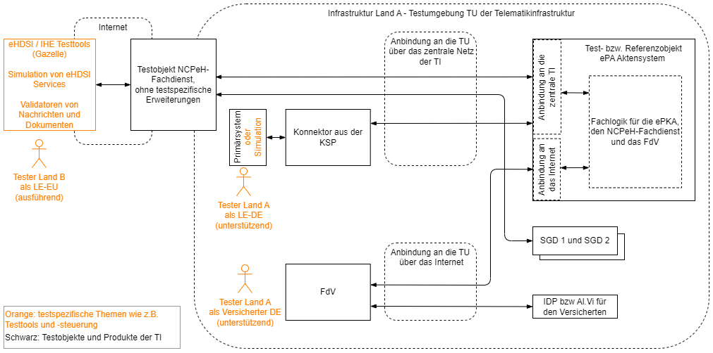

Elektronische Gesundheitskarte und Telematikinfrastruktur
Spezifikation NCPeH-Fachdienst
Anwendungsszenario Patient Summary Land A
| Version | 1.0.0 |
| Revision | 585368 |
| Stand | 23.11.22 |
| Status | in Bearbeitung |
| Klassifizierung | öffentlich_Entwurf |
| Referenzierung | gemSpec_NCPeH_FD |
Änderungen zur Vorversion
Es handelt sich um die Erstversion des Dokumentes.
Dokumentenhistorie
| Version |
Stand |
Kap./ Seite |
Grund der Änderung, besondere Hinweise |
Bearbeitung |
|---|---|---|---|---|
| 0.9.0 CC | 29.09.22 | erste Kommentierung | gematik | |
| 1.0.0 RC | 23.11.22 | zur Freigabe empfohlen | gematik | |
Die vorliegende Spezifikation beschreibt die Anforderungen zu Herstellung, Test und Betrieb des NCPeH-Fachdienstes für das Anwendungsszenario Patientenkurzakte Land-A.
Das Dokument richtet sich zum Zwecke der Realisierung an Anbieter, Betreiber und Hersteller des NCPeH-Fachdienstes.
Dieses Dokument enthält normative Festlegungen an den NCPeH-Fachdienst.
Wichtiger Schutzrechts-/Patentrechtshinweis
Die nachfolgende Spezifikation ist von der gematik allein unter technischen Gesichtspunkten erstellt worden. Im Einzelfall kann nicht ausgeschlossen werden, dass die Implementierung der Spezifikation in technische Schutzrechte Dritter eingreift. Es ist allein Sache des Anbieters oder Herstellers, durch geeignete Maßnahmen dafür Sorge zu tragen, dass von ihm aufgrund der Spezifikation angebotene Produkte und/oder Leistungen nicht gegen Schutzrechte Dritter verstoßen und sich ggf. die erforderlichen Erlaubnisse/Lizenzen von den betroffenen Schutzrechtsinhabern einzuholen. Die gematik GmbH übernimmt insofern keinerlei Gewährleistungen.
Die vom NCPeH-Fachdienst bereitgestellten (angebotenen) Schnittstellen, über die die grenzüberschreitende Datenübertragung mit NCPeHs anderer europäischen Mitgliedsstaaten erfolgt, sind durch die eHDSI spezifiziert und haben normativen Charakter. In diesem Dokument wird auf die eHDSI-Spezifikationen referenziert (siehe auch ).
Benutzte Schnittstellen werden hingegen in der Spezifikation desjenigen Produkttypen beschrieben, der diese Schnittstelle bereitstellt. Auf die entsprechenden Dokumente wird referenziert (siehe ).
Nicht Bestandteil des vorliegenden Dokumentes sind die Festlegungen zum Themenbereich:
Die Spezifikation ist im Stil einer RFC-Spezifikation verfasst. Dies bedeutet:
Anwendungsfälle als Ausdruck normativer Festlegungen werden durch Tests geprüft und nachgewiesen. Sie besitzen eine eindeutige, permanente ID, welche als Referenz verwendet werden SOLL. Die Tests werden gegen eine von der gematik gestellte Referenz-Implementierung durchgeführt.
Anwendungsfälle werden im Dokument wie folgt dargestellt:
<ID> - <Titel des Anwendungsfalles / Akzeptanzkriteriums>
Text / Beschreibung
[<=]
Die einzelnen Elemente beschreiben:
Dabei umfasst der Anwendungsfall sämtliche zwischen ID und Textmarke [<=] angeführten Inhalte.
Jeder Anwendungsfall enthält eine Beschreibung des Standardablaufs (Gutfall). Der Standablauf besteht aus Aktivitätsschritten, die auf "Technische Use Cases" (TUC) verweisen. Die TUCs sind im Kapitel beschrieben. Die TUCs sind eigene modulare Funktionsmerkmale bzw. Verantwortungsbereiche, die von verschiedenen Anwendungsfällen oder anderen TUC wiederverwendet werden können. In diesen Verantwortungsbereich greifen keine anderen Funktionsmerkmale (TUC) ein.
TUCs werden im Dokument nach folgendem Muster dargestellt:
<TUC_NCPeH_XXX>: <Titel des TUC>
Benutzte Schnittstellen und Operationsbezeichnungen in diesem Dokument auf Seiten der eHDSI orientieren sich anhand eHDSI- bzw. IHE-Namensgebung. Bei Schnittstellen zur TI werden die Bezeichnungen der TI genutzt.
Zusätzlich zu der obigen Festlegung kommen in einigen Abschnitten dieses Dokumentes weiterhin dedizierte Anforderungen zu Einsatz. Dies ist vor allem dann der Fall, wenn damit ein besonderes Prüfverfahren verknüpft ist (z. B. Produktgutachten), dass sich entsprechend auch im Produkttypsteckbrief [gemProdT_NCPeH_FD] widerspiegeln soll.
Sie werden im Dokument wie folgt dargestellt:
<AFO-ID> - <Titel der Afo>
Text / Beschreibung
[<=]
Dabei umfasst die Anforderung sämtliche zwischen Afo-ID und der Textmarke [<=] angeführten Inhalte.
An einigen Stellen wird im Dokument auf übergreifende Anforderungen in anderen Dokumenten der TI verwiesen. In diesen referenzierten Anforderungen können teilweise Formulierungen auftauchen wie z.B. "Produkt der TI", "Produkttypen der TI", "Dienste der TI". Mit Nennung dieser Anforderungen in diesem Dokument gelten diese auch für den NCPeH-Fachdienst, unabhängig davon, ob der NCPeH-Fachdienstals Produkt der TI gilt oder nicht.
Der NCPeH-Fachdienst ermöglicht Versicherten ihre Gesundheitsdaten in andere europäische Mitgliedsstaaten mitzunehmen und sie dort mit behandelnden Leistungserbringer zu teilen. Der NCPeH-Fachdienst ist in seiner Rolle als Service Provider beteiligt an der europäischen eHealth-Infrastruktur (eHDSI). Dabei ist der NCPeH-Fachdienst zuständig für eine interoperable Kommunikation und Datenaustausch zwischen der eHDSI und TI. Die Gesundheitsdaten der Versicherten werden im ePA-Aktensystem im Rahmen der Fachanwendung ePKA verwaltet. Anfragen von anderen EU-Ländern (Land-B), in denen die medizinische Behandlung des Versicherten stattfindet, werden vom NCPeH-Fachdienst unter Einhaltung von Sicherheitsschutzzielen (z.B. Integrität, Authentizität, etc.) geprüft und an das ePA-Aktensystem weitergeleitet, in dem die ePKA MIOs der Versicherten enthalten sind.
Gegenüber dem ePA-Aktensystem agiert der NCPeH-Fachdienst als ein Client. Er erfragt am ePA-Aktensystem die Autorisierung zum Zugriff auf das ePKA Konto des Versicherten. Dabei überträgt er mit der relevanten TI-Identität auch relevante Identitätsinformationen des LE-EU und des Land-B. Die Autorisierung des NCPeH-Fachdienstes für den Zugriff auf die ePKA-Daten des Versicherten wird erst dann vom ePA-Aktensystem erteilt, wenn der Versicherte mittels seines FdV seine explizite Zugriffsfreigabe erteilt hat. Mit der Übermittlung der strukturierten ePKA-Daten des Versicherten an den jeweiligen NCPeH Land-B stellt der NCPeH-Fachdienst sicher, dass der Sinn und die Aussagekraft wesentlicher medizinischer Informationen der nationalen ePKA-Daten erhalten bleiben. Dazu wandelt der NCPeH-Fachdienst die ePKA-Daten in das normative eHDSI-Pivotformat um und sorgt für die grenzüberschreitende Interoperabilität der ePKA-Daten.
Mit der Anbindung an das Netz der TESTA-ng gewährleistet der NCPeH-Fachdienst als Bindeglied zwischen der TI und der nationalen Gesundheitsinfrastruktur eines anderen EU-Mitgliedsstaates eine sichere Übertragung von Identitäts- und ePKA-Daten. Der NCPeH-Fachdienst realisiert die Vertraulichkeit und Integrität der verarbeiteten Daten über das Konzept der vertrauenswürdigen Ausführungsumgebung (VAU), die eine vertrauenswürdige Verarbeitung und verschlüsselte Persistierung der Daten sicherstellt.
Zusätzlich protokolliert der NCPeH-Fachdienst alle Ereignisse im Zusammenhang mit der Verarbeitung von Identitäts- und ePKA-Daten. Dies impliziert das Sammeln vollständiger und zeitbezogener Informationen über die Aktionen und Zustände in Bezug auf den NCPeH-Fachdienst (Audit Trails). Neben der Protokollierung führt der NCPeH-Fachdienst eine Historie von digitalen Beweisen (Evidenzen), so dass nachvollzogen werden kann, wer eine Aktion im Zusammenhang mit einer eHDSI-NCPeH-Transaktion durchgeführt hat.
Abbildung 1: Architektur des NCPeH-Fachdienstes Patient Summary Land-A
Abbildung 1 stellt die Architektur für den NCPeH-Fachdienst Anwendungsszenario Patientenkurzakte Land-A dar. Orange dargestellt sind logische Komponenten des NCPeH-Fachdienstes. Die grün dargestellten Systeme stellen Produkttypen der TI dar. Die grau dargestellten Systeme befinden sich außerhalb der Systemgrenzen des NCPeH-Fachdienstes. Die blau dargestellten Schnittstellen (blaue Linien) sind bereits durch die eHDSI spezifiziert, sie werden in diesem Dokument referenziert. Die Nutzung der rot dargestellten Schnittstellen (rote Linien) durch NCPeH-Fachdienst wird in diesem Dokument spezifiziert. Die schwarz dargestellten Verbindungen sind in Verantwortung des Anbieters und werden vom NCPeH-Fachdienstbetreiber bereitgestellt.
Das National Gateway als Komponente des NCPeH-Fachdienstes nutzt Schnittstellen der folgenden Produkttypen der TI:
Der NCPeH-Fachdienst ist über einen sicheren Zentralen Zugangspunkt (SZZP) an das zentrale Netz der TI (siehe [gemSpec_Net#3] angebunden. Die Dienste der zentralen TI, wie bspw. Schlüsselgenerierungsdienst Typ 2, Namensdienst, TSP X.509 nonQES und QES und TSL-Dienst werden über die Dienste der logischen Komponente National Gateway genutzt.
In Richtung der eHDSI kommuniziert NCPeH-Fachdienst mittels der eigenen Komponente eHDSI Service Provider mit NCPeH Land-B anderer europäischer Mitgliedsstaaten. Über dieselbe Komponente eHDSI Service Provider werden die Schnittstellen der eHDSI Configuration Service und eHDSI Terminology Service genutzt.
Im folgenden Abschnitt werden die am NCPeH-Fachdienst beteiligte Akteure betrachtet. Ein Akteur ist eine Person, Institution oder ein technisches System, die/das mit dem NCPeH-Fachdienst direkt oder indirekt über einen anderen Akteur interagiert. Diese Interaktion wird durch einen Anwendungsfall ausgelöst.
Tabelle 1: TAB_NCPeH_Übersicht_NCPeH-Fachdienst_Akteure
| Rolle | Beschreibung |
|---|---|
| Versicherter/Patient | Im NCPeH-Kontext ist ein Versicherter oder Patient eine Person, die in einem Versichertenverhältnis mit einer gesetzlichen Krankenversicherung steht. Für diese Person wird in der TI eine elektronische Patientenkurzakte gehalten. Anhand einer eindeutigen Patientenkennung (z.B. Krankenversichertennummer (KVNR)) werden mittels des NCPeH-Fachdienstes in der TI relevante demographische Versichertendaten ermittelt und dem behandelnden LE-EU zur Patientenidentifizierung bereitgestellt. Die eindeutige Identifikation des Versicherten im ePKA-Kontext erfolgt über seine KVNR, die für Anwendungen nach § 334 SGB V genutzt werden kann. Nur der Versicherte besitzt die Hoheit über die gespeicherten Daten. Der Versicherte kann Leistungserbringer im Ausland berechtigen, auf seine ePKA-Daten zuzugreifen. |
| Leistungserbringer im EU-Ausland (LE-EU) | Ein Leistungserbringer im EU-Ausland gehört zu einem zugriffsberechtigten Personenkreis nach den gesetzlichen Regelungen des EU Mitgliedsstaates und wird im Land-B (Ausland) sicher authentifiziert. Die Gültigkeit der LE-EU Identität ist innerhalb der eHDSI nach dem Circle-Of-Trust-Prinzip zur allgemeingültigen Vertrauensstellung im Land A valide. |
| Leistungserbringer-institution im EU-Ausland | Eine Leistungserbringerinstitution ist eine organisatorische Einheit oder juristische Person, in der mehrere Leistungserbringer sowie deren berufsmäßige Gehilfen gemeinsam organisiert werden (z .B. Arztpraxen, Apotheken, Krankenhäuser) und wird im eHDSI-Kontext zusammen mit der LE-Identität repräsentiert. |
| ePA-Aktensystem | Das ePA-Aktensystem ist ein Produkttyp der ePA Anwendung. Mittels der eigenen Komponente "Autorisierung" stellt das ePA-Aktensystem sicher, dass nur authentifizierte und autorisierte Nutzer mit der Dokumentenverwaltung des ePA-Aktensystems interagieren. In der Komponente "Dokumentenverwaltung" verwaltet das ePA-Aktensystem unter anderem auch die ePKA-Daten in einem Aktenkonto eines Versicherten. |
| Betreiber des NCPeH-Fachdienstes | Der Betreiber des NCPeH-Fachdienstes ist eine Organisation, die die Bereitstellung des Dienstes auf Seiten der TI erbringt und verantwortet. In den Dokumenten der gematik ist dabei der "Serviceprovider TI unterstützender Produkte" gemäß [gemKPT_Betr] gemeint. |
| Prozessverantwortlicher Audit Trails | Dieser Akteur kann zur NCPeH-Betriebsorganisation gehören, ist zuständig für Analyse und Auswertung von Sicherheitsverletzungen und die Identifikation von relevanten Sicherheitsmaßnahmen. Ferner beantwortet er rechtmäßige Anfragen der betroffenen Personen (Versicherten) oder der befugten nationalen Stellen mit dem Ziel, die für den Fall erforderlichen Beweise (Evidences) zu liefern. |
| NCPeH Land B | NCPeH eines anderen EU-Mitgliedsstaaten (Nicht Deutschland), sendet Anfragen an einen eHDSI Service Provider, empfängt Daten als Antwort auf die Anfrage und leitet sie an die eigene nationale eHealth-Infrastruktur weiter. |
| Terminologie-Verantwortlicher (BfArM) | Der Terminologie-Verantwortliche ist ein Akteur, der für die Pflege des Inhalts des MTC (Master Translation/Transcoding Catalogue) verantwortlich ist. Dies umfasst unter anderem die Zuordnung von europäisch vereinbarten Valuesets Mappings und Terminologien, die über den zentralen Terminology Service mit dem NCPeH-Fachdienst geteilt werden können. Ferner legt der Terminologie-Verantwortliche im MTC ein Rechte- und Rollenkonzept fest, mit dem entsprechende Aktionen durchgeführt werden dürfen (z.B. Mapper, Translator). Der Terminologie-Verantwortliche ist für die Übersetzung der Terminologien zuständig und ist mit den Beziehungen zwischen Kodesystemen vertraut, d. h. wie ein bestimmtes klinisches Konzept zwischen zwei oder mehreren Kodiersystemen in Beziehung gesetzt werden kann. Entsprechend den gesetzlichen Regelungen nach § 219d Absatz 6 Satz 5 & 6 ist die BfArM mit dieser Aufgabe betraut. |
| eHDSI Terminology Service | Eine Reihe von Systemkomponenten, die für die Darstellung, den Zugriff und die Pflege des terminologischen Inhalts der im Rahmen von eHDSI ausgetauschten elektronischen Dokumente verwendet werden. Der ermöglicht die zentrale Bereitstellung von für den europäischen Austausch vereinbarten Wertelisten (Master Value Catalogue), auf die anschließend auf der Ebene der an der eHDSI teilnehmenden Länder zugegriffen wird (MTC). Eine lokale Synchronisierung des MTC im NCPeH-Fachdienst ist vorgesehen. |
| eHDSI Configuration Service | Der eHDSI Configuration Service ermöglicht allen europäischen NCPeHs die technische Funktionalität und den Ort der Verfügbarkeit der eHDSI-Dienste einzusehen und zuzuordnen. Zusätzliche Informationen und Sicherheitsartefakte der NCPeHs werden gemeinsam über einen Mechanismus geteilt, um die aktuelle Konfiguration dynamisch zu veröffentlichen und untereinander zu synchronisieren. |
| Operations & Performance | Der IT-Betrieb wird vom Betreiber des NCPeH-Fachdienstes geleistet. Die Hauptaufgabe ist die robuste, resiliente und fachlich korrekte Zurverfügungstellung des NCPeH-Fachdienstes und die Übernahme der Aufgaben des IT-Servicemanagements. |
| Systemadministrator | Dieser Akteur kann zur NCPeH-Betriebsorganisation gehören, ist zuständig für Administration von Metadaten über die angebotenen eHDSI-Dienste durch NCPeH-Fachdienst und International Search Mask auf dem eHDSI Configuration Service. Ferner stellt er sicher, dass im NCPeH-Fachdienst die aktuelle Version des MTC (Master Translation/Transcoding Catalogue) vorhanden ist und dass eine regelmäßige Auswertung von Logging und Monitoring-Daten stattfindet. |
Das folgende Kapitel beschreibt übergreifende Anforderungen an den NCPeH-Fachdienst zur Unterstützung der Fachlogik.
Die Verwaltung der in der Tabelle TAB_NCPeH_KONFIGURATIONSPARAMETER aufgelisteten Konfigurationsparameter werden durch den Systemadministrator über eine Managementschnittstelle des NCPeH-Fachdienstes verwaltet und wird im im Anwendungsfall beschrieben.
Tabelle 2: TAB_NCPeH_Konfigurationsparameter
| Konfigurationsparameter |
Wert |
|---|---|
| HOME_COMMUNITY_ID_NCPeH-FD |
1.2.276.0.76.4.291 Der Wert ist die eindeutige Kennung des NCPeH-Fachdienstes und wird im Rahmen der eHDSI im grenzüberschreitenden Austausch von Gesundheitsdaten verwendet. Weitere Informationen zu dem Wert sind in [DIMDI_HCID_NCPeH] enthalten. |
| OID_ASSIGNING_AUTHORITY | 1.2.276.0.76.3.1.580.047 |
| WHITELIST_NCPeH_COUNTRY-B | Die Liste besteht aus Einträgen und enthält Angaben zu den europäischen Ländern, mit denen ein gegenseitiger Betrieb zum grenzüberschreitenden Austausch von Gesundheitsdaten besteht. Jeder Eintrag besteht aus Attributen: Ländercode (ISO 3166-1 Alpha 2) und die HomeCommunityId des NCPeH Land-B. |
| ABSOLUTE_TIMEOUT_ePA_SESSION | 20 Minuten Zeitlicher Dauerablauf einer Session zum ePA-Aktensystem Dieser Konfigurationsparameter gibt die absolute Zeit an, nach der die Session zur Dokumentenverwaltung nach einem erfolgreich aufgebauten Aktenkontext beendet wird. |
| EXPIRATION_DATE_SAML-ASSERTION | 20 Minuten Dauer der AuthenticationAssertion (siehe Kapitel ) |
| ePKA_MIO_CLASSCODE | AUS Bezeichnung: “Medizinischer Ausweis” gemäß [HL7_ValueSet_XDS] |
| ePKA_MIO_FORMATCODE | urn:gematik:ig:pka:v1.0 Bezeichnung: “Patientenkurzakte (gematik) v1.0” Der Antrag zur Registrierung des formatCodes für ePKA im CodeSystem (Deutsche Dokumentenformate FHIR) mit der OID 1.3.6.1.4.1.19376.3.276.1.5.6 ist bei IHE Deutschland gestellt. |
| ePKA_MIO_TYPECODE | BEFU Bezeichnung: “Ergebnisse Diagnostik” gemäß [HL7_ValueSet_XDS] |
| CRL_DOWNLOAD_TIMEOUT | 5 Sekunden Der Timeout-Parameter definiert hier, zu welchem Zeitpunkt das System ein Timeout bei Nichterreichbarkeit des Dienstes meldet bzw. bestimmt die maximale Dauer für das Herunterladen der CRL. |
| OCSP_RESPONSE_TIMEOUT | 3 Sekunden Der Timeout-Parameter für OCSP-Abfragen definiert hier, zu welchem Zeitpunkt der NCPeH-Fachdienst ein Timeout bei Nichterreichbarkeit des OCSP-Responder meldet. |
| CRL_CACHE_REFRESH_PERIOD | 24 Stunden Bestimmt den Aktualisierungszeitraum für den lokalen CRL-Cache. Nach Ablauf der Zeit kann je nach Bedarf erneuter Abruf der CRL-Datei erfolgen. |
| OCSP_CACHE_REFRESH_PERIOD | 24 Stunden Der Wert des Parameters bestimmt den Aktualisierungszeitraum für den lokalen Cache der OCSP-Antwort eines Zertifikats (bezogen auf die eindeutige Zertifikatsseriennummer) und stellt die Gültigkeitsdauer der OCSP-Antwort dar. |
| TERMINOLOGY_SERVICE_BASE_URL | Der Wert des Parameters ist eine Basis-URL, die für alle relativen URLs bei der Kommunikation mit dem eHDSI Terminology Service zu verwenden ist. Der Wert des Parameters wird vom eHDSI Solution Provider vorgegeben oder ist auf der Seite [eHDSI_CTS2.0_USER_GUIDE] für die jeweilige Umgebung enthalten. |
| TERMINOLOGY_SERVICE_USERNAME | Der Wert des Parameters wird durch den eHDSI Solution Provider vorgegeben, sobald NCPeH-Fachdienst in der technischen Rolle als "NCPeH User" gemäß [eHDSI_CTS#4.2] beim eHDSI Terminology Service registriert ist. Der Registrierungsprozess ist in [eHDSI_CTS2.0_USER_GUIDE] beschrieben. |
| TERMINOLOGY_SERVICE_PASSWORD | Der Wert des Parameters wird durch den eHDSI Solution Provider vorgegeben, sobald NCPeH-Fachdienst in der technischen Rolle als "NCPeH User" gemäß [eHDSI_CTS#4.2] beim eHDSI Terminology Service registriert ist. Der Registrierungsprozess ist in [eHDSI_CTS2.0_USER_GUIDE] beschrieben. |
Ein grenzüberschreitender Austausch von Gesundheitsdaten mit anderen europäischen Ländern kann erst dann erfolgen, wenn dafür notwendige technische und organisatorische Voraussetzungen geschaffen wurden. Das jeweilige europäische Land, mit dem die Gesundheitsdaten ausgetauscht werden sollen, muss nachweisen, dass es die Vorgaben zur Interoperabilität, Sicherheit und Datenschutz der eHDSI- und EU durch das Land erfolgreich umgesetzt hat. Ferner bedarf das Land vor der eigentlichen Inbetriebnahme mit einem neuen Dienst, Anwendungsfall oder Feature die offizielle Zustimmung durch das eHealth Network (das höchste Entscheidungsgremium in der EU zur eHealth). Auch die Entscheidung, ob ein Austausch von Gesundheitsdaten mit einem bestimmten europäischen Land erfolgen soll, muss durch Deutschland getroffen werden. Daher ist es notwendig, dass der NCPeH-Fachdienst die Länderidentitäten verwaltet, mit denen ein grenzüberschreitender Datenaustausch zulässig ist.
Der NCPeH-Fachdienst MUSS vor der Verarbeitung der Anfrage prüfen, ob die Identität des Land-B, von dem die Anfrage stammt, auf der WHITELIST_NCPeH_COUNTRY-B (siehe Kapitel ) enthalten ist. Dabei MUSS der NCPeH-Fachdienst die Identität des Land-B vom gültigen TLS-Zertifikat des NCPeH Land-B aus dem Element Subject: C (Country) verwenden. Falls der Ländercode nicht auf der Liste WHITELIST_NCPeH_COUNTRY-B enthalten ist, MUSS der NCPeH-Fachdienst eine Verarbeitung der Anfrage abbrechen, einen Non-Repudiation of Receipt Eintrag gemäß und einen Audit Trail Eintrag gemäß Kapitel in der Komponente Audit Repository speichern. Der NCPeH-Fachdienst MUSS dem NCPeH Land-B mit dem Fehlercode ERROR_GENERIC gemäß [eHDSI_NCPeH_Components#6.4] antworten.
Nach Versand der Fehlermeldung an das NCPeH Land-B MUSS der NCPeH-Fachdienst einen Non-Repudiation of Origin Eintrag gemäß und einen Audit Trail Eintrag gemäß Kapitel in der Komponente Audit Repository speichern.
Die Schnittstellen des NCPeH-Fachdienstes sind durch IHE XCPD Profile bzw. IHE XCA Profile definiert. In Anlehnung an das SOA-Modell werden die Nachrichtenstrukturen (Header und Body) durch IHE definiert. In eHDSI wird der SOAP-Header durch WS-Security und SAML geregelt. Der SOAP-Body wird durch den Standard definiert, der die Transaktion regelt und kann auf ebXML für XCA (zum Abrufen von klinischen Versichertendaten) oder auf HL7V3 für XCPD-Abfragen (zur Versichertenidentifizierung) basieren.
Die eHDSI beschreibt die Struktur der Nachrichten, wie sie zwischen zwei NCPeHs (Service Consumer und Service Provider) fließen soll und stellt in [eHDSI_Messaging_Profile#1] Vorgaben zur Implementierung von Nachrichtenstrukturen der eHDSI und zur Verwendung von konkreten Sicherheitsstandards bereit. Außerdem Vorgaben zur Transport- und Nachrichtenschicht, Einbettung von Sicherheitstokens und allgemeine Verarbeitung von SOAP-Nachrichten sind in [eHDSI_Messaging_Profile#5] enthalten. Weiterführende normative Vorgaben zur Nutzung und Verarbeitung der Nachrichtenformate der eHDSI, Transportschicht, SOAP Binding, SAML-Assertions und Signaturerstellung sind in [eHDSI_NCPeH_Components#4.3].
Das Vertrauen zwischen Service Consumer, Service Provider und zentralen Diensten der eHDSI basiert auf gegenseitig vertrauenswürdigen, sicheren Kanälen zwischen den zugrundeliegenden Netzknoten. Der Aufbau des gegenseitigen Vertrauens zwischen NCPeH-Fachdienst und anderen NCPeHs und zentralen Diensten der eHDSI MUSS gemäß Vorgaben aus [eHDSI_Messaging_Profile#3] und [eHDSI_NCPeH_Configuration_Production_Environment] zur Einricthung und Anwendung von TESTA-ng und TLS erfolgen.
Der NCPeH-Fachdienst MUSS beim Aufbau von TLS-Verbindungen innerhalb der eHDSI Vorgaben aus [eHDSI_Messaging_Profile#1.2] umsetzen. Dabei MUSS der NCPeH-Fachdienst TLS-Version 1.2 und TLS-Version 1.3 unterstützen Er DARF NUR empfohlene Cipher Suiten gemäß Vorgaben aus [SOGIS-IS-2020#6.1] akzeptieren.
Der NCPeH-Fachdienst MUSS das beim TLS-Handshake empfangene TLS-Zertifikat des NCPeH Land-B nach Vorgaben aus Kapitel prüfen und erst bei erfolgreicher Zertifikatsprüfung eine sichere TLS-Verbindung zum NCPeH Land-B aufbauen.
Falls bei der Überprüfung des TLS-Zertifikats die Gültigkeit erfolgreich bestätigt werden konnte, MUSS der NCPeH-Fachdienst aus dem Element Subject: C (Country) den Ländercode des Landes entnehmen, in die Variable tls_country zwischenspeichern und in den Kontext der weiteren Verarbeitung der jeweiligen eHDSI-Anfrage bringen.
Tritt bei der Prüfung des TLS-Zertifikats ein Fehler auf, MUSS der NCPeH-Fachdienst den Aufbau der TLS-Verbindung zum NCPeH Land-B abbrechen.
Innerhalb des eHDSI Circle of Trust sind alle Clients und Services (Service Consumer, Service Provider, zentrale Dienste) auf eine konsistente Systemzeit angewiesen. Daher MUSS der NCPeH-Fachdienst die Aktualität seiner Systemzeit gemäß Vorgaben aus [eHDSI_Messaging_Profile#4] abfragen und konsistent halten (Synchronisation).
Die eHDSI definiert konkrete URNs, OIDs und Coding Schema gemäß [eHDSI_NCPeH_Components#6.2], die im NCPeH-Fachdienst zu verwenden sind.
Der NCPeH-Fachdienst MUSS die Behandlung von Fehler in der Kommunikation, Nachrichten- und Dokumentenkodierung und Nachrichtenverarbeitung gemäß Vorgaben aus [eHDSI_Messaging_Profile#6] umsetzen.
In Abhängigkeit von der jeweiligen Situation wird bei Fehlerfällen auf konkrete Fehlernachrichten bzw. -codes in den einzelnen technischen Use Cases (TUC) im Kapitel näher eingegangen.
Die Authentizität und Integrität der Dienste in der eHDSI-Kommunikation wird mit digitalen Zertifikaten gesichert. Die eHDSI definiert zwei Zertifikatstypen: Seal- und TLS-Zertifikat (siehe [eHDSI_x509_Certificate_Profile#3.1]). Der NCPeH-Fachdienst benötigt nur das TLS-Zertifikatsprofil für Zwecke des Aufbaus von sicheren Verbindungen zu anderen NCPeHs oder zentralen Diensten der eHDSI. Der Herausgeber (CA) der beiden Zertifikatstypen ist GlobalSign.
Der Prozess zur Antragstellung für TLS-Zertifikate der eHDSI ist in [eHDSI_Certificates_Procedure_Request#II- TLS Certificates] und zur Verlängerung bzw. Erneuerung von Zertifikaten ist in [eHDSI_Certificates_Procedure_Request#IV- Certificates Renewal] beschrieben. Die Beschreibung der Sperrung von Zertifikaten der eHDSI ist in [eHDSI_Certificates_Procedure_Request#III- Certificates Revocation] enthalten.
Der NCPeH-Fachdienst MUSS sein privates TLS-Schlüsselmaterial im HSM erzeugen und dort zur Signaturerstellung anwenden. Der NCPeH-Fachdienst MUSS die öffentlichen Zertifikate des Herausgebers (Root und Intermediate) gemäß [eHDSI_Certificates_Procedure_Request] in seinem lokalen Truststore in der VAU hinterlegen, die bei der Prüfung von Zertifikatsketten als Vertrauensanker zu betrachten sind. Ferner MUSS der NCPeH-Fachdienst die öffentlichen Zertifikate des eHDSI Configuration und Terminology Service in seinem lokalen Truststore in der VAU speichern. Die Aufnahme der öffentlichen Zertifikate in dem lokalen Truststore erfolgt gemäß Anwendungsfall .
Der Systemadministrator muss sicherstellen, dass an den NCPeH-Fachdienst über eine Management-Schnittstelle nur gültige, nicht abgelaufene oder nicht gesperrte Zertifikate des CA oder der zentralen Dienste der eHDSI zur Installation im lokalen Truststore übergeben werden. Bei der Installation der Zertifikate MUSS der NCPeH-Fachdienst alte Zertifikate der CA und der zentralen eHDSI-Dienste aus dem lokalen Truststore entfernen. Bei der Befüllung des Truststore MUSS der NCPeH-Fachdienst alle Service Metadata der berechtigten NCPeH Land-B (gemäß Einträgen im Konfigurationsparameter WHITELIST_NCPeH_COUNTRY-B aus Kapitel ) vom Configuration Service der eHDSI herunterladen, in den lokalen Truststore aufnehmen und alte Zertifikate der NCPeH Land-B aus dem Truststore entfernen (siehe Kapitel ).
Das Vertrauen zum NCPeH Land-B wird durch die eHDSI-PKI sichergestellt, da die gegenseitige Authentifizierung der beiden Kommunikationsteilnehmer beim Aufbau der TLS-Verbindung unter Nutzung der TLS-Zertifikate erfolgt, deren Zertifikatsherausgeber (CA) der gemeinsame Vertrauensanker ist. Bei Erstellung von SAML-Assertions (Identity und TRC-Assertion) durch NCPeH Land-B, deren Signatur mit einem Seal-Zertifikat der eHDSI erstellt wurde, kann durch die Prüfung im NCPeH-Fachdienst auf gemeinsamen Zertifikatsherausgeber (CA) das Vertrauen zu dem Seal-Zertifikat herstellen.
Wird für die Signatur der SAML-Assertions im Land-B ein Seal-Zertifikat einer anderen PKI verwendet, muss der NCPeH Land-B eine SMP-Datei inkl. des öffentlichen Seal-Zertifikats einrichten und sie auf dem zentralen eHDSI Configuration Service mit anderen NCPeHs teilen. Damit der NCPeH-Fachdienst das Seal-Zertifikat prüfen kann, MUSS im NCPeH-Fachdienst das öffentliche Zertifikat des Herausgebers, welches das Seal-Zertifikat ausgestellt hat, in den lokalen Truststore aufgenommen werden (siehe ). Der NCPeH-Fachdienst MUSS die Prüfung des Seal-Zertifikats gemäß durchführen. Dadurch kann der NCPeH-Fachdienst dem öffentlichen Seal-Zertifikat vertrauen und die Integrität und Authentizität der SAML-Assertion des NCPeH Land-B validieren.
Der NCPeH-Fachdienst MUSS das zu prüfende Zertifikat des NCPeH Land-B (SEAL- oder TLS-Zertifikat) gemäß Vorgaben aus [eHDSI_X509_Certificate_Profile#2.4] und nach folgenden Schritten überprüfen:
Die eHDSI sieht vor, dass jeder NCPeH seine Service Metadata mittels des SMP/SML-Protokolls an den Configuration Service der eHDSI übermitteln muss, damit bei grenzüberschreitendem Datenaustausch die Vertraulichkeit, Integrität und Nichtabstreitbarkeit gewährleistet wird. Dies gilt auch für NCPeH Land-B. Damit der NCPeH-Fachdienst sichere TLS-Verbindungen zu NCPeH Land-B aufbauen und die Authentizität und Integrität der IdA-/TRC-Assertions, die durch NCPeH Land-B oder eine andere Entität aus Land-B ausgestellt wurden, validieren kann, muss der NCPeH-Fachdienst über die gültigen Service Metadata der NCPeH Land-B verfügen.
Die auf dem eHDSI Configuration Service verfügbaren Service Metadata der NCPeH Land-B befinden sich in einem öffentlichen Verzeichnis, aus dem alle NCPeHs die Service Metadata abrufen können. Der NCPeH-Fachdienst MUSS täglich die Service Metadata der NCPeH Land-B (siehe Konfigurationsparameter WHITELIST_NCPeH_COUNTRY-B ) mittels des SMP/SML-Protokolls gemäß Vorgaben aus [eHDSI_Service_Location_and_Capability_Lookup_Profile#3] und [BDX-smp-v1.0] vom eHDSI Configuration Service abrufen. Beim Abruf von länderspezifischen Service Metadata MUSS der NCPeH-Fachdienst das Element ServiceGroup/ParticipantIdentifier nach folgender Struktur befüllen und in der Anfrage an den eHDSI Configuration Service senden:
"urn:ehealth:" + Ländercode + ":ncp-idp". Der Ländercode des Land-B muss dem Format gemäß ISO 3166-1 Alpha 2 entsprechen.
Der NCPeH-Fachdienst MUSS im Erfolgsfall das in der Rückmeldung enthaltene XML-Dokument (SignedServiceMetadata-Dokument) auf Schemavalidierung nach Vorgaben aus [BDX-smp-v1.0] prüfen. Falls das Dokument schemakonform ist, MUSS der NCPeH-Fachdienst die vom eHDSI Configuration Service erstellte Dokumentensignatur aus dem Element SignedServiceMetadata/Signature auf Gültigkeit gemäß Vorgaben aus [BDX-smp-v1.0#3.6.2] prüfen. Bei dem Zertifikat aus dem Element ds:X509Data MUSS es sich um das öffentliche Zertifikat des eHDSI Configuration Service handeln und das Zertifikat MUSS bereits im lokalen Truststore des NCPeH-Fachdienstes vorhanden sein. Dieses Zertifikat MUSS gemäß Kapitel geprüft werden.
Der NCPeH-Fachdienst DARF für die Events "IDP Provide HCP Authentication used for proprietary issuance" und "NCP Provide TRC Assertion" gemäß [eHDSI_Audit_Trail_Profile#2.3.5.7] NUR die Service Metadata zur weiteren Datenverarbeitung extrahieren, deren folgende Elemente die Prüfkriterien erfüllen:
Tabelle 3: TAB_NCPeH_Service_Metadata_IDP_Provider
| Event | Element aus SignedServiceMetadata-Datei | Prüfkriterium |
|---|---|---|
| IDP Provide HCP Authentication used for proprietary issuance | SignedServiceMetadata/ServiceMetadata/ServiceInformation/DocumentIdentifier | MUSS identisch mit dem Wert sein: urn:ehealth:CountryBIdentityProvider::identityProvider::HPAuthentication##epsos-91 |
| SignedServiceMetadata/ServiceMetadata/ServiceInformation/ProcessList/Process/ProcessIdentifier | MUSS identisch mit dem Wert sein: urn:identityProvider::HPAuthentication |
|
| NCP Provide TRC Assertion | SignedServiceMetadata/ServiceMetadata/ServiceInformation/DocumentIdentifier | MUSS identisch mit dem Wert sein: urn:ehealth:CountryBNCP::identityProvider::TRCAssertion##eHDSI-92 |
| SignedServiceMetadata/ServiceMetadata/ServiceInformation/ProcessList/Process/ProcessIdentifier | MUSS identisch mit dem Wert sein: urn:identityProvider::TRCAssertion |
Falls bereits für ein ausgewähltes ProcessIdentifier (siehe Tabelle TAB_NCPeH__SERVICE_METADATA_IDP_PROVIDER und unten Abschnitt "Speicherung von Referenzwerten") bezogen auf ein Land-B im Truststore ein Zertifikat vorhanden ist, MUSS der NCPeH-Fachdienst die SMP-Datei auf Aktualität prüfen, bevor mit Signatur- und Zertifikatsprüfung der SMP-Datei begonnen wird. Die Prüfung besteht aus einem Vergleich des bereits in der VAU gespeicherten Referenzwertes SignatureValue (siehe unten Abschnitt "Speicherung von Referenzwerten") mit dem Wert des Elementes ServiceMetadata/ServiceInformation/Extension/Signature/SignatureValue aus der neu heruntergeladenen SMP-Datei. Falls die Werte identisch sind, kann davon ausgegangen werden, dass die SMP-Datei keine Änderungen enthält und das im Truststore vorhandene Zertifikat nicht aktualisiert oder entfernt werden muss. An dieser Stelle der NCPeH-Fachdienst SOLL die SMP-Datei nicht weiterverarbeiten.
Ansonsten, falls die Werte unterschiedlich sind, MUSS der NCPeH-Fachdienst mit der weiteren Verarbeitung der SMP-Datei fortsetzen.
Jede ausgewählte ServiceMetadata-Datei enthält eine Signatur, die mit dem Schlüsselmaterial des NCPeH Land-B erstellt wurde. Die Gültigkeit der Signatur soll die Integrität der jeweiligen ServiceMetadata bestätigen. Der NCPeH-Fachdienst MUSS das Zertifikat aus dem Element ServiceMetadata/ServiceInformation/Extension/Signature extrahieren und die vollständige Zertifikatskette überprüfen, ob das Zertifikat von der vertrauenswürdigen CA der eHDSI ausgestellt wurde. Die Überprüfung des extrahierten Zertifikats MUSS gemäß Kapitel durchgeführt werden. Der NCPeH-Fachdienst MUSS die Signatur aus dem Element ServiceMetadata/ServiceInformation/Extension/Signature nach Vorgaben aus [BDX-smp-v1.0#3.6.2] validieren.
Nach erfolgreicher Signatur- und Zertifikatsprüfung MUSS der NCPeH-Fachdienst das nächste Zertifikat aus dem folgenden Element der ServiceMetadata extrahieren, gemäß Vorgaben im Kapitel prüfen und nach erfolgreicher Zertifikatsprüfung NUR dieses Zertifikat in den lokalen Truststore aufnehmen:
Speicherung von Referenzwerten
In diesem Zusammenhang MUSS der NCPeH-Fachdienst folgende Referenzwerte mit dem vorher extrahierten Zertifikat in Verbindung setzen und in der VAU speichern:
Der NCPeH-Fachdienst MUSS vor der Aufnahme des Zertifikats aus dem Element ServiceMetadata/ServiceInformation/ProcessList/Process/ServiceEndpointList/
Endpoint/Certificate in den lokalen Truststore sicherstellen, dass für das jeweilige Event "IDP Provide HCP Authentication used for proprietary issuance" bzw. "NCP Provide TRC Assertion" gemäß [eHDSI_Audit_Trail_Profile#2.3.5.7] in dem Zeitintervall aus der ServiceMetadata (ServiceActivationDate bis ServiceExpirationDate) kein anderes Zertifikat im lokalen Truststore enthalten ist.
Die Inhalte aus den extrahierten ServiceMetadata, deren Validierung der Signaturen und Zertifikate und Prüfung auf Schemakonformität mit einem Fehler enden, DÜRFEN NICHT in den lokalen Truststore bzw. in der VAU des NCPeH-Fachdienstes aufgenommen oder für Zwecke der Datenverarbeitung im NCPeH-Fachdienst verwendet werden.
Der NCPeH-Fachdienst MUSS bei jedem Abruf der ServiceMetadata eines NCPeH Land-B vom zentralen eHDSI Configuration Service einen Audit Trail Eintrag gemäß Kapitel erstellen und im lokalen Audit Repository speichern.
Die Identity Assertion ("IdA") des LE-EU wird vom Behandlungsland (Land-B) ausgestellt und enthält Aussagen über die Identität, Authentizität, Zugehörigkeit und Rolle des LE-EU, der demographische oder klinische Daten des behandelnden Versicherten anfordert. Die IdA ist als SAML Assertion obligatorischer Bestandteil von Patient Summary relevanten eHDSI-Anfragen (XCPD, XCA.findDocument und XCA.retrieveDocument). Jeder NCPeH Land-B, der die SAML Assertion zusammen mit eHDSI-Anfragen versendet, steht gemäß [eHDSI_SAML_Profile] für die Richtigkeit, Integrität und Authentizität aller in dieser Assertion gekapselten Informationen ein. Die Identity Assertion des LE-EU muss von dem NCPeH Land-B oder einem Identity Provider aus Land-B elektronisch signiert und in das Security Header Envelope/Header/Security/Assertion der SOAP-Nachricht eingetragen werden. Das öffentlichen Zertifikat des NCPeH Land-B oder des Identity Providers aus dem Land-B, mit dem die Signatur der IdA geprüft werden kann, muss dem NCPeH-Fachdienst über den eHDSI Configuration Service zum Herunterladen bereitgestellt werden (siehe ). Nach Herunterladen und erfolgreicher Prüfung der öffentlichen Zertifikate MUSS der NCPeH-Fachdienst sie in den lokalen Truststore in der VAU speichern. Der NCPeH-Fachdienst agiert gegenüber NCPeH Land-B als SAML Assertion Consumer und sorgt für ordnungsgemäße Prüfung der IdA und der Verarbeitung von Inhalten der IdA.
Die eingehende SOAP-Anfrage muss im Security Header genau eine Identity Assertion für einen LE-EU enthalten. Falls die Anfrage eine zusätzliche Identity Assertion für Next of Kin oder für einen weiteren LE-EU enthält, MUSS der NCPeH-Fachdienst eine weitere Verarbeitung der Anfrage abbrechen und die Anfrage mit dem Code Sender und Subcode Invalid Security Token gemäß Vorgaben aus [eHDSI_NCPeH_Components#4.4.2.4] zurückweisen.
Die IdA MUSS die Vorgaben aus [eHDSI_SAML_Profile#2] erfüllen. Der NCPeH-Fachdienst MUSS das Profil des öffentlichen Zertifikats aus dem Element Envelope/Header/Security/Assertion/Signature/KeyInfo der IdA gemäß Vorgaben aus [eHSDI_Certificates_Profile] prüfen. Die Validierung des öffentlichen Zertifikats MUSS gemäß Vorgaben aus Kapitel erfolgen.
Der NCPeH-Fachdienst MUSS die elektronische Signatur der IdA validieren, indem er den Security Header gemäß Vorgaben aus [OASIS_WS-Security#8.4] verarbeitet. Schlägt die Signaturvalidierung fehl, MUSS der NCPeH-Fachdienst die SMP-Datei des NCPeH Land-B gemäß Kapitel , erneut herunterladen und ggf. das entsprechende Seal-Zertifikat für Identity Assertions im Truststore aktualisieren. Nach erfolgreicher Aktualisierung des Seal-Zertifikats im lokalen Truststore MUSS der NCPeH-Fachdienst die elektronische Signatur der IdA gemäß [OASIS_WS-Security#8.4] validieren.
Schlägt die Validierung erneut fehl, so verhält sich die zugehörige Transaktion wie ein Authentifizierungsfehler und ein Audit Trail Ereignis für den Authentifizierungsfehler wird gemäß Vorgaben aus [eHDSI_SAML_Profile#2.4] erstellt und in das Audit Repository gespeichert. Der NCPeH-Fachdienst MUSS bei Fehlern, die bei der Verarbeitung und Validierung der IdA entstehen, mit einer entsprechenden Fehlermeldung gemäß [eHDSI_NCPeH_Components#4.4.2.4] auf die erhaltene SOAP-Anfrage antworten.
Der NCPeH-Fachdienst MUSS im Erfolgsfall (erfolgreiche Validierung der IdA) aus der IdA folgende Identitätsattribute des LE-EU einlesen und in die entsprechende Variablen abspeichern, damit er die Identitätsattribute in den TUCs für Zwecke der Protokollierung und der Authentisierung gegenüber dem ePA-Aktensystem (siehe Kapitel ) weiter verarbeiten kann:
Tabelle 4: TAB_NCPeH_Identitätsattribute_LE-EU
| Variable für Zwecke der internen Datenverarbeitung | Element aus Identity Assertion des LE-EU (gemäß Tabelle aus [eHDSI_SAML_Profile#2.3]) |
|---|---|
| ida_name-id | Assertion/Subject/NameID |
| ida_subject-id | urn:oasis:names:tc:xacml:1.0:subject:subject-id |
| ida_role | urn:oasis:names:tc:xacml:2.0:subject:role |
| ida_functional-role | urn:oasis:names:tc:xspa:1.0:subject:functional-role |
| ida_permissions | urn:oasis:names:tc:xspa:1.0:subject:hl7:permission |
| ida_on-behalf-of | urn:ehdsi:names:subject:on-behalf-of |
| ida_organization-id | urn:oasis:names:tc:xspa:1.0:subject:organization-id |
| ida_healthcare-facility-type | urn:ehdsi:names:subject:healthcare-facility-type |
| ida_purposeofuse | urn:oasis:names:tc:xspa:1.0:subject:purposeofuse |
| ida_locality | urn:oasis:names:tc:xspa:1.0:environment:locality |
Der NCPeH-Fachdienst MUSS die Variablen bzw. deren Werte eindeutig der Aktensession zuordnen, an die die Identität des LE-EU und die Identität des Versicherten (enthalten in der XCPD-Anfrage oder bei XCA-Anfragen in der TRC-Assertion) dessen ePKA-Daten der LE-EU abrufen möchte, gebunden sind. Durch die Zuordnung der Variablen zu der entsprechenden Aktensession MÜSSEN Identitätsattribute anderer LE-EU in anderen Aktensessions des NCPeH-Fachdienstes unberührt bleiben.
Der NCPeH-Fachdienst DARF nur Anfragen, in denen das Element "urn:oasis:names:tc:xspa:1.0:subject:purposeofuse" den Wert TREATMENT oder EMERGENCY enthält, akzeptieren und verarbeiten. Enthält das Element einen anderen Wert, MUSS der NCPeH-Fachdienst eine weitere Verarbeitung der Anfrage abbrechen und die Anfrage mit dem Code Sender und Subcode Invalid Security Token gemäß Vorgaben aus [eHDSI_NCPeH_Components#4.4.2.4] zurückweisen.
Das folgende Beispiel stellt die Struktur einer Identity Assertion eines LE-EU dar:
| <soapenv:Envelope xmlns:soapenv="http://schemas.xmlsoap.org/soap/envelope/"> <soapenv:Header> <wsse:Security xmlns:wsse="http://docs.oasis-open.org/wss/2004/01/oasis-200401-wss-wssecurity-secext-1.0.xsd"> <saml2:Assertion xmlns:saml2="urn:oasis:names:tc:SAML:2.0:assertion" xmlns:xsd="http://www.w3.org/2001/XMLSchema" ID="_9a76c3b4-0d6e-492d-ba8b-7c4371fa0b28" IssueInstant="2019-05-24T08:10:47.876Z" Version="2.0"> <saml2:Issuer NameQualifier="urn:epsos:wp34:assertions">urn:idp:AT:countryB</saml2:Issuer> <ds:Signature xmlns:ds="http://www.w3.org/2000/09/xmldsig#"> <ds:SignedInfo> <ds:CanonicalizationMethod Algorithm="http://www.w3.org/2001/10/xml-exc-c14n#"/> <ds:SignatureMethod Algorithm="http://www.w3.org/2001/04/xmldsig-more#rsa-sha256"/> <ds:Reference URI="#_9a76c3b4-0d6e-492d-ba8b-7c4371fa0b28"> <ds:Transforms> <ds:Transform Algorithm="http://www.w3.org/2000/09/xmldsig#enveloped-signature"/> <ds:Transform Algorithm="http://www.w3.org/2001/10/xml-exc-c14n#"> <ec:InclusiveNamespaces xmlns:ec="http://www.w3.org/2001/10/xml-exc-c14n#" PrefixList="xsd"/> </ds:Transform> </ds:Transforms> <ds:DigestMethod Algorithm="http://www.w3.org/2001/04/xmlenc#sha256"/> <ds:DigestValue>...</ds:DigestValue> </ds:Reference> </ds:SignedInfo> <ds:SignatureValue>...</ds:SignatureValue> <ds:KeyInfo> <ds:X509Data> <ds:X509Certificate>...</ds:X509Certificate> </ds:X509Data> </ds:KeyInfo> </ds:Signature> <saml2:Subject> <saml2:NameID Format="urn:oasis:names:tc:SAML:1.1:nameid-format:emailAddress"> xaver.mueller@akhwien.at</saml2:NameID> <saml2:SubjectConfirmation Method="urn:oasis:names:tc:SAML:2.0:cm:sender-vouches"/> </saml2:Subject> <saml2:Conditions NotBefore="2019-05-24T08:10:47.876Z" NotOnOrAfter="2019-05-24T12:10:47.876Z"/> <saml2:AuthnStatement AuthnInstant="2019-05-24T08:10:47.876Z"> <saml2:AuthnContext> <saml2:AuthnContextClassRef>urn:oasis:names:tc:SAML:2.0:ac:classes:Password </saml2:AuthnContextClassRef> </saml2:AuthnContext> </saml2:AuthnStatement> <saml2:AttributeStatement> <saml2:Attribute FriendlyName="XSPA subject" Name="urn:oasis:names:tc:xacml:1.0:subject:subject-id" NameFormat="urn:oasis:names:tc:SAML:2.0:attrname-format:uri"> <saml2:AttributeValue xmlns:xsi="http://www.w3.org/2001/XMLSchema-instance" xsi:type="xsd:string">Xaver Mueller</saml2:AttributeValue> </saml2:Attribute> <saml2:Attribute FriendlyName="XSPA role" Name="urn:oasis:names:tc:xacml:2.0:subject:role" NameFormat="urn:oasis:names:tc:SAML:2.0:attrname-format:uri"> <saml2:AttributeValue xmlns:xsi="http://www.w3.org/2001/XMLSchema-instance" xsi:type="xsd:string"> physician</saml2:AttributeValue> </saml2:Attribute> <saml2:Attribute FriendlyName="XSPA Organization" Name="urn:oasis:names:tc:xspa:1.0:subject:organization" NameFormat="urn:oasis:names:tc:SAML:2.0:attrname-format:uri"> <saml2:AttributeValue xmlns:xsi="http://www.w3.org/2001/XMLSchema-instance" xsi:type="xsd:string"> Vivantes Klinikum am Urban</saml2:AttributeValue> </saml2:Attribute> <saml2:Attribute FriendlyName="XSPA Organization ID" Name="urn:oasis:names:tc:xspa:1.0:subject:organization-id" NameFormat="urn:oasis:names:tc:SAML:2.0:attrname-format:uri"> <saml2:AttributeValue xmlns:xsi="http://www.w3.org/2001/XMLSchema-instance" xsi:type="xsd:anyURI"> urn:oid:2.16.470.1.100.1.1.1000.990.1</saml2:AttributeValue> </saml2:Attribute> <saml2:Attribute FriendlyName="epSOS Healthcare Facility Type" Name="urn:epsos:names:wp3.4:subject:healthcare-facility-type" NameFormat="urn:oasis:names:tc:SAML:2.0:attrname-format:uri"> <saml2:AttributeValue xmlns:xsi="http://www.w3.org/2001/XMLSchema-instance" xsi:type="xsd:string"> Hospital</saml2:AttributeValue> </saml2:Attribute> <saml2:Attribute FriendlyName="XSPA Purpose Of Use" Name="urn:oasis:names:tc:xspa:1.0:subject:purposeofuse" NameFormat="urn:oasis:names:tc:SAML:2.0:attrname-format:uri"> <saml2:AttributeValue xmlns:xsi="http://www.w3.org/2001/XMLSchema-instance" xsi:type="xsd:string"> TREATMENT</saml2:AttributeValue> </saml2:Attribute> <saml2:Attribute FriendlyName="XSPA Locality" Name="urn:oasis:names:tc:xspa:1.0:environment:locality" NameFormat="urn:oasis:names:tc:SAML:2.0:attrname-format:uri"> <saml2:AttributeValue xmlns:xsi="http://www.w3.org/2001/XMLSchema-instance" xsi:type="xsd:string"> Vivantes Klinikum am Urban</saml2:AttributeValue> </saml2:Attribute> <saml2:Attribute FriendlyName="Hl7 Permissions" Name="urn:oasis:names:tc:xspa:1.0:subject:hl7:permission" NameFormat="urn:oasis:names:tc:SAML:2.0:attrname-format:uri"> <saml2:AttributeValue xmlns:xsi="http://www.w3.org/2001/XMLSchema-instance" xsi:type="xsd:string"> urn:oasis:names:tc:xspa:1.0:subject:hl7:permission:PRD-006</saml2:AttributeValue> <saml2:AttributeValue xmlns:xsi="http://www.w3.org/2001/XMLSchema-instance" xsi:type="xsd:string"> urn:oasis:names:tc:xspa:1.0:subject:hl7:permission:PRD-003</saml2:AttributeValue> <saml2:AttributeValue xmlns:xsi="http://www.w3.org/2001/XMLSchema-instance" xsi:type="xsd:string"> urn:oasis:names:tc:xspa:1.0:subject:hl7:permission:PRD-004</saml2:AttributeValue> <saml2:AttributeValue xmlns:xsi="http://www.w3.org/2001/XMLSchema-instance" xsi:type="xsd:string"> urn:oasis:names:tc:xspa:1.0:subject:hl7:permission:PRD-005</saml2:AttributeValue> <saml2:AttributeValue xmlns:xsi="http://www.w3.org/2001/XMLSchema-instance" xsi:type="xsd:string"> urn:oasis:names:tc:xspa:1.0:subject:hl7:permission:PRD-010</saml2:AttributeValue> <saml2:AttributeValue xmlns:xsi="http://www.w3.org/2001/XMLSchema-instance" xsi:type="xsd:string"> urn:oasis:names:tc:xspa:1.0:subject:hl7:permission:PRD-016</saml2:AttributeValue> <saml2:AttributeValue xmlns:xsi="http://www.w3.org/2001/XMLSchema-instance" xsi:type="xsd:string"> urn:oasis:names:tc:xspa:1.0:subject:hl7:permission:PPD-032</saml2:AttributeValue> <saml2:AttributeValue xmlns:xsi="http://www.w3.org/2001/XMLSchema-instance" xsi:type="xsd:string"> urn:oasis:names:tc:xspa:1.0:subject:hl7:permission:PPD-033</saml2:AttributeValue> </saml2:Attribute> </saml2:AttributeStatement> </saml2:Assertion> </wsse:Security> </soapenv:Header> </soapenv:Envelope> |
Die TRC-Assertion ist eine SAML-Assertion. Sie bescheinigt das Bestehen einer Behandlungsbeziehung zwischen einem Versicherten und einem LE-EU und liefert Informationen über den Kontext eines bestimmten Behandlungsszenarios. Die Datenstruktur, Empfehlungen und Einschränkungen zur Nutzung der TRC-Assertion sind in [eHDSI_SAML_Profile#4] profiliert und beschrieben. In Security Header von XCPD-Anfragen ist nur eine IdA vorgesehen, eine TRC-Assertion DARF dort NICHT enthalten sein. Erst nach erfolgreicher Identifizierung des Versicherten im Ausland und wenn der behandelnde LE-EU die klinischen Versichertendaten vom NCPeH-Fachdienst abgerufen möchte, neben der IdA MUSS in Security Header von XCA-Anfragen auch eine TRC-Assertion enthalten sein.
Der NCPeH-Fachdienst MUSS das öffentliche Zertifikat aus dem Element Envelope/Header/Security/Assertion/Signature/KeyInfo der TRC-Assertion gemäß Vorgaben aus [eHSDI_Certificates_Profile] verifizieren.
Der NCPeH-Fachdienst MUSS die elektronische Signatur der TRC-Assertion validieren, indem er den Security Header gemäß Vorgaben aus [OASIS_WS-Security#8.4] verarbeitet. Schlägt die Signaturvalidierung fehl, MUSS der NCPeH-Fachdienst die SMP-Datei des NCPeH Land-B gemäß Kapitel erneut herunterladen und ggf. das entsprechende Seal-Zertifikat für TRC-Assertion im Truststore aktualisieren. Nach erfolgreicher Aktualisierung des Seal-Zertifikats im lokalen Truststore MUSS der NCPeH-Fachdienst die elektronische Signatur der TRC-Assertion gemäß [OASIS_WS-Security#8.4] validieren.
Schlägt die Signaturvalidierung erneut fehl, so verhält sich die zugehörige Transaktion wie ein Autorisierungsfehler, und ein Audit Trail Ereignis wird gemäß Vorgaben aus [eHDSI_SAML_Profile#4.4] erstellt und in dem Audit Repository gespeichert. Der NCPeH-Fachdienst MUSS bei Fehlern, die bei der Verarbeitung und Validierung der TRC-Assertion entstehen, mit einer entsprechenden Fehlermeldung gemäß [eHDSI_NCPeH_Components#4.4.2.4] auf die erhaltene SOAP-Anfrage antworten.
Der NCPeH-Fachdienst MUSS folgende Elemente prüfen:
Neben Vorgaben aus [eHDSI_SAML_Profile#4] MUSS der NCPeH-Fachdienst folgende Prüfschritte durchführen und im Erfolgsfall die entnommenen Werte aus der TRC-Assertion in die entsprechenden Variablen für Zwecke der internen Verarbeitung der entsprechenden XCA-Anfragen zu der Aktensession (bezogen auf Identität des LE-EU und Versicherten) zwischenspeichern:
Tabelle 5: TAB_NCPeH_TRC-Assertion
| Variable für Zwecke der internen Datenverarbeitung | Element aus Identity Assertion des LE-EU (gemäß Tabelle aus [eHDSI_SAML_Profile#2.3]) |
|---|---|
| trc_kvnr | Der Wert aus dem Element Assertion/AttributeStatement/Attribute@Name="urn:oasis:names:tc:xacml:1.0:resource:resource-id muss folgender inhaltlichen Struktur entsprechen: 1. Der unveränderbare Teil der KVNR des Versicherten (10 Stellen) 2. "^^^&" 3. Wert des Konfigurationsparameters OID_ASSIGNING_AUTHORITY aus dem Kapitel 4. "&ISO" Beispiel: B123456789^^^&1.2.276.0.76.3.1.580.047&ISO Der unveränderbare Teil der KVNR des Versicherten muss folgender Struktur erfüllen: 10-stellige KVNR Format: [A-Z][0-9]{9} Beschreibung des Aufbaus: 1. Stelle: Alpha-Zeichen (Wertebereich A - Z, ohne Umlaute), 2. bis 10. Stelle: 9-stellige Ziffernfolge |
| trc_purposeofuse | Der Wert aus dem Element Assertion/AttributeStatement/Attribute@Name="urn:oasis:names:tc:xspa:1.0:subject:purposeofuse" enthält den selben Wert wie die Variable ida_purposeofuse (siehe Kapitel ). Das Element darf nur den Wert TREATMENT oder EMERGENCY enthalten. |
| trc_nameid | Der Wert des Elementes Assertion/Subject/NameID MUSS identisch mit dem Wert aus der Variable ida_name-id (siehe Kapitel ) sein. Die Angaben zum Format (Assertion/Subject/NameID@Format) aus der TRC-Assertion und IdA MÜSSEN identisch sein und die Kriterien aus [eHDSI_SAML_Profile#4.1 und #2.1] einhalten. |
Falls es bei der Durchführung der Prüfkriterien zu Fehlern kommt, MUSS der NCPeH-Fachdienst eine weitere Verarbeitung der Anfrage abbrechen und die Anfrage mit dem Code Sender und Subcode Invalid Security Token gemäß Vorgaben aus [eHDSI_NCPeH_Components#4.4.2.4] zurückweisen. Dabei MUSS der NCPeH-Fachdienst einen Audit Trail Eintrag gemäß Vorgaben aus [eHDSI_SAML_Profile#4.4] erstellen und in dem Audit Repository schreiben.
Das folgende Beispiel stellt die Struktur einer TRC-Assertion dar:
| <soapenv:Envelope xmlns:soapenv="http://schemas.xmlsoap.org/soap/envelope/"> <soapenv:Header> <wsse:Security xmlns:wsse="http://docs.oasis-open.org/wss/2004/01/oasis-200401-wss-wssecurity-secext-1.0.xsd"> <saml2:Assertion xmlns:saml2="urn:oasis:names:tc:SAML:2.0:assertion" xmlns:xsd="http://www.w3.org/2001/XMLSchema" ID="_139caba7-5d62-49ff-8ef8-37df59be8481" IssueInstant="2019-05-24T08:13:09.780Z" Version="2.0"> <saml2:Issuer>urn:initgw:AT:countryB</saml2:Issuer> <ds:Signature xmlns:ds="http://www.w3.org/2000/09/xmldsig#"> <ds:SignedInfo> <ds:CanonicalizationMethod Algorithm="http://www.w3.org/2001/10/xml-exc-c14n#"/> <ds:SignatureMethod Algorithm="http://www.w3.org/2001/04/xmldsig-more#rsa-sha256"/> <ds:Reference URI="#_139caba7-5d62-49ff-8ef8-37df59be8481"> <ds:Transforms> <ds:Transform Algorithm="http://www.w3.org/2000/09/xmldsig#enveloped-signature"/> <ds:Transform Algorithm="http://www.w3.org/2001/10/xml-exc-c14n#"> <ec:InclusiveNamespaces xmlns:ec="http://www.w3.org/2001/10/xml-exc-c14n#" PrefixList="xsd"/> </ds:Transform> </ds:Transforms> <ds:DigestMethod Algorithm="http://www.w3.org/2001/04/xmlenc#sha256"/> <ds:DigestValue>...</ds:DigestValue> </ds:Reference> </ds:SignedInfo> <ds:SignatureValue>...</ds:SignatureValue> <ds:KeyInfo> <ds:X509Data> <ds:X509Certificate>...</ds:X509Certificate> </ds:X509Data> </ds:KeyInfo> </ds:Signature> <saml2:Subject> <saml2:NameID Format="urn:oasis:names:tc:SAML:1.1:nameid-format:emailAddress"> xaver.mueller@akhwien.at</saml2:NameID> <saml2:SubjectConfirmation Method="urn:oasis:names:tc:SAML:2.0:cm:sender-vouches"/> </saml2:Subject> <saml2:Conditions NotBefore="2019-05-24T08:13:09.780Z" NotOnOrAfter="2019-05-24T10:13:09.780Z"/> <saml2:Advice> <saml2:AssertionIDRef>_9a76c3b4-0d6e-492d-ba8b-7c4371fa0b28</saml2:AssertionIDRef> </saml2:Advice> <saml2:AuthnStatement AuthnInstant="2019-05-24T08:13:09.780Z"> <saml2:AuthnContext> <saml2:AuthnContextClassRef>urn:oasis:names:tc:SAML:2.0:ac:classes:PreviousSession </saml2:AuthnContextClassRef> </saml2:AuthnContext> </saml2:AuthnStatement> <saml2:AttributeStatement> <saml2:Attribute FriendlyName="XSPA Subject" Name="urn:oasis:names:tc:xacml:1.0:resource:resource-id" NameFormat="urn:oasis:names:tc:SAML:2.0:attrname-format:uri"> <saml2:AttributeValue xmlns:xsi="http://www.w3.org/2001/XMLSchema-instance" xsi:type="xsd:string"> B123456789^^^&1.2.276.0.76.3.1.580.047&ISO</saml2:AttributeValue> </saml2:Attribute> <saml2:Attribute FriendlyName="XSPA Purpose Of Use" Name="urn:oasis:names:tc:xspa:1.0:subject:purposeofuse" NameFormat="urn:oasis:names:tc:SAML:2.0:attrname-format:uri"> <saml2:AttributeValue xmlns:xsi="http://www.w3.org/2001/XMLSchema-instance" xsi:type="xsd:string"> TREATMENT</saml2:AttributeValue> </saml2:Attribute> </saml2:AttributeStatement> </saml2:Assertion> </wsse:Security> </soapenv:Header> </soapenv:Envelope> |
Die Non-Repudiation of Origin (NRO) ist als SubmissionAcceptanceRejection (SAR) gemäß [ETSI_REM#5.1.1] definiert. Das SAR-Objekt dient als Nachweis (Evidence), dass eine bestimmte Nachricht vom NCPeH-Fachdienst (in der Rolle als Absender) zu dem im Nachweis angegebenen Zeitpunkt erfolgreich bzw. nicht erfolgreich versendet wurde.
Der NCPeH-Fachdienst MUSS die Struktur und die Werte für die einzelnen Elemente des SAR-Objektes gemäß Definition in [eHDSI_Audit_Trail_Profile#1.2.2] Abschnitt Non-Repudiation of Origin implementieren. Für die Kennzeichnung von Nachrichtentypen bzw. -transaktionen im SAR-Objekt MÜSSEN Werte aus [eHDSI_Audit_Trail_Profile] Table 7 "eHealth DSI Event IDs" verwendet werden. Das erstellte SAR-Objekt MUSS in dem Audit Repository des NCPeH-Fachdienstes gespeichert werden.
Nachweis für die Kommunikation mit Dokumentenverwaltung
In den TUCs (, ) bei denen Anfragen an die Dokumentenverwaltung zum Abruf Versichertendaten gestellt werden, MUSS der NCPeH-Fachdienst in das Element des SAR-Objektes SubmissionAcceptanceRejection/RecipientsDetails/EntityDetails/CertificateDetails/X509Certificate das öffentliche TLS-Zertifikat C.FD.TLS-S der Dokumentenverwaltung gemäß [gemSpec_PKI] mit der Rolle oid_epa_dvw gemäß [gemSpec_OID#GS-A_4446-*] in Base64-Kodierung eintragen, welches beim Aufbau der TLS-Verbindung zur Dokumentenverwaltung verwendet wurde. Der NCPeH-Fachdienst MUSS in das Element SubmissionAcceptanceRejection/SenderDetails/CertificateDetails/X509Certificate das eigene öffentliche TLS-Zertifikat der eHDSI eintragen. Beim Element SubmissionAcceptanceRejection/SenderMessageDetails/MessageSubject MUSS der NCPeH-Fachdienst in Abhängigkeit vom TUC, in dem die Erstellung des SAR-Objektes initiiert wird, einen der folgenden Werte eintragen:
Die restlichen Elemente des SAR-Objektes müssen nach Vorgaben aus [eHDSI_Audit_Trail_Profile#1.2.2] verarbeitet werden.
Das folgende Beispiel stellt die Struktur eines SAR-Objektes dar:
| <?xml version="1.0" encoding="UTF-8"?> <SubmissionAcceptanceRejection version="2"> <EventCode>Acceptance</EventCode> <EvidenceIdentifier>b1147b95-1806-43ee-93f9-b025fab6e64b</EvidenceIdentifier> <EvidenceIssuerPolicyID> <PolicyID>urn:oid:1.2.3.4</PolicyID> </EvidenceIssuerPolicyID> <EvidenceIssuerDetails> <CertificateDetails> <X509Certificate>BASE64 ENCODED CERTIFICATE</X509Certificate> </CertificateDetails> </EvidenceIssuerDetails> <SenderAuthenticationDetails> <AuthenticationTime>2018-06-25T07:22:15.819Z</AuthenticationTime> <AuthenticationMethod>http://uri.etsi.org/REM/AuthMethod#Strong</AuthenticationMethod> </SenderAuthenticationDetails> <EventTime>2018-06-25T07:22:15.817Z</EventTime> <SubmissionTime>2018-06-25T07:22:15.756Z</SubmissionTime> <SenderDetails> <CertificateDetails> <X509Certificate>BASE64 ENCODED CERTIFICATE</X509Certificate> </CertificateDetails> </SenderDetails> <RecipientsDetails> <EntityDetails> <CertificateDetails> <X509Certificate>BASE64 ENCODED CERTIFICATE</X509Certificate> </CertificateDetails> </EntityDetails> </RecipientsDetails> <SenderMessageDetails isNotification="false"> <MessageSubject>ITI-55</MessageSubject> <UAMessageIdentifier>urn:uuid:60a3fbcb-3c60-41a3-a0e0-ff089e0ede40</UAMessageIdentifier> <MessageIdentifierByREMMD>urn:uuid:60a3fbcb-3c60-41a3-a0e0-ff089e0ede40</MessageIdentifierByREMMD> <DigestMethod Algorithm="SHA256"/> <DigestValue>...</DigestValue> </SenderMessageDetails> <Signature xmlns:ds="http://www.w3.org/2000/09/xmldsig#"> <SignedInfo> <CanonicalizationMethod Algorithm="http://www.w3.org/TR/2001/REC-xml-c14n-20010315"/> <SignatureMethod Algorithm="http://www.w3.org/2001/04/xmldsig-more#rsa-sha256"/> <Reference URI=""> <Transforms> <Transform Algorithm="http://www.w3.org/2000/09/xmldsig#enveloped-signature"/> <Transform Algorithm="http://www.w3.org/TR/2001/REC-xml-c14n-20010315#WithComments"/> </Transforms> <DigestMethod Algorithm="http://www.w3.org/2000/09/xmldsig#sha1"/> <DigestValue>...</DigestValue> </Reference> </SignedInfo> <SignatureValue>...</SignatureValue> <KeyInfo> <X509Data> <X509Certificate>BASE64 ENCODED CERTIFICATE</X509Certificate> </X509Data> <KeyValue> <RSAKeyValue> <Modulus>...</Modulus> <Exponent>AQAB</Exponent> </RSAKeyValue> </KeyValue> </KeyInfo> </Signature> </SubmissionAcceptanceRejection> |
Die Non-Repudiation of Receipt (NRR) ist als AcceptanceRejectionByRecipient (ARbR) gemäß [ETSI_REM#5.1.7] definiert. Das ARbR-Objektes dient als Nachweis, dass die eingegangene Nachricht vom NCPeH-Fachdienst empfangen worden ist.
Nach dem Eingang der Nachricht MUSS der NCPeH-Fachdienst ein ARbR-Objekt erstellen und die Struktur und die Werte für die einzelnen Elemente des ARbR-Objektes gemäß [eHDSI_Audit_Trail_Profile#1.2.2] Abschnitt Non-Repudiation of Receipt verwenden. Für die Kennzeichnung von Nachrichtentypen bzw. -transaktionen im ARbR-Objekt MÜSSEN Werte aus der Tabelle in [eHDSI_Audit_Trail_Profile#2.3.5.8] verwendet werden. Das erstellte ARbR-Objekt MUSS in dem Audit Repository des NCPeH-Fachdienstes gespeichert werden.
Nachweis für die Kommunikation mit Dokumentenverwaltung
In den TUCs (, in denen Antworten von der Dokumentenverwaltung erhalten werden, MUSS der NCPeH-Fachdienst in das Element des ARbR-Objektes SubmissionAcceptanceRejection/SenderDetails/CertificateDetails/X509Certificate das öffentliche TLS-Zertifikat C.FD.TLS-S der Dokumentenverwaltung gemäß [gemSpec_PKI] mit der Rolle oid_epa_dvw gemäß [gemSpec_OID#GS-A_4446-*] in Base64-Kodierung eintragen, welches beim Aufbau der TLS-Verbindung zur Dokumentenverwaltung verwendet wurde. Ferner der NCPeH-Fachdienst MUSS in das Element AcceptanceRejectionByRecipient/RecipientsDetails/EntityDetails/CertificateDetails/X509Certificate das eigene öffentliche TLS-Zertifikat der eHDSI eintragen. Beim Element AcceptanceRejectionByRecipient/SenderMessageDetails/MessageSubject MUSS der NCPeH-Fachdienst in Abhängigkeit vom TUC, in dem die Erstellung des ARbR-Objektes initiiert wird, einen der folgenden Werte eintragen:
Die restlichen Elemente des ARbR-Objektes müssen nach Vorgaben aus [eHDSI_Audit_Trail_Profile#1.2.2] verarbeitet werden.
Das folgende Beispiel stellt die Struktur eines ARbR-Objektes dar:
| <?xml version="1.0" encoding="UTF-8"?> <AcceptanceRejectionByRecipient version="1"> <EventCode>Acceptance</EventCode> <EvidenceIdentifier>f4fbc592-c12d-4a7d-a641-a8770d06dca8</EvidenceIdentifier> <EvidenceIssuerPolicyID> <PolicyID>urn:oid:1.2.3.5</PolicyID> </EvidenceIssuerPolicyID> <EvidenceIssuerDetails> <CertificateDetails> <X509Certificate>BASE64 ENCODED CERTIFICATE</X509Certificate> </CertificateDetails> </EvidenceIssuerDetails> <SenderAuthenticationDetails> <AuthenticationTime>2018-06-25T07:22:15.375Z</AuthenticationTime> <AuthenticationMethod>http://uri.etsi.org/REM/AuthMethod#Strong</AuthenticationMethod> </SenderAuthenticationDetails> <EventTime>2018-06-25T07:22:15.373Z</EventTime> <SubmissionTime>2018-06-25T07:22:15.269Z</SubmissionTime> <SenderDetails> <CertificateDetails> <X509Certificate>BASE64 ENCODED CERTIFICATE</X509Certificate> </CertificateDetails> </SenderDetails> <RecipientsDetails> <EntityDetails> <CertificateDetails> <X509Certificate>BASE64 ENCODED CERTIFICATE</X509Certificate> </CertificateDetails> </EntityDetails> </RecipientsDetails> <SenderMessageDetails isNotification="false"> <MessageSubject>ITI-55</MessageSubject> <UAMessageIdentifier>_b0bdd6b9-9a02-498f-bd32-4bfd1e891624</UAMessageIdentifier> <MessageIdentifierByREMMD>_b0bdd6b9-9a02-498f-bd32-4bfd1e891624</MessageIdentifierByREMMD> <DigestMethod Algorithm="SHA256"/> <DigestValue>A6C713bH1xuXw5wCdYt9m5RTm9mPoMEkBEl+vryZac0=</DigestValue> </SenderMessageDetails> <Signature xmlns:ds="http://www.w3.org/2000/09/xmldsig#"> <SignedInfo> <CanonicalizationMethod Algorithm="http://www.w3.org/TR/2001/REC-xml-c14n-20010315"/> <SignatureMethod Algorithm="http://www.w3.org/2001/04/xmldsig-more#rsa-sha256"/> <Reference URI=""> <Transforms> <Transform Algorithm="http://www.w3.org/2000/09/xmldsig#enveloped-signature"/> <Transform Algorithm="http://www.w3.org/TR/2001/REC-xml-c14n-20010315#WithComments"/> </Transforms> <DigestMethod Algorithm="http://www.w3.org/2000/09/xmldsig#sha1"/> <DigestValue>IpgnIcgtbITxFIjwm7+MFDIDWu4=</DigestValue> </Reference> </SignedInfo> <SignatureValue>...</SignatureValue> <KeyInfo> <X509Data> <X509Certificate>BASE64 ENCODED CERTIFICATE</X509Certificate> </X509Data> <KeyValue> <RSAKeyValue> <Modulus>...</Modulus> <Exponent>AQAB</Exponent> </RSAKeyValue> </KeyValue> </KeyInfo> </Signature> </AcceptanceRejectionByRecipient> |
Der Inhalt und die Struktur von eHDSI Audit Trail Schemata sind in [eHDSI_Audit_Trail_Profile#2] spezifiziert. Der NCPeH-Fachdienst MUSS den Audit Trail Eintrag nach dem eHDSI Audit Trail Schema "Patient Privacy" gemäß [eHDSI_Audit_Trail_Profile#2.3.2] erzeugen. Dieses Audit Schema dient zum Schutz der Privatsphäre der Versicherte und der Dokumentation von Verantwortlichkeiten des Anbieters des NCPeH-Fachdienstes für die Datenverarbeitung in Bezug auf die Rechte des betroffenen Versicherten und der ordnungsgemäßen Erfüllung dieser Pflichten. Folglich dient dieser Audit Trail auch dazu, den Versicherten in die Lage zu versetzen, sich über alle Verwendungen seiner medizinischen Daten zu informieren. Durch die Analyse dieses Audit Trails soll der Versicherte die Rechtmäßigkeit aller Zugriffe auf seine Daten beurteilen können.
Für die Nachvollziehbarkeit und Nichtabstreitbarkeit (Non-Repudiation) von durchgeführten Vorgängen zum Nachrichtenaustausch verlangt die eHDSI gemäß [eHDSI_Audit_Trail_Profile#2.3.4], dass der vollständige Security Header jeder Nachricht vom NCPeH-Fachdienst in einem Audit Trail Eintrag erfasst und in dem Audit Repository gespeichert werden muss. Die erfassten Audit Trails MÜSSEN auch die relevanten "Participant Object"-Elemente enthalten, wie es in [eHDSI_Audit_Trail_Profile#2.3.4] beschrieben ist.
Das folgende Beispiel stellt die Struktur eines Audit Trail Eintrages nach dem eHDSI Audit Trail Patient Privacy Schema dar:
| <?xml version="1.0" encoding="UTF-8" standalone="yes"?> <AuditMessage> <EventIdentification EventActionCode="E" EventDateTime="2018-04-26T08:55:47.847+02:00" EventOutcomeIndicator="0"> <EventID code="ITI-55" displayName="XCPD::CrossGatewayPatientDiscovery" codeSystemName="IHE Transaction"/> <EventTypeCode code="EHDSI-11" displayName="eHDSI Identity Service Find Traits" codeSystemName="eHDSI Transaction"/> </EventIdentification> <ActivePArticipant UserID="POC" UserIsRequestor="true"> <RoleIDCode code="Resident Physician" codeSystem="1.3.6.1.4.1.12559.11.10.1.3.2.2.2"/> </ActivePArticipant> <ActivePArticipant UserID="CY<peter.max@liferay.com@CY>" AlternativeUserID="Peter Max" UserIsRequestor="true"> <RoleIDCode code="medical doctor"/> </ActivePArticipant> <ActivePArticipant UserID="CN=ncp.sp.test.cy, O=University of Cyprus, C=CY" UserIsRequestor="true" NetworkAccessPointID="194.42.17.185" NetworkAccessPointTypeCode="2"> <RoleIDCode code="ServiceConsumer" displayName="eHealth DSI Service Consumer" codeSystem="eHealth DSI"/> </ActivePArticipant> <ActivePArticipant UserID="CN=itsg, O=ITSG GmbH, C=DE" UserIsRequestor="false" NetworkAccessPointID="185.251.178.100" NetworkAccessPointTypeCode="2"> <RoleIDCode code="ServiceProvider" displayName="eHDSI Service Provider" codeSystem="eHealth DSI"/> </ActivePArticipant> <AuditSourceIdentification AuditSourceID="OID des Betreibers des NCPeH-Fachdienstes"/> <ParticipantObjectIdentification ParticipantObjectID="B123456789^^^&1.2.276.0.76.3.1.580.047&ISO" ParticipantObjectTypeCode="1" ParticipantObjectTypeCodeRole="1"> <ParticipantObjectIDTypeCode code="2" displayName="Patient Number" codeSystemName="RFC-3881"/> <ParticipantObjectName>Patient</ParticipantObjectName> </ParticipantObjectIdentification> <ParticipantObjectIdentification ParticipantObjectID="urn:uuid:0f31268e-261c-43f3-aeae-9ddd43eb433e" ParticipantObjectTypeCode="4"> <ParticipantObjectIDTypeCode code="req" displayName="Request Message" codeSystemName="eHealth DSI Msg"/> <ParticipantObjectDetail type="securityheader" value="..."/> </ParticipantObjectIdentification> <ParticipantObjectIdentification ParticipantObjectID="urn:uuid:cefa11d5-7d80-49a7-833c-8e8c21834057" ParticipantObjectTypeCode="4"> <ParticipantObjectIDTypeCode code="rsp" displayName="Response Message" codeSystemName="eHealth DSI Msg"/> <ParticipantObjectDetail type="securityheader" value="..."/> </ParticipantObjectIdentification> </AuditMessage> |
Der NCPeH-Fachdienst MUSS bei jeder Transformation und Transkodierung eines NFD des ePKA MIO in das entsprechende eHDSI Pivot Dokumentenformat (CDA Level 1 oder Level 3) einen Audit Trail Eintrag erstellen und in dem Audit Repository schreiben. Der Audit Trail Eintrag MUSS dem Audit Schema gemäß [eHDSI_Audit_Trail_Profile#2.3.5.5] entsprechen.
Der NCPeH-Fachdienst MUSS Angaben zum Element EventIdentification gemäß Vorgaben in [eHDSI_Audit_Trail_Profile#2.3.1.1 und #2.3.5.5] umsetzten.
Der NCPeH-Fachdienst MUSS Vorgaben zum ActivePArticipant gemäß Vorgaben in [eHDSI_Audit_Trail_Profile#2.3.1.5] umsetzen.
Der NCPeH-Fachdienst MUSS nach Vorgaben aus [eHDSI_Audit_Trail_Profile#2.3.3.5] für ePKA MIO des Versicherten ein ParticipantObjectIdentification Element erstellen und nach Durchführung der Transformierung und Transkodierung (siehe Kapitel ) ein weiteres ParticipantObjectIdentification Element erstellen. Das Attribut ParticipantObjectID MUSS in beiden Elementen den Wert nach folgender Vorschrift enthalten:
Ferner der NCPeH-Fachdienst MUSS für jede Transaktion (XCA-Anfrage und XCA-Antwort) einzeln ein ParticipantObjectIdentification Element gemäß Vorgaben aus [eHDSI_Audit_Trail_Profile#2.3.4] erstellen.
Das folgende Beispiel stellt die Struktur eines Translation Audit Trail Eintrages nach dem Audit Trail Entries on NCP-Internal Activities gemäß eHDSI Schema dar:
Tabelle 6: TAB_NCPeH_Beispiel_Translation_Audit_Trail
| <AuditMessage> <EventIdentification EventActionCode="E" EventDateTime="2021-11-16T09:30:20.880+02:00" EventOutcomeIndicator="0"> <EventID code="EHDSI-94" displayName="ncpTransformationMgr::Translate" codeSystemName="IHE Transactions"/> <EventTypeCode code="EHDSI-94" displayName="ncpTransformationMgr::Translate" codeSystemName="eHDSI Transactions"/> </EventIdentification> <ActivePArticipant UserID="ncp-ppt.de.ehealth.testa.eu" UserIsRequestor="false" NetworkAccessPointID="10.200.200.15" NetworkAccessPointTypeCode="2"> <RoleIDCode code="ServiceProvider" displayName="Service Provider" codeSystem="eHealth DSI"/> </ActivePArticipant> <AuditSourceIdentification AuditSourceID="DE-1"/> <ParticipantObjectIdentification ParticipantObjectID="2.16.17.710.813.1000.990.1.1^2.25.2.PS.2" ParticipantObjectTypeCode="4" ParticipantObjectDataLifeCycle="5"> <ParticipantObjectIDTypeCode code="in" displayName="Input Data" codeSystemName="eHealth DSI Translation"/> </ParticipantObjectIdentification> <ParticipantObjectIdentification ParticipantObjectID="2.16.17.710.813.1000.990.1.1^2.25.2.PS.2" ParticipantObjectTypeCode="4" ParticipantObjectDataLifeCycle="5"> <ParticipantObjectIDTypeCode code="out" displayName="Output Data" codeSystemName="eHealth DSI Translation"/> </ParticipantObjectIdentification> <ParticipantObjectIdentification ParticipantObjectID="urn:uuid:c563d942-7083-400d-9ef7-d76cd6568211" ParticipantObjectTypeCode="4"> <ParticipantObjectIDTypeCode code="req" displayName="Request Message" codeSystemName="eHealth DSI Msg"/> <ParticipantObjectDetail type="securityheader" value="W05vIHNlY3VyaXR5IGhlYWRlciBwcm92aWRlZF0="/> </ParticipantObjectIdentification> <ParticipantObjectIdentification ParticipantObjectID="urn:uuid:c563d942-7083-400d-9ef7-d76cd6568211" ParticipantObjectTypeCode="4"> <ParticipantObjectIDTypeCode code="rsp" displayName="Response Message" codeSystemName="eHealth DSI Msg"/> <ParticipantObjectDetail type="securityheader" value="W05vIHNlY3VyaXR5IGhlYWRlciBwcm92aWRlZF0="/> </ParticipantObjectIdentification> </AuditMessage> |
Der NCPeH-Fachdienst MUSS einen Audit Trail Eintrag gemäß dem Patient Privacy Audit Schema (siehe ) erstellen und im Audit Repository speichern, jedes Mal wenn er einen eigenen SMP-Datensatz (Service Metadata) auf dem zentralen eHDSI Configuration Service veröffentlicht hat oder vom zentralen eHDSI Configuration Service einen SMP-Datensatz eines NCPeH Land-B heruntergeladen hat. Der Audit Trail Eintrag MUSS dem Audit Schema gemäß [eHDSI_Audit_Trail_Profile#2.3.5.4] entsprechen.
Das folgende Beispiel zeigt die Struktur eines Security Audit Trail Eintrages:
Tabelle 7: TAB_NCPeH_Beispiel_Security_Audit_Trail
| <?xml version="1.0" encoding="UTF-8"?> <AuditMessage> <EventIdentification EventActionCode="E" EventDateTime="2022-03-11T12:55:33.161Z" EventOutcomeIndicator="0"> <EventID code="SMP" codeSystemName="EHDSI-194" displayName="SMP::Push"/> <EventTypeCode code="EHDSI-194" codeSystemName="eHDSI Transactions" displayName="SMP::Push"/> <EventTypeCode code="SMP" codeSystemName="EHDSI-194" displayName="SMP::Push"/> </EventIdentification> <ActivePArticipant NetworkAccessPointID="10.200.200.15" NetworkAccessPointTypeCode="2" UserID="ncp-ppt.de.ehealth.testa.eu" UserIsRequestor="true"> <RoleIDCode code="ServiceConsumer" codeSystem="eHealth DSI" displayName="Service Consumer"/> </ActivePArticipant> <ActivePArticipant NetworkAccessPointID="smp-cert-auth-test.publisher.ehealth.testa.eu" NetworkAccessPointTypeCode="1" UserID="smp-cert-auth-test.publisher.ehealth.testa.eu" UserIsRequestor="false"> <RoleIDCode code="ServiceProvider" codeSystem="eHealth DSI" displayName="Service Provider"/> </ActivePArticipant> <AuditSourceIdentification AuditSourceID="DE-1"/> <ParticipantObjectIdentification ParticipantObjectID="... BASE64 ENDPOINT of SMP-Server ..." ParticipantObjectTypeCode="2"> <ParticipantObjectIDTypeCode code="SMP" codeSystemName="eHealth DSI Security" displayName="SignedServiceMetadata"/> </ParticipantObjectIdentification> <Signature xmlns="http://www.w3.org/2000/09/xmldsig#"> <SignedInfo> <CanonicalizationMethod Algorithm="http://www.w3.org/TR/2001/REC-xml-c14n-20010315#WithComments"/> <SignatureMethod Algorithm="http://www.w3.org/2001/04/xmldsig-more#rsa-sha256"/> <Reference URI=""> <Transforms> <Transform Algorithm="http://www.w3.org/2000/09/xmldsig#enveloped-signature"/> </Transforms> <DigestMethod Algorithm="http://www.w3.org/2001/04/xmlenc#sha256"/> <DigestValue>...</DigestValue> </Reference> </SignedInfo> <SignatureValue>... BASE64 SIGNATURE VALUE ...</SignatureValue> <KeyInfo> <KeyValue> <RSAKeyValue> <Modulus>... BASE64 KEY ...</Modulus> <Exponent>AQAB</Exponent> </RSAKeyValue> </KeyValue> </KeyInfo> </Signature> </AuditMessage> |
Über einen sicheren zentralen Zugangspunkt (SZZP) stehen dem NCPeH-Fachdienst Dienste der zentralen TI und Fachdienste zur Verfügung. Die logische Komponente National Gateway des NCPeH-Fachdienstes ist zuständig für den Verbindungsaufbau und -abbau zu diesen Diensten. Sie interagiert in der Rolle eines Consumers mit der TI und enthält die Absicherung ggü. dem Zentralen Netz, dem Zugriff auf zentrale Dienste als auch Anteile der ePKA Fachanwendung oder eines sicheren Übermittlungsverfahrens. Über die Komponente National Gateway werden die in TAB_NCPeH_Schnittstellen_TI-Dienste aufgelisteten Schnittstellen zu Diensten der zentralen TI und zu Fachdiensten bereitgestellt.
Tabelle 8: TAB_NCPeH_Schnittstellen_TI-Dienste
| Schnittstellen der TI-Plattform |
Spezifikation |
| I_TSL_Download |
[gemSpec_TSL#6.3.1] enthält die Beschreibung der Schnittstelle. [gemSpec_PKI#8.2] beschreibt die Vorgänge die bei der TSL-Prüfung durchzuführen sind. |
| Vom TSL-Dienst kann die aktuelle TSL heruntergeladen werden. |
|
| I_BNetzA_VL_Download | [gemSpec_TSL#6.3.2] enthält die Beschreibung der Schnittstelle. |
| Über die Schnittstelle kann die aktuelle Vertrauensliste der QES-Vertrauensdienste innerhalb der TI-Plattform heruntergeladen werden. | |
| I_DNS_Name_Resolution und I_DNS_Service_Localization |
[gemSpec_Net#5.6] enthält die Beschreibung der Schnittstellen. |
| Durch eine mit fachlichen Merkmalen parametrisierte Abfrage kann der URI eines Fachdienstes ermittelt werden. |
|
| I_IP_Transport |
[gemSpec_Net#3] enthält die Beschreibung der Schnittstellen. |
| Das Zentrale Netz TI stellt die Transportmechanismen in der zentralen TI bereit. |
|
| I_OCSP_Status_Information |
[gemSpec_PKI#9], Verweise auf konkrete Anforderungen sind im Produkttypsteckbrief enthalten (siehe gemProdT_NCPeH_FD) |
| Über den TSP X.509 nonQES bzw. QES des Zertifikatherausgebers wird bei Zertifikatsprüfungen der aktuelle Status des Zertifikats geprüft. Die Leistung zum Prüfen der zeitlichen und mathematischen Gültigkeit eines Zertifikats setzt die Komponente National Gateway in Plattformbausteinen (siehe [gemSpec_Systemprozesse_dezTI]) selbst um. Lediglich der Sperrstatus wird mittels I_OCSP_Status_Information an der zentralen TI-Plattform abgefragt. |
|
| Zugang zur TI über einen SZZP |
Zentrale Dienste und Fachdienste [gemSpec_Net], Verweise auf konkrete Anforderungen sind im Produkttypsteckbrief enthalten (siehe gemProdT_NCPeH_FD) |
| Über den SZZP kann die Komponente National Gateway auf die TI zugreifen um die oben genannten Schnittstellen nutzen zu können. |
Die ePKA-Daten des Versicherten werden in einem ePA-Aktensystem eines Anbieters gehalten. Vor dem Zugriff durch NCPeH-Fachdienst auf die ePKA-Daten muss immer der passende Anbieter des ePA-Aktensystems inklusive der URL des Aktendienstes und der Endpunkte über den Namensdienst der zentralen TI abgefragt werden.
Das ePA-Aktensystem wird durch eine eindeutige HomeCommunityId adressiert, welche Bestandteil des RecordIdentifier (siehe [gemSpec_DM_ePA#2.2]) ist. Der NCPeH-Fachdienst MUSS die zur Kommunikation mit den Komponenten
eines ePA-Aktensystems notwendigen Lokalisierungsinformationen per DNS-Abfrage nach den in [gemSpec_Aktensystem#Tab_ePA_Service Discovery] und [gemSpec_Aktensystem#Tab_ePA_FQDN] dargestellten Parametern ermitteln und die URL gemäß [gemSpec_Aktensystem#A_17969-*] bilden.
Der NCPeH-Fachdienst kann die Lokalisierungsinformationen unabhängig von der Nutzung seiner Schnittstellen abrufen, zwischenspeichern und wiederverwenden. Die Dauer der Zwischenspeicherung von Lokalisierungsinformationen (Time To Live) im NCPeH-Fachdienst kann sich nach Festlegungen in [gemSpec_Net#5.6] orientieren.
Falls alle zur Durchführung einer Operation benötigten Lokalisierungsinformationen nicht im NCPeH-Fachdienst vorliegen, MUSS der NCPeH-Fachdienst unabhängig vom Anwendungsfall die aufgerufene Operation mit einer Fehlernachricht gemäß Vorgaben aus [eHDSI_Messaging_Profile#6.2.1] und dem Code Receiver und Subcode Busy aus [eHDSI_Messaging_Profile#6.2.2] an NCPeH Land-B abbrechen.
Eine Aktensession im NCPeH-Fachdienst bezeichnet die Sitzung, in der fachliche Anwendungsfälle mit dem Aktenkonto (Komponente Dokumentenverwaltung der ePA-Aktensystems) eines Versicherten ausgeführt werden. Falls demographische oder klinische Versichertendaten (FHIR-Bundle ePKA MIO) abgerufen werden sollen, dann wird zu jedem Aktenkonto eine separate Aktensession aufgebaut.
Ein Aktenkonto wird eindeutig durch eine Akten-ID (RecordIdentifier, siehe ) referenziert. Sie wird aus der KVNR des Versicherten und der HomeCommunityId des ePA-Aktensystems gebildet.
Eine Aktensession im NCPeH-Fachdienst beginnt mit dem Login und endet mit dem Logout. Während einer Aktensession können mehrere fachliche Anwendungsfälle ausgeführt werden. Das Logout MUSS explizit nach Ablauf einer zeitlichen Dauer einer Session zur Dokumentenverwaltung (siehe Konfigurationsparameter ABSOLUTE_TIMEOUT_ePA_SESSION im Kapitel ) oder nach einem Fehler beim Login erfolgen.
Der NCPeH-Fachdienst MUSS das Login ins ePA-Aktensystem (siehe Kapitel ) vor der Ausführung einer fachlichen Operation durchführen, wenn im Rahmen der internen Aktensession-Verwaltung kein Verarbeitungskontext mit gültigen Session-Daten vorhanden ist. Der NCPeH-Fachdienst MUSS die aufgebaute Aktensession der TI-Identität des NCPeH Land-B, der KVNR des Versicherten und der Identität des anfragenden LE-EU eindeutig zuordnen.
Der NCPeH-Fachdienst MUSS die Abarbeitung von fachlichen Anwendungsfällen, welche verschiedenen Aktensessions zugeordnet werden, informationstechnisch trennen. D. h. eine gegenseitige Beeinflussung von Aktensessions durch verborgene Kanäle MUSS verhindert werden. Direkte Informations- und Kontrollflüsse zwischen verschiedenen Aktensessions DÜRFEN NICHT auftreten. Das Beenden einer Aktensession im NCPeH-Fachdienst MUSS mit dem Logout aus dem ePA-Aktensystem (siehe Kapitel ) erfolgen.
Ein Login beim Aktenkonto des Versicherten soll durchgeführt werden, wenn ein Zugriff auf das Aktenkonto erfolgen soll und noch keine gültige Aktensession besteht. Für das Login wird das zum NCPeH Land-B passende Signaturzertifikat verwendet, um damit die Authentication-Assertion zu signieren (siehe ). Die Authentication Assertion identifiziert dabei den NCPeH-FD gegenüber dem ePA-Aktensystem. Sie liefert aber auch eine Information darüber, welches EU-Land und welchen europäischen Leistungserbringer er dabei repräsentiert. Nach erfolgreicher Authentisierung und Autorisierung wird das empfängerverschlüsselte Schlüsselmaterial heruntergeladen und das Öffnen des Aktenkontextes in der Komponente Dokumentenverwaltung für das referenzierte Aktenkonto durchgeführt.
Im Fehlerfall MUSS durchgeführt werden.
Die Authentisierung des NCPeH Land-B im ePA-Aktensystem mit dem ausgewählten Signaturzertifikat des Zertifikatsprofil SM-B NCPeH erfolgt durch den NCPeH-Fachdienst.
Der NCPeH-Fachdienst MUSS zur Authentisierung des NCPeH Land-B im ePA-Aktensystem eine SAML2-Assertion nach dem IHE-Profil "XUA" [IHE_ITI_TF] und [gemSpec_TBAuth#4.3] erstellen und sie mit dem ausgewählten Signaturzertifikat C.HCI.OSIG des SM-B NCPeH signieren, welches auch seine Identität als Repräsentation eines NCPeH Land-B in der TI darstellt. Die SAML-Assertion wird als AuthenticationAssertion bezeichnet wird. Die Ermittlung des Signaturzertifikats zur Authentifizierung, das dem NCPeH Land-B im HSM eindeutig zugeordnet ist, wird in Kapitel beschrieben.
Der NCPeH-Fachdienst MUSS für die Erstellung SAML2-Assertion folgende Vorgaben beachten:
Der NCPeH-Fachdienst MUSS die für die Authentisierung als Authentifizierungsbestätigung erstellte SAML2-Assertion AuthenticationAssertion im Element AttributeStatement mit den Behauptungen gemäß [gemSpec_TBAuth#TAB_TBAuth_02_1] befüllen. Ferner MUSS der NCPeH-Fachdienst in der Identity Assertion enthaltene relevante Informationen über den LE-EU (siehe verwendete Variablen im Kapitel ) im Element AttributeStatement der AuthenticationAssertion befüllen und dabei folgende Vorgaben für das Unterelement saml:Attribute beachten:
Tabelle 9: TAB_NCPeH_SAML2-Assertion_Claims_LE-EU
| Wert des Attributes saml:Attribute@Name | Wert des Attributes saml:Attribute@FriendlyName | Wert des Elementes Attribute |
|---|---|---|
| http://schemas.xmlsoap.org/ws/2005/05/identity/claims/name | commonName | MUSS den Wert des commonName aus dem Subject des gewählten C.HCI.OSIG Signaturzertifikats enthalten. (siehe Kapitel siehe ) |
| http://schemas.xmlsoap.org/ws/2005/05/identity/claims/nameid | LE-EU ID | MUSS den Wert der Variable ida_name-id enthalten (siehe Kapitel ). |
| urn:oasis:names:tc:xacml:1.0:subject:subject-id | XSPA Subject | MUSS den Wert der Variable ida_subject-id enthalten (siehe Kapitel ). |
| urn:oasis:names:tc:xacml:2.0:subject:role | XSPA Role | MUSS den Wert der Variable ida_role enthalten (siehe Kapitel ). |
| urn:oasis:names:tc:xspa:1.0:subject:functional-role | XSPA Functional Role | MUSS den Wert der Variable ida_functional-role enthalten (siehe Kapitel ). |
| urn:ehdsi:names:subject:on-behalf-of | OnBehalfOf | Falls die Variable ida_on-behalf-of befüllt ist, MUSS dieser Wert verwendet werden. Ansonsten ist es ein optionales Attribut. (siehe Kapitel ) |
| urn:oasis:names:tc:xspa:1.0:subject:organization-id | XSPA Organization Id | MUSS den Wert der Variable ida_organization-id enthalten (siehe Kapitel ). |
| urn:ehdsi:names:subject:healthcare-facility-type | eHealth DSI Healthcare Facility Type | MUSS den Wert der Variable ida_healthcare-facility-type enthalten (siehe Kapitel ). |
| urn:oasis:names:tc:xspa:1.0:subject:purposeofuse | XSPA Purpose of Use | MUSS den Wert der Variable ida_purposeofuse enthalten (siehe Kapitel ). |
| urn:oasis:names:tc:xspa:1.0:environment:locality | XSPA Locality | MUSS den Wert der Variable ida_locality enthalten (siehe Kapitel ). |
Die Komponente Autorisierung des lokalisierten ePA-Aktensystems prüft, ob der Zugriff auf die mit dem RecordIdentifier referenzierte Akte erlaubt ist. Dazu schickt der NCPeH-Fachdienst die im Rahmen der Authentisierung erstellte AuthenticationAssertion an die Komponente Autorisierung und erhält nach erfolgreicher Prüfung ein Chiffrat mit Akten- und Kontextschlüssel (AuthorizationKey) sowie eine Autorisierungsbestätigung (AuthorizationAssertion) zur Kommunikation mit der Dokumentenverwaltung ausgehändigt. Das Chiffrat im AuthorizationKey wird mit zwei gemäß [gemSpec_SGD_ePA] abgeleiteten Schlüsseln der SGDs entschlüsselt. Der Ablauf gliedert sich in die folgenden Schritte:
TLS-Verbindungsaufbau zur Komponente Autorisierung
Der NCPeH-Fachdienst MUSS eine TLS-Verbindung ohne Client-Authentisierung und mit Rollenprüfung zur Komponente Autorisierung aufbauen oder eine bestehende TLS-Verbindung nachnutzen. Dabei MUSS der NCPeH-Fachdienst für den Aufbau der TLS-Verbindung zur Komponente Autorisierung gemäß der zugewiesenen Anforderungen aus [gemSpec_Krypt#3.3.2] (Verweise auf konkrete Anforderungen sind im Produkttypsteckbrief enthalten; siehe gemProdT_NCPeH_FD) und [gemSpec_PKI#8.4.1] umsetzen.
Der NCPeH-Fachdienst MUSS für den Aufbau der TLS-Verbindung zur Komponente Autorisierung die lokalisierte Adresse aus verwenden und über die Schnittstelle I_DNS_Name_Resolution zum TI-Namensdienst gemäß [gemSpec_Net#Namensdienst] auflösen. Für den Aufbau der TLS-Verbindung zur Komponente Autorisierung MUSS das vom Zielsystem bereitgestellte Serverzertifikat C.FD.TLS-S auf Gültigkeit gemäß [gemSpec_PKI#GS-A_4663] mit folgenden Parametern geprüft werden:
Tabelle 10: TAB_NCPeH_TLS_ePA-Autorisierung_Zertifikatsprüfung
| PolicyList |
oid_fd_tls_s |
| KeyUsage |
digitalSignature |
| ExtendedKeyUsage |
id-kp-serverAuth |
| OCSP-Graceperiod |
NULL |
| Offline-Modus |
Nein |
Ferner MUSS für den Aufbau der TLS-Verbindung zur Komponente Autorisierung der Rollenbezeichner oid_epa_authz (gemäß [gemSpec_OID#GS-A_4446-*]) in den Rollen-IDs des Serverzertifikates enthalten sein. Der gemäß [gemSpec_PKI#GS-A_4663] zu nutzende Prüfalgorithmus (gemSpec_PKI#TUC_PKI_018) liefert als einen der Rückgabewerte die im zu prüfenden Zertifikat enthaltenen Rollen-IDs.
Der NCPeH-Fachdienst MUSS den Aufbau der TLS-Verbindung zur Komponente Autorisierung abbrechen, wenn eine der obigen Prüfungen mit einem Fehler beendet wird und MUSS dem anfragenden NCPeH Land-B mit einer Fehlernachricht gemäß Vorgaben aus [eHDSI_Messaging_Profile#6.2.1] und dem Code Receiver und Subcode Busy aus [eHDSI_Messaging_Profile#6.2.2] antworten.
Falls alle zur Durchführung einer Operation benötigten Lokalisierungsinformationen nicht im NCPeH-Fachdienst vorliegen, MUSS der NCPeH-Fachdienst unabhängig vom Anwendungsfall die aufgerufene Operation mit einer Fehlernachricht gemäß Vorgaben aus [eHDSI_Messaging_Profile#6.2.1] und dem Code Receiver und Subcode Busy aus [eHDSI_Messaging_Profile#6.2.2] an NCPeH Land-B abbrechen.
Der NCPeH-Fachdienst MUSS den verschlüsselten Benachrichtigungskanal zur Komponente Autorisierung aus der VAU des NCPeH-Fachdienstes initiieren, d. h., die TLS-Verbindung terminiert innerhalb der VAU.
Abruf des AuthorizationKey für den authentisierten Nutzer (TI-Identität als Repräsentation des NCPeH Land-B in der TI)
Der NCPeH-Fachdienst MUSS zur Autorisierung der Aktensession die Operation I_Authorization::getAuthorizationKey gemäß [gemSpec_Autorisierung] mit folgenden Parametern aufrufen und das Schlüsselmaterial des Aktenkontos des Versicherten laden:
Tabelle 11: TAB_NCPeH_getAuthorizationKey_ePA-Authorization
| I_Authorization::getAuthorizationKey Request erstellen |
Eingangsparameter:
|
| I_Authorization::getAuthorizationKey Response verarbeiten |
Rückgabedaten:
Liefert die Response einen Fehler oder beinhaltet die Response keinen AuthorizationKey oder keine AuthorizationAssertion, muss der Anwendungsfall abgebrochen werden. |
Falls beim Aufruf der Operation I_Authorization::getAuthorizationKey in der Autorisierungskomponente des ePA-Aktensystems die Zugriffsberechtigung nicht erfolgreich abgerufen werden kann (ACCESS_DENIED, KEY_ERROR, KEY_LOCKED, AUTHORIZATION_ERROR oder ein anderer Grund), MUSS der NCPeH-Fachdienst dem anfragenden NCPeH Land-B mit einem Fehlercode gemäß folgender Tabelle antworten:
Tabelle 12: TAB_NCPeH_Authorisierung_Fehlercodes
| Rückmeldung der Komponente Autorisierung | Error Code gemäß [eHDSI_NCPeH_Components#6.4] |
|---|---|
| AUTHORIZATION_ERROR | 4701 |
| ACCESS_DENIED | |
| KEY_LOCKED | |
| KEY_ERROR | |
| Ein anderer Grund | ERROR_PS_GENERIC |
Weitere Fehlerrückmeldung der Operation I_Authorization::getAuthorizationKey sind in [gemSpec_Autorisierung] spezifiziert, bei denen der NCPeH-Fachdienst gegenüber dem anfragenden NCPeH Land-B mit einer passenden Fehlernachricht gemäß [eHDSI_NCPeH_Componets#6.4] antworten muss.
Schlüsselableitung und Entschlüsselung von Akten- und Kontextschlüssel
Der AuthorizationKey beinhaltet im Element phrs:AuthorizationKey/phrs:EncryptedKeyContainer ein Chiffrat mit dem verschlüsselten Akten- und Kontextschlüssels sowie AssociatedData. Die Datenstruktur für EncryptedKeyContainer und die Klartextpräsentation für Akten- und Kontextschlüssel ist in [gemSpec_SGD_ePA#8] beschrieben. Zusätzlich MUSS der NCPeH-Fachdienst clientspezifische Festlegungen aus [gemSpec_SGD_ePA#7] umsetzen.
Der NCPeH-Fachdienst MUSS zur Kommunikation mit Schlüsselgenerierungsdiensten (SGD) Typ 1 und Typ 2 jeweils eine TLS-Verbindung ohne Clientauthentisierung aufbauen bzw. eine bestehende TLS-Verbindung nutzen. Der NCPeH-Fachdienst spricht die beiden SGDs über deren HTTPS-Schnittstellen (siehe gemSpec_SGD_ePA#A_17889) direkt an. Die IP-Adressen erfährt der NCPeH-Fachdienst über DNS-Service-Discovery. Beim Aufbau der TLS-Verbindung zu SGD 1 und SGD 2 MUSS der NCPeH-Fachdienst eine Zertifikats- und Rollenprüfung für das Zertifikatsprofil C.FD.TLS-S gemäß [gemSpec_PKI] mit der Rolle oid_sgd gemäß [gemSpec_OID#GS-A_4446-*] durchführen.
Die Klartextpräsentation von Akten- und Kontextschlüssel im AuthorizationKey ist doppelt symmetrisch verschlüsselt. Die symmetrischen Schlüssel zur Ver- und Entschlüsselung von Akten- und Kontextschlüssel werden über die Schlüsselableitungsfunktion der Schlüsselgenerierungsdienste Typ 1 und 2 ermittelt. Der NCPeH-Fachdienst MUSS zur Schlüsselableitung den in [gemSpec_SGD_ePA#2.3] festgelegten Ablauf in der Rolle Client durchführen.
Der NCPeH-Fachdienst MUSS X.509-Zertifikate eines Schlüsselgenerierungsdienstes der TI gemäß [gemSpec_Systemprozesse_dezTI#2.5.1] prüfen und dabei den Parameter EECertificateContainedInTSL: true setzen. Zur Optimierung der Performance MUSS der NCPeH-Fachdienst die Schlüsselableitung für SGD 1 (Basisablauf Schritt 1) und SGD 2 (Basisablauf Schritt 3) und das Erzeugen eines ephemeren ECDH-Schlüsselpaares (Basisablauf Schritt 5) parallel ausführen. Der Request an SGD 1 und SGD 2 in Basisablauf Schritt 7 können ebenfalls parallelisiert werden. Für die bei einer Schlüsselableitung für eine Entschlüsselung im Request für KeyDerivation zu übermittelnden Informationen ist keine Unterscheidung des Anwendungsfalls in SGD notwendig. Es werden sowohl für SGD 1 als auch SGD 2 die Informationen aus dem Element:
phrs:AuthorizationKey/phrs:EncryptedKeyContainer/phrs:AssociatedData verwendet:
KeyDerivation <Teilstring aus AssociatedData für den entsprechenden SGD>.
Der NCPeH-Fachdienst MUSS die Schlüsselableitung mit SGD 1 und SGD 2 sowie das Erzeugen des ephemeren ECDH-Schlüsselpaares parallelisieren. Als Ergebnis bei einer erfolgreichen Schlüsselableitung zum Entschlüsseln erhält der NCPeH-Fachdienst von jedem der beiden SGD eine Antwortnachricht für KeyDerivation im Format:
<Authentisierungstoken> <Request-ID> " OK-KeyDerivation " + Key + " " + s.
Der NCPeH-Fachdienst MUSS beim Entschlüsseln des Akten- und Kontextschlüssel die bei der Schlüsselableitung mit SGD 1 und SGD 2 erhaltenen symmetrischen Schlüssel gemäß [gemSpec_SGD_ePA#8] und [gemSpec_Krypt#A_17872] nutzen.
Tabelle 13: TAB_NCPeH_Akten_Kontextschlüssel_entschlüsseln
| 1. Entschlüsseln mit symmetrischem Schlüssel von SGD 2 durch Aufruf von |
Eingangsdaten:
|
| 2. Entschlüsseln mit symmetrischem Schlüssel von SGD 1 durch Aufruf von |
Eingangsdaten:
|
Falls beim Abruf der AES-Schlüssel von SGD 1 bzw. 2 gemäß [gemSpec_SGD_ePA] einer der Fehler "certificate not valid" oder "signature not valid" auftritt oder das Zertifikat des SGD ungültig ist, MUSS der NCPeH-Fachdienst eine weitere Datenverarbeitung abbrechen und dem anfragenden NCPeH Land-B mit einer Fehlernachricht gemäß Vorgaben aus [eHDSI_Messaging_Profile#6.2.1] und dem Code Receiver und Subcode Busy aus [eHDSI_Messaging_Profile#6.2.2] antworten. Der NCPeH-Fachdienst MUSS alle Sessiondaten aus dem lokalen Speicher löschen.
Aufbau der TLS-Verbindung
Der NCPeH-Fachdienst MUSS TLS-Verbindung ohne Clientauthentisierung und mit Rollenprüfung zur Komponente Dokumentenverwaltung des ePA-Aktensystems, in welchem das Aktenkonto des Versicherten liegt, aufbauen. Für die Kommunikation mit der Komponente Dokumentenverwaltung MUSS für jede Aktensession eine zu dieser Aktensession gehörende TLS-Session aufgebaut bzw. eine für die Aktensession bestehende TLS-Session genutzt werden. Um parallele Anfragen (auch für verschiedene Akten eines Aktensystems) realisieren zu können, bedeutet das für den NCPeH-Fachdienst, dass er die zur jeweiligen Aktensession gehörende TLS-Session verwalten muss.
Für die Verbindung zwischen NCPeH-Fachdienst und Dokumentenverwaltung ist TLS Session Resumption mittels Session-ID gemäß RFC 5246 zu nutzen, um für den wiederholten Aufbau von TLS-Verbindungen die bereits ausgehandelten Session-Parameter zu nutzen.
Der NCPeH-Fachdienst MUSS den Aufbau der TLS-Verbindung zur Komponente Dokumentenverwaltung gemäß der zugewiesenen Anforderungen aus [gemSpec_Krypt#3.3.2] und [gemSpec_PKI#8.4.1] umsetzen.
Den NCPeH-Fachdienst MUSS für den Aufbau der TLS-Verbindung zur Komponente Dokumentenverwaltung die lokalisierte Adresse (siehe Kapitel ) verwenden und gemäß Vorgaben aus [gemSpec_Net#5.6] auflösen.
Für den Aufbau der TLS-Verbindung zur Komponente Dokumentenverwaltung MUSS das vom Zielsystem bereitgestellte Serverzertifikat C.FD.TLS-S auf Gültigkeit gemäß [gemSpec_PKI#GS-A_4663] mit folgenden Parametern geprüft werden:
Tabelle 14: TAB_NCPeH_TLS-Verbindung_Dokumentenverwaltung_Parameter_Zertifikatsprüfung
| PolicyList |
oid_fd_tls_s |
| KeyUsage |
digitalSignature |
| ExtendedKeyUsage |
id-kp-serverAuth |
| OCSP-Graceperiod |
NULL |
| Offline-Modus |
Nein |
Ferner MUSS für den Aufbau der TLS-Verbindung zur Komponente Dokumentenverwaltung der Rollenbezeichner oid_epa_dvw (gemäß [gemSpec_OID#GS-A_4446-*]) in den Rollen-IDs des Zertifikates enthalten sein. Der gemäß [gemSpec_PKI#GS-A_4663] zu nutzende Prüfalgorithmus (gempSpec_PKI#TUC_PKI_018) liefert als einen der Rückgabewerte die im zu prüfenden Zertifikat enthaltenen Rollen-IDs.
Der NCPeH-Fachdienst MUSS den verschlüsselten Benachrichtigungskanal zur Komponente Dokumentenverwaltung aus der VAU des NCPeH-Fachdienstes initiieren, d. h., die TLS-Verbindung terminiert innerhalb der VAU.
Aufbau eines sicheren Kanals auf HTTP-Anwendungsschicht zum Verarbeitungskontext der VAU
Die Kommunikation zum Aktenkonto in der Dokumentenverwaltung wird zusätzlich zu TLS über einen sicheren Kanal zwischen der VAU im NCPeH-Fachdienst und der VAU des Aktenkontos in der Dokumentenverwaltung (Aktenkontext) gesichert. Die Dokumentenverwaltung bietet dem NCPeH-Fachdienst die folgenden Operationen ausschließlich über einen sicheren Kanal an:
Die relevanten Vorgaben an den ePA-Client zur Nutzung des Kommunikationsprotokolls zwischen NCPeH-Fachdienst (ePA-Client) und einer VAU in der Dokumentenverwaltung müssen gemäß [gemSpec_Krypt#3.15] und [gemSpec_Krypt#6] vom NCPeH-Fachdienst umgesetzt werden. Dabei MUSS der NCPeH-Fachdienst beim Aufbau der sicheren Verbindung zum Verarbeitungskontext der VAU seine AuthorizationAssertion (siehe Kapitel ) aus der Aktensession des Versicherten an die Dokumentenverwaltung übergeben.
Der NCPeH-Fachdienst MUSS beim Aufbau der sicheren Verbindung zum Verarbeitungskontext der VAU eine Zertifikats- und Rollenprüfung für das vom Verarbeitungskontext empfangene Zertifikat C.FD.AUT gemäß [gemSpec_Systemprozesse_dezTI#2.5.1] mit der Rolle oid_epa_vau (siehe [gemSpec_OID#GS-A_4446-*]) durchführen.
Initialisierung des Aktenkontextes
Der NCPeH-Fachdienst MUSS vor Nutzung der Schnittstelle I_Document_Management der Komponente Dokumentenverwaltung sicherstellen, dass der entsprechende Aktenkontext mittels der Operation I_Document_Management_Connect::OpenContext initialisiert wurde. Beim Aufruf der Operation I_Document_Management_Connect::OpenContext der Komponente Dokumentenverwaltung MUSS der entschlüsselte Kontextschlüssel (siehe Kapitel , Abschnitt "Schlüsselableitung und Entschlüsselung von Akten- und Kontextschlüssel") aus der Aktensession übergeben werden. Nach dem erfolgreichen Aufruf der Operation OpenContext für ein Aktenkonto, kann der NCPeH-Fachdienst mittels IHE-Transaktionen auf das ePKA MIO im ePA-Aktensystem zugreifen.
Falls beim Aufbau der sicheren Verbindung zum Verarbeitungskontext der VAU oder bei der Kommunikation mit der Komponente Dokumentenverwaltung zur Initialisierung des Aktenkontexts ein Fehler auftritt, MUSS der NCPeH-Fachdienst eine weitere Verarbeitung der Anfrage und der ermittelten Daten abbrechen und dem anfragenden NCPeH Land-B mit einer Fehlernachricht gemäß Vorgaben aus [eHDSI_Messaging_Profile#6.2.1] und dem Code Receiver und Subcode Busy aus [eHDSI_Messaging_Profile#6.2.2] antworten. Zusätzlich MUSS der NCPeH-Fachdienst alle Session-Daten aus dem lokalen Speicher löschen.
Die Schnittstelle der Dokumentenverwaltung ist in [gemSpec_Dokumentenverwaltung#5.4] spezifiziert.
Voraussetzung für Durchführung eines Logouts aus einem ePA-Aktensystems durch NCPeH-Fachdienst ist, dass ein sicherer Kanal zur Dokumentenverwaltung aufgebaut ist und der Aktenkontext erfolgreich geöffnet wurde. Ein Logout aus einem ePA-Aktensystem MUSS mittels eines Timeouts nach Inaktivität oder nach einem Fehler beim Login erfolgen. Es veranlasst die Löschung der zur Aktensession gehörenden Verbindungsdaten in der VAU und löscht anschließend die Aktensession. Falls noch weitere Verbindungen anderer Aktensessions in die VAU bestehen, bleiben diese unberührt und aktiv. Dabei MUSS der NCPeH-Fachdienst die Aktivität "Aktenkontext schließen" gemäß TAB_NCPeH_Logout_ePA_Aktensystem umsetzen.
Tabelle 15: TAB_NCPeH_Logout_ePA_Aktenkontext
| Vorbedingung |
AuthorizationAssertion in Session-Daten |
| I_Document_Management_Connect::CloseContext Request erstellen |
|
| I_Document_Management_Connect::CloseContext Response verarbeiten |
HTTP OK oder Fehlermeldung gemäß [gemSpec_Dokumentenverwaltung#5.5.1.2] |
Der NCPeH-Fachdienst MUSS alle Session-Daten aus dem lokalen Speicher löschen.
Der NCPeH-Fachdienst ermöglicht es anderen europäischen Mitgliedsstaaten bzw. den durch sie vertretenen technischen Akteuren NCPeH Land-B, als Nutzer an der TI teilzunehmen. Dabei stellt der NCPeH-Fachdienst sicher, dass jedem NCPeH Land-B innerhalb der TI eine kryptographische Identität zugeordnet ist, die er für die Identitätsbestätigung gegenüber dem ePA-Aktensystem verwenden muss.
Der NCPeH-Fachdienst MUSS privates Schlüsselmaterial vom Zertifikatsprofil "SMB NCPeH" (C.HCI.AUT, C.HCI.ENC, C.HCI.OSIG), die dem NCPeH Land-B als Repräsentation in der TI eindeutig zugeordnet sind, in einem HSM, dessen Eignung durch eine erfolgreiche Evaluierung nachgewiesen wurde, integritätsgeschützt und vertraulich erzeugen. Die Prüftiefe für Einsatz von HSM MUSS gemäß Vorgaben aus Kapitel entsprechen.
Der Anbieter des NCPeH-Fachdienstes MUSS einen sicheren Prozess zur Personalisierung des HSM definieren und etablieren, der die in Tabelle Tab_NCPeH_Personalisierung_HSM genannten Aspekte beinhaltet. Der NCPeH-Fachdienst MUSS fest kryptographisch mit dem HSM gekoppelt sein, sodass eine hinsichtlich Vertraulichkeit und Integrität geschützte, beidseitig authentisierte Verbindung zwischen NCPeH-Fachdienst und HSM besteht und ausschließlich der NCPeH-Fachdienst die auf dem HSM gespeicherten TI-Identitäten nutzen kann. Parallel zu diesen Anforderungen siehe auch die Sicherheitsanforderung .
Tabelle 16: Tab_NCPeH_Personalisierung_HSM
| Aspekt |
Beschreibung |
|---|---|
| Schlüsselmaterial nach dem Zertifikatsprofil "SMB NCPeH" |
Das Schlüsselmaterial wird sicher im HSM erzeugt. Das private Schlüsselmaterial verlässt das HSM nicht oder nur zum Zwecke eines Backups auf einem Backup-HSM, wobei die Übertragung hinsichtlich Vertraulichkeit geschützt sein muss. Das Schlüsselmaterial dient als Repräsentation des NCPeH Land-B bei der Bestätigung der Identitätsbehauptungen wie es im Kapitel beschrieben ist. |
| Zertifikatsrequest |
Die benötigten Zertifikatsrequests werden im HSM erzeugt und exportiert. Die Zertifikatsrequests werden unter Wahrung der Authentizität und Integrität dem TSP übermittelt. |
| Zertifikat |
Das Zertifikat wird vom TSP zum Betreiber übermittelt. |
Hinweis: Der NCPeH-Fachdienst verwendet Schlüsselmaterial "SMB NCPeH" gemäß [gemSpec_PKI#10.10] mit der OID-Referenz "oid_ncpeh" und der zugehörigen ProfessionOID „1.2.276.0.76.4.292“.
Im Zusammenhang mit HSM insb. zur sicheren Aufbewahrung von privaten Schlüssel, die von der TI und eHDSI ausgestellt sind, HSM-Kryptographieschnittstelle, Intergritätsprüfung der VAU, Managementprozesse des HSM, sicherer Betrieb und Einsatz zertifizierter HSM sind im Kapitel weitere relevante Anforderungen enthalten.
Um das passende Signaturzertifikat als Repräsentation des NCPeH Land-B innerhalb der TI im HSM referenzieren zu können, muss der NCPeH-Fachdienst zuerst die Identität (Ländercode) des NCPeH Land-B innerhalb der eHDSI ermitteln. Im Rahmen der gegenseitigen TLS-Authentisierung mit dem NCPeH Land-B MUSS der NCPeH-Fachdienst aus dem eHDSI-TLS-Zertifikat des NCPeH Land-B die Landidentität ermitteln, den Ländercode (ISO 3166-1 Alpha 2) gemäß [eHDSI_Certificate_Profile#3.1] Element Subject C (Country) bzw. siehe auch Variable tls_country im Kapitel . Im nächsten Schritt kann der NCPeH-Fachdienst anhand der ermittelnden Länderidentität über das Zertifikatselement "commonName" des Zertifikatsprofils "SMB NCPeH" (siehe [gemSpec_PKI#10.10]) das passende Signaturzertifikat als Repräsentation des NCPeH Land-B im HSM eindeutig referenzieren und verwenden. Dabei MUSS der NCPeH-Fachdienst die inhaltliche Struktur des Zertifikatselements commonName beachten:
NCPeH_[A-Z]{2}
Beschreibung des Aufbaus: 1. Teilstring: NCPeH_, 2. Teilstring: zweistelliger Ländercode gemäß ISO 3166-1 Alpha-2 Code
Beispiel: NCPeH_FR (Zuordnung des Zertifikats zu dem NCPeH Frankreich).
Die Akzeptanz des NCPeH-Fachdienstes durch die Nutzer wird maßgeblich durch die Gewährleistung des Datenschutzes und - damit verbunden - die Sicherheit der personenbezogenen medizinischen Daten beeinflusst. Der Datenschutz und die Informationssicherheit des NCPeH-Fachdienstes wird durch das Aufstellen von umfassenden, prüfbaren Anforderungen durch die gematik sichergestellt. Die Überprüfung dieser Anforderungen geschieht sowohl vor der ersten Inbetriebnahme durch die gematik, als auch regelmäßig im laufenden Betrieb durch den Betreiber des NCPeH-Fachdienstes selbst. Qualitätsgesicherte Prozesse in Form von Audits der gematik und der EU halten die Überprüfungsergebnisse fest.
Die aufgestellten Anforderungen des Datenschutzes und der Informationssicherheit entsprechen dem Gebot der Angemessenheit dadurch, dass sie einerseits den Schutzbedarf der zu verarbeitenden Daten und andererseits die Umsetzungsfähigkeit durch den Hersteller des Frontend des Versicherten und den Betreiber des NCPeH-Fachdienstes berücksichtigen. Die Angemessenheit der Anforderungen hinsichtlich des Schutzbedarfs wird durch die Nutzung der Methoden zur Informationssicherheit und des Datenschutzes der TI unter Beachtung der Risiko-Policy der TI erreicht. Die Angemessenheit hinsichtlich der Umsetzbarkeit wird in den spezifizierten Technologien berücksichtigt.
Die Sicherheitsanforderungen an den NCPeH-Fachdienst leiten sich zum einen vom Schutzbedarf der zu verarbeiteten Daten und zum anderen von der potenziellen negativen Beeinflussung der TI durch diesen Dienst ab.
Für die Aufrechterhaltung des Datenschutz- und Informationssicherheitsniveaus der TI ist es erforderlich, dass die TI durch die Nutzung des NCPeH-Fachdienstes nicht negativ beeinflusst wird. Eine Beeinträchtigung kann insbesondere über den Anschluss des NCPeH-Fachdienstes erfolgen. Um dies zu verhindern, werden dem Betreiber des NCPeH-Fachdienstes entsprechend dem Modularisierungskonzept in [gemSpec_DS_Anbieter] Module der Informationssicherheit und des Datenschutzes zugeordnet.
Über diese Module bzw. die zugehörigen Anforderungen wird der Betreiber auch verpflichtet, Verfahren zur regelmäßigen Überprüfung, Bewertung und Evaluierung der Wirksamkeit der technischen und organisatorischen Maßnahmen zur Gewährleistung der Sicherheit der Verarbeitung einzurichten.
Die folgenden Anforderungen verhindern Profilbildungen über Versicherte und Leistungserbringer(-institutionen) durch den Anbieter bzw. dessen Mitarbeiter.
A_22897
Der Anbieter des NCPeH-Fachdienstes MUSS die Maßnahmen für erhöhten Schutzbedarf des BSI-Bausteins „OPS.1.1.2 Ordnungsgemäße IT-Administration“ [BSI-Grundschutz] während des gesamten Betriebs des NCPeHs umsetzen. <=
Hinweis: Die Anforderungen des BSI-Bausteins sind entsprechend des dort genannten Schlüsselwortes („MUSS, DARF NICHT/ DARF KEIN, SOLLTE; SOLLTE NICHT/SOLLTE KEIN, KANN/DARF“) umzusetzen.
A_22899
Der Anbieter des NCPeH-Fachdienstes MUSS sicherstellen, dass sich Administratoren mindestens mit einer Zwei-Faktor-Authentisierung anmelden. <=
A_22913
Der Anbieter des NCPeH-Fachdienstes MUSS die im Handbuch des eingesetzten NCPeH beschriebenen Voraussetzungen für den sicheren Betrieb des Produktes gewährleisten.<= <=
A_22914
Der Hersteller des NCPeH-Fachdienstes MUSS für sein Produkt im dazugehörigen Handbuch leicht ersichtlich darstellen, welche Voraussetzungen vom Betreiber und der Betriebsumgebung erfüllt werden müssen, damit ein sicherer Betrieb des Produktes gewährleistet werden kann. <=
A_22898
Der Anbieter des NCPeH-Fachdienstes MUSS die Daten der Komponente Audit Repository bei der Speicherung verschlüsseln. <=
Hinweis: für die Verschlüsselung gelten die Anforderungen aus [gemSpec_Krypt].
A_22900
Der Anbieter des NCPeH-Fachdienstes MUSS sicherstellen, dass die in dem NCPeH-Fachdienst verarbeiteten Daten, außer an berechtigte Nutzer, nicht weitergegeben werden, auch nicht in pseudonymisierter oder anonymisierter Form <=
A_22901
Der Anbieter des NCPeHs MUSS in einem Löschkonzept für die im NCPeH-Fachdienst verarbeiteten personenbezogenen Daten mindestens folgende Aspekte beschreiben:
Hinweis: Das Löschkonzept kann Teil des Sicherheits- oder Datenschutzkonzeptes des Anbieters sein. Es ist nicht notwendigerweise ein eigenes Dokument erforderlich.
A_22902
Der Anbieter des NCPeH-Fachdienstes MUSS Versicherte bei der Einwilligung der Nutzung des Übermittlungsverfahrens in einfacher und verständlicher Form darüber informieren, wie sie ihre Betroffenenrechte nach DSGVO in Verbindung mit BDSG gegenüber dem Anbieter wahrnehmen können, insbesondere auch, an welche datenschutzrechtliche Aufsichtsbehörde sie sich bei Datenschutzbeschwerden bzgl. des Anbieters wenden müssen. <=
A_22903
Der Anbieter des NCPeH-Fachdienstes MUSS sicherstellen, dass den Versicherten bei der Einwilligung der Nutzung des Übermittlungsverfahrens Informationen in allgemein verständlicher Form bereitgestellt werden, die für eine informierte Einwilligung notwendig sind; neben den Informationen gemäß Art. 13 DSGVO sind dies insbesondere die Funktionsweise des NCPeHs und die wesentlichen Datenschutz- und Sicherheitsmaßnahmen. <=
A_22904
Der Anbieter des NCPeH-Fachdienstes MUSS sicherstellen, dass sich Versicherte jederzeit in einfacher Weise beim Anbieter darüber informieren können, wie sie ihre Betroffenenrechte nach DSGVO in Verbindung mit BDSG gegenüber dem Anbieter wahrnehmen können. <=
A_22906
Der Anbieter des NCPeH-Fachdienstes MUSS mindestens einmal im Jahr Werte zu einer Standard-Nutzung von LE-EU durch die Profilierung anonymer Zugriffsstatistiken auf den NCPeH-Fachdienst zum Zweck der Erkennung von Zugriffen gemäß A_22907 ermitteln.
<=
A_22907
Der Anbieter des NCPeH-Fachdienstes MUSS Zugriffe und Zugriffsmuster, die nicht einer Standard-Nutzung entsprechen, erkennen und Maßnahmen zur Schadensreduzierung umsetzen. <=
A_22908
Der Anbieter des NCPeH-Fachdienstes MUSS beim Einsatz eines HSM sicherstellen, dass dessen Eignung durch eine erfolgreiche Evaluierung nachgewiesen wurde. Als Evaluierungsschemata kommen dabei Common Criteria, ITSEC oder Federal Information Processing Standard (FIPS) in Frage.
Die Prüftiefe MUSS mindestens
A_22909
Der Anbieter des NCPeH-Fachdienstes MUSS sicherstellen, dass die auf dem HSM verarbeiteten privaten Schlüssel, Konfigurationen und eingesetzte Software nicht unautorisiert ausgelesen, unautorisiert verändert, unautorisiert ersetzt oder in anderer Weise unautorisiert benutzt werden können. <=
A_22910
Der Anbieter des NCPeH-Fachdienstes MUSS Maßnahmen zur Erkennung von Angriffen und zur Reduzierung bzw. Verhinderung von Schäden aufgrund von Angriffen in allen Komponenten des NCPeHs umsetzen. <=
A_22911
Der Anbieter des NCPeH-Fachdienstes MUSS Maßnahmen zur Erkennung und Verhinderung von Social Engineering Angriffen umsetzen. <=
A_23136
Der NCPeH-Fachdienst MUSS alle Operationsaufrufe seiner Schnittstellen (Requests) sowie die Antwortmeldung auf seine Anfragen (Responses) auf Wohlgeformtheit und Zulässigkeit gemäß Protokoll SOAP 1.2 prüfen und bei Schema-, Semantik- oder Protokollverletzungen die Operation abbrechen. <=
Hinweis: Die Prüfung der eingehenden Nachrichten auf Syntax-, Semantik- und Protokollverletzungen soll insbesondere den Angriffstypen XML Injection, XPath Query Tampering, XML External Entity Injection und XML Signature Wrapping entgegenwirken.
A_22912
Die Komponenten des NCPeH-Fachdienstes DÜRFEN dynamischen Inhalt von Drittanbietern NICHT herunterladen und verwenden.
<=
A_23135
Der NCPeH-Fachdienst MUSS die LE-EU Identity Assertion von EU Ländern ablehnen, wenn keine Vereinbarung zum Datenaustausch zwischen Deutschland und dem EU-Land existiert. <=
A_23140
Beim Abruf der Daten des ePA-Aktensystems MUSS der NCPeH-Fachdienst sicherstellen, dass die technische Identität des NCPeH Land-B zu dem anfragenden Land korrekt zugeordnet ist. <=
A_23166
Der NCPeH-Fachdienst DARF das ePKA MIO NICHT zwischenspeichern.
<=
Hinweis: Zwischenspeicherung entspricht nicht einer Verarbeitung im RAM innerhalb der VAU.
A_23188
Der Anbieter des NCPeH-Fachdienstes MUSS sicherstellen, dass Änderungen der Konfigurationsparametern aus dem Kapitel nur im 4-Augen-Prinzip erfolgt. <=
A_23176
Der Anbieter des NCPeH-Fachdienstes MUSS durch technische und organisatorische Maßnahmen sicherstellen, dass die Daten des Audit Repository nur zum Zweck der Audit-Auskunft oder zur Aufrechterhaltung der Sicherheit verwendet werden kann. <=
A_23177
Der Anbieter des NCPeH-Fachdienstes MUSS sicherstellen, dass Zugriff auf die Daten des Audit Repository nur durch sonderberechtigte Personen (Prozessverantwortlicher Audit Trails) nur im 4-Augen-Prinzip erfolgt. <=
A_23138
Der Anbieter des NCPeH-Fachdienstes MUSS sicherstellen, dass das Audit Repository nicht vom Administratoren oder anderen System-Benutzern manipuliert oder gelöscht werden kann. <=
A_22933
Der Anbieter des NCPeH-Fachdienstes MUSS sicherstellen, dass die Audit Server Daten zu jeder Zeit wiederhergestellt werden kann. <=
A_23178
Der Anbieter des NCPeH-Fachdienstes MUSS sicherstellen, dass alle Anforderungen aus der folgenden Kapiteln in vollem Umfang umgesetzt werden:
In diesem Abschnitt werden die Anforderungen an den NCPeH-Fachdienst zur Umsetzung einer Vertrauenswürdigen Ausführungsumgebung (VAU) gestellt. Die VAU dient der datenschutzrechtlich zulässigen und sicheren Verarbeitung von schützenswerten unverschlüsselten Daten innerhalb des NCPeH-Fachdienstes. Die VAU stellt dazu einen Verarbeitungskontext bereit, in dem die Verarbeitung sensibler Daten unverschlüsselt erfolgen kann. Dieser Verarbeitungskontext ist entsprechend zu schützen.
A_22517-02
Der NCPeH-Fachdienst MUSS die Verarbeitung der fachlichen Operationen im Verarbeitungskontext einer Vertrauenswürdigen Ausführungsumgebung (VAU) umsetzen.
<=
Die Gesamtheit aus der für eine Verarbeitung der unverschlüsselten Daten erforderlichen Software, dem für diese Verarbeitung genutzten physikalischen System sowie den für die Integrität dieser Verarbeitung erforderlichen organisatorischen und physischen Rahmenbedingungen bildet den Verarbeitungskontext der Vertrauenswürdigen Ausführungsumgebung.
Der Verarbeitungskontext grenzt sich von allen weiteren, im betrieblichen Kontext beim Betreiber des NCPeH-Fachdienstes vorhandenen Systemen und Prozessen dadurch ab, dass die unverschlüsselten Daten von Komponenten innerhalb des Verarbeitungskontextes aus erreichbar sind oder sein können, während sie dies von außerhalb des Verarbeitungskontextes nicht sind. Die schützenswerten Daten verlassen den Verarbeitungskontext ausschließlich gemäß wohldefinierten (Zugriffs-)Regeln und in verschlüsselter Form.
Zur Vertrauenswürdigen Ausführungsumgebung gehören neben den Verarbeitungskontexten alle für ihre Erreichbarkeit und betriebliche Steuerung erforderlichen Komponenten. Sie dürfen nur soweit unbedingt erforderlich als Teil des Verarbeitungskontextes implementiert sein.
A_21915-02
Der Verarbeitungskontext MUSS sämtliche physikalischen Systemkomponenten sowie sämtliche Softwarekomponenten umfassen, deren Sicherheitseigenschaften sich auf den Schutz der personenbezogenen medizinischen Daten vor Zugriff durch Unbefugte bei ihrer unverschlüsselten Verarbeitung auswirken können. <=
A_21917-02
Der Verarbeitungskontext MUSS sicherstellen, dass sämtliche schützenswerten Daten ausschließlich über sichere Verbindungen an autorisierte Nutzer weitergegeben werden. <=
A_21918-02
Der Verarbeitungskontext MUSS sicherstellen, dass er nur transportverschlüsselt mit Clients kommuniziert. <=
Hinweis: für die Qualität der Transportverschlüsselung gelten die Anforderungen aus [gemSpec_Krypt].
A_22973
Der Verarbeitungskontext MUSS sicherstellen, dass der TLS Endpunkt für die transportverschlüsselte Übertragung von Daten mit dem ePA-Aktensystem und dem NCPeH Land-B in dem Verarbeitungskontext endet. <=
A_22385-02
Der Verarbeitungskontext DARF sämtliche schützenswerten Daten, mit der Ausnahme der eHDSI Audit Trail Daten, NICHT speichern. <=
A_23189
Der Verarbeitungskontext MUSS die Datenverarbeitungsprozesse des Verarbeitungskontexts trennen und damit gewährleisten, dass Einfluss oder Zugriff auf schützenswerten Daten durch die Verwendung der I_Management_Configuration Schnittstelle ausgeschlossen sind. <=
A_23190
Der Verarbeitungskontext MUSS sicherstellen, dass nur Auditdaten über die „Audit Trails Abrufen“ Schnittstelle abgerufen werden kann.
<=
Der Schutzbedarf der in der VAU verarbeiteten unverschlüsselten Daten erfordert den technischen Ausschluss von Zugriffen des Anbieters. Dies umfasst insbesondere Zugriffe durch Personen aus dem betrieblichen Umfeld des Anbieters.
A_21922-02
Die VAU MUSS die in ihren Verarbeitungskontexten ablaufenden Datenverarbeitungsprozesse von allen sonstigen Datenverarbeitungsprozessen des Anbieters trennen und damit gewährleisten, dass der Anbieter des Dienstes vom Zugriff auf die in der VAU verarbeiteten schützenswerten unverschlüsselten Daten ausgeschlossen ist. <=
A_21923-02
Die VAU MUSS eine Manipulation der für Verarbeitungskontexte eingesetzten Software oder ihrer Konfiguration erkennen und eine Ausführung der manipulierten Software verhindern. <=
A_21924-02
Die VAU MUSS die Integrität der für Verarbeitungskontexte eingesetzten Hardware und ihrer Konfiguration schützen und damit insbesondere Manipulationen an der Hardware durch den Anbieter des Dienstes ausschließen. <=
A_21925-02
Die VAU MUSS den Ausschluss von Manipulationen an der für Verarbeitungskontexte eingesetzten Hardware und Software durch den Anbieter des Dienstes mit Mitteln umsetzen, deren dauerhafte und kontinuierliche Wirksamkeit gewährleistet werden kann. <=
A_21926-02
Die VAU MUSS mit technischen Mitteln sicherstellen, dass niemand, auch nicht der Anbieter des Dienstes, während der Verarbeitung personenbezogener medizinischer Daten Zugriff auf physische Schnittstellen der Systeme erlangen kann, auf denen Verarbeitungskontexte ausgeführt werden. <=
A_21927-02
Die VAU MUSS mit technischen Mitteln sicherstellen, dass physischer Zugang zu Hardware-Komponenten der Verarbeitungskontexte nur erfolgen kann, nachdem gewährleistet ist, dass aus ihnen keine Nutzdaten extrahiert werden können. <=
A_21928-02
Die VAU MUSS die Verarbeitungslogik in Verarbeitungskontexten mittels Komponenten umsetzen, die ein hohes Maß an Gewissheit bei der Feststellung der Sicherheitseigenschaften der Anwendung ermöglichen und dazu auf Ebene des Codes (der Trusted Computing Base) möglichst kompakt gehalten werden. <=
A_22389-02
Die VAU MUSS das private Schlüsselmaterial der TI-Identität des NCPeH-Fachdiensts und das private Schlüsselmaterial, die dem NCPeH Land-B als Repräsentation in der TI eindeutig zugeordnet sind, in einem Hardware Security Module (HSM) erzeugen und anwenden. <=
A_23184
Die VAU MUSS privates Schlüsselmaterial der eHDSI-PKI des NCPeH-Fachdiensts in einem Hardware Security Module (HSM) erzeugen und anwenden.
<=
A_22391-02
Die VAU MUSS mit technischen Mitteln, die auch Manipulationen durch den Anbieter des Dienstes ausschließen, gewährleisten, dass nur integrere Verarbeitungskontexte der VAU Zugriff auf die Kryptographieschnittstelle des HSM zur Nutzung des privaten Schlüsselmaterials für ihr Dienstzertifikat erhalten kann. <=
A_22390-02
Das HSM des NCPeH-Fachdienstes MUSS sicherstellen, dass es der VAU den benötigten privaten Schlüssel des Dienstzertifikates oder der NCPeH Land-B Identität erst zur Verfügung stellt bzw. für den Verbindungsaufbau zum NCPeH Land-B oder zum ePA-Aktensystem verwendet werden kann, nachdem der Verarbeitungskontext seine Integrität gegenüber dem HSM nachgewiesen hat. <=
A_21934-02
Die VAU MUSS die für den Betrieb des NCPeH-Fachdienstes erforderlichen Logging- und Monitoring-Informationen in solcher Art und Weise erheben und verarbeiten, dass mit technischen Mitteln ausgeschlossen ist, dass dem Anbieter des Dienstes vertrauliche oder zur Profilbildung geeignete Daten zur Kenntnis gelangen. <=
A_21935-02
Der NCPeH-Fachdienst MUSS die Managementprozesse des HSM so gestalten, dass ein Missbrauch des Schlüsselmaterials durch den Betreiber des Dienstes ausgeschlossen wird. <=
In diesem Kapitel werden übergreifende, betriebliche Anforderungen getroffen oder auf Kapitel mit speziellen Ausprägungen für den NCPeH Deutschland in normativen Querschnittsdokumenten verwiesen.
Die durch den NCPeH-Fachdienst zur Verfügung gestellten Schnittstellen und Anwendungsfälle werden in gemKPT_Betr#AnhangA dargestellt.
Die vom NCPeH-Fachdienst zu leistenden Vorgaben werden übersichtlich in gemSpec_Perf#Performancevorgaben NCPeH-Fachdienst dargestellt.
Der Country Service Desk agiert in erster Linie als First-Level Service Desk für den abgegrenzten Nutzerkreis des NCPeHs. Er erfüllt damit sowohl Aufgaben eines User Help Desks (UHD), als auch Aufgaben eines Versicherten Help-Desks (VHD).
Die Anforderungen an den Country Service Desk werden in gemKPT_Betr#Kapitel 3.6.3 näher beschrieben. Weitere Referenzen finden sich in Kapitel 6.3 "Country Service Desk" des [eHDSI_Operations_Framework] und in den Kapiteln 03.01 sowie 03.02 des [eHDSI_Requirements_Catalogue].
Der Anbieter des NCPeH-Fachdienstes DARF nachfolgende Nutzerkreise gemäß [Kapitel6.3.1#eHDSI_Operations_Framework] temporär ausschließen, sofern die jeweils angegebenen Bedingungen erfüllt sind:
Auf Anfrage der gematik MUSS der Anbieter des NCPeH-Fachdienstes darlegen können, welche Nutzerkreise am Country Service Desk teilnehmen.
Der Anbieter des NCPeH-Fachdienstes SOLL zusätzlich zur eHDSI-Kategorisierung des Country Service Desks, weitere Datenfelder aufnehmen, welche nachfolgend beschrieben werden:
Die Möglichkeit zur Aufnahme dieser Felder zwingt NICHT zur verpflichtenden Nutzung. Die Nutzung der zusätzlichen Felder ist auch stets nach Gesichtspunkten der DSGVO auszurichten. Dies bedeutet vor allem, dass der im Prozess verankerte Zweck zur Erhebung und Speicherung von teils personenbezogenen Daten deutlich ist.
Das Monitoring ist als Teil des Event-Managements gemäß [ITILv4] anzusehen. Es umfasst die kontinuierliche Aufnahme und Überwachung von Ereignissen und stellt die Informationsgrundlage zu den verfügbaren IT-Services her. Sowohl der NCPeH-Fachdienst, als auch die darunterliegenden Systeme erzeugen zu jeder Zeit Informationen, um den Zustand des jeweiligen Systems zu analysieren und zu bewerten.
Die durch den NCPeH-Fachdienst und den Betreiber zu erfüllenden Anforderungen hinsichtlich der Erfassung und Lieferung von Rohdaten an die gematik, werden in gemSpec_Perf#Rohdaten-Performance-Reporting Spezifika NCPeH-Fachdienst dargestellt.
Der Betreiber muss sicherstellen, dass die vom NCPeH-Fachdienst zugänglich gemachten Informationen des folgenden Kapitels im spezifizierten Maß sicher sowohl an die eHDSI, als auch an die gematik erfolgen.
Um die Anforderungen der eHDSI zur Erfassung und Lieferung von eHDSI-Kennzahlen zu konkretisieren, werden in diesem Kapitel weiterführende Festlegungen dazu getroffen. Der Inhalt und die Implementierungsrichtlinien von eHDSI-Kennzahlen werden genauer unter Kapitel 3, Tabellen 2 bis 25 [eHDSI_Monitoring_Framework] beschrieben.
Der NCPeH-Fachdienst MUSS eHDSI-Kennzahlen nach [eHDSI Monitoring Framework] automatisiert erheben.
Alle eHDSI-Kennzahlen zur Erfassung unterschiedlicher Nutzer (distinct users), werden als kritisch eingestuft.
Die restlichen eHDSI-Kennzahlen werden als unkritisch eingestuft.
Vor allem die kritischen eHDSI-Kennzahlen MÜSSEN auf eine Weise im NCPeH-Fachdienst verarbeitet werden, welche keine Rückschlüsse auf personenbezogene Informationen in den zur Verfügung gestellten Daten zulässt.
Der NCPeH-Fachdienst MUSS jede eHDSI-Kennzahl nach folgendem Schema zugänglich machen:
Das Berichtsintervall für eHDSI-Kennzahlen ist unter Kapitel 2, Tabelle 1, Spalte "Frequency" des [eHDSI_Monitoring_Framework] zu finden.
Die Erhebung von kritischen Kennzahlen muss innerhalb der VAU erfolgen. Für die konkrete Verarbeitung von kritischen Kennzahlen kommen zwei Ansätze in Frage:
Für jeden Ansatz wird ein Implementierungsbeispiel grob skizziert:
1. Unmittelbares Herausschreiben
Da bei kritischen eHDSI-Kennzahlen eine Erhebung und Verarbeitung von personenbezogenen Daten - hier der Identifier des Versicherten, also die KVNR - unumgänglich ist, müssen spezielle Maßnahmen umgesetzt werden. Mit Hilfe dieser Maßnahmen muss es dem Betreiber des NCPeH-Fachdienstes ermöglicht werden, die eHDSI-Kennzahl im eigenen Monitoringsystem auszuwerten und im Berichtszeitraum für das Reporting an die eHDSI zu ermitteln.
Diese Maßnahmen umfassen die starke Pseudonymisierung des identifizierenden Merkmals, der KVNR, sodass ohne Kenntnis des Pseudonymisierungsgeheimnisses, kein Rückschluss auf den Originalwert stattfinden kann. Dafür soll ein sicheres Pseudonymisierungsgeheimnis genutzt werden, welche nach jedem Berichtsintervall (quartalsweise) vollständig erneuert wird. Damit wird verhindert, dass die Pseudonyme über Quartalsgrenzen im Monitoring verfolgt werden können und eine Profilbildung stattfindet.
Als Beispiel wird eine KVNR mit einem 256-bit Pseudonymisierungsgeheimnis mittels SHA256-Algorithmus state-of-the-art pseudonymisiert. Der Hashwert und entsprechende eHDSI-Kennzahl werden herausgeschrieben und der Datensatz im Monitoringsystem des Betreibers zur Laufzeit hinterlegt. Dem Betreiber ist es nun auch während des Berichtszeitraumes möglich, Auswertungen über diese Kennzahl inmitten des Berichtsintervalles durchzuführen. Zur Erstellung des eHDSI-Kennzahlreports ist es dem Betreiber ebenso möglich, diese eHDSI-Kennzahlen mit dem Verlauf über dem Berichtsintervall darzustellen.
Die Problematik dieses Ansatzes besteht in der sicheren Erzeugung und Wiedererzeugung des Pseudonymisierungsgeheimnisses und der Anwendung von starken State-of-the-Art Hashingalgorithmen zur Laufzeit im NCPeH-Fachdienst. Dieser Prozess bindet Verarbeitungsressourcen zur Laufzeit für die Generation des Hashes.
2. Sammeln der Daten und Export
In der VAU können personenbezogene Daten nachgehalten und diese in Form einer Datenstruktur für die Datensammlung im Berichtszeitraum weitergenutzt werden. Am Ende eines Berichtsintervalls wird dann pro kritische eHDSI-Kennzahl ein Dateiexport angelegt, welcher die Informationen in anonymisierter Form enthält und diese Informationen für den Betreiber zugänglich macht.
Am Beispiel: KPI-1.12 "Number of citizens who have used the Patient Summary service" wird folgende beispielhafte Datenstruktur in der VAU gehalten:
Tabelle 17: TAB_NCPeH_VAU-Datenstruktur_zu_kritischer_KPI-1.12
| KVNR | Anzahl an Transaktionen |
|---|---|
| 1234567890 | 8 |
| 0987654321 | 3 |
| 0987654300 | 1 |
Anstatt der KVNR kann auch ein pseudonymer Wert, basierend auf der KVNR, genutzt werden, bspw. mithilfe eines Hashings, jedoch muss weiterhin eine direkte Zuordenbarkeit innerhalb des Berichtszeitraumes für subsequente Anfragen des Versicherten gewährleistet sein.
Am Ende des Berichtszeitraumes wird eine anonymisierte Datei daraus erzeugt und aus der VAU exportiert, welche folgenden beispielhaften Inhalt hat:
Tabelle 18: TAB_NCPeH_Berichtsdatenstruktur_zu_kritischer_KPI-1.12
| ID | Count |
|---|---|
| 1 | 8 |
| 2 | 3 |
| 3 | 1 |
Als Problematik wird hier das Verhalten über mehrere Laufzeiten hinweg angesehen. Die gespeicherten Daten müssen auch nach einem Neustart/Update der Applikation im Berichtszeitraum zur Verfügung stehen und damit statisch nachgehalten werden. Es werden dadurch in erster Linie Ressourcen zur Verarbeitung und Speicherung gebunden. Zusätzlich zum Exportzeitpunkt auch noch weitere Ressourcen für den Export und das Bereinigen der Datenstrukturen.
Sowohl das Exportprozedere, als auch die Speicherung der Daten muss zum jeweiligen Zeitpunkt den höchsten Sicherheitsanforderungen entsprechen und fehlerfrei funktionieren.
Darüber hinaus stehen die Werte von kritischen eHDSI-Kennzahlen nur einmal im Quartal gesammelt zur Verfügung, sodass es nur vier definierte Datenpunkte pro Jahr geben kann und weitere Rückschlüsse auf Nutzungsverhalten unterbunden sind.
Der Betreiber des NCPeH-Fachdienstes MUSS eHDSI-Kennzahlen im vorgeschriebenen Intervall und Format an die eHDSI und die gematik liefern. Dabei sind die unterschiedlichen Anlieferwege zu beachten.
Folgende Tabelle listet alle derzeit relevanten eHDSI-Kennzahlen nach [eHDSI Monitoring Framework] auf, die für den implementierten NCPeH geliefert werden müssen:
Tabelle 19: TAB_NCPeH_eHDSI-Kennzahlen
| KPI-ID | Beschreibung | Erfassungszeitraum | Referenz |
|---|---|---|---|
| KPI-1.2 | Anzahl der Transaktionen zwischen EU-Mitgliedsstaaten | Quartalsweise | Table 2 |
| KPI-1.5 | Anzahl der ausgetauschten Patient Summaries | Quartalsweise | Table 5 |
| KPI-1.12 | Anzahl der Bürger, die den Patient Summary Service genutzt haben | Quartalsweise | Table 15 |
| KPI-3.3 | NCPeH Verfügbarkeit | Quartalsweise | Table 20 |
| KPI-3.4 | NCPeH Zeiträume der Nichtverfügbarkeit | Quartalsweise | Table 21 |
Bei Erweiterung des NCPeH mit zusätzlichen Anwendungsfällen (bspw. ePrescription/Land B-Szenario) oder bei Aktualisierung der eHDSI-Dokumente folgt "Tabelle 12: eHDSI-Kennzahlen" der normativen eHDSI-Spezifikation und wird entsprechend der dann geltenden eHDSI-Kennzahlen an die geltende Normative angepasst.
Das Logging ist ebenfalls als Teil des Event-Managements gemäß [ITILv4] anzusehen. Es umfasst die kontinuierliche Aufnahme und Analyse von Informationen rund um vordefinierte Ereignisse (logeinträge), jedoch mit dem Fokus auf der Nachhaltung von Einträgen aus bestimmten Quellen. Vom NCPeH-Fachdienst erzeugte Applikationslogs oder von der VAU ausgegebene Informationen werden hier konkret gesammelt und können dadurch jedoch erst nachgelagert ausgewertet und analysiert werden. Das Logging dient hauptsächlich zur Fehlersuche und dem Nachvollziehen von internen Prozesses des NCPeH-Fachdienstes, ohne personenbezogene Daten preiszugeben.
Alle erfassten Daten zum Logging MÜSSEN mindestens 90 Tage lang vollständig aufbewahrt werden, um eine nachfolgende Fehlersuche und Tracing zu ermöglichen.
Alle aufgetretenen Fehlermeldungen müssen nach den Vorgaben der eHDSI mit den entsprechenden Codes in das Logging aufgenommen werden. Eine tabellarische Auflistung von Fehlerzuständen und eindeutigen Identifikationsmerkmalen findet sich in Kapitel 6.4 "eHealth DSI Error Codes" [eHDSI_NCPeH_Components] in den Tabellen 1-4. Darüber hinaus sind auch weitere Vorgaben aus spezielleren Transaktionsprofilen einzuhalten. Dazu vor allem die IHE-Profile der eHDSI.
Zum Test des NCPeH-Fachdienstes werden hier im engeren Sinne die technischen Aktivitäten zur Prüfung der Funktionalität des Anwendungsszenarios "Patient Summary Land A" und die Integration des NCPeH-FD in die Telematikinfrastruktur betrachtet.
Themen zum Compliance Check und dem zugehörigen Self-Assessments werden von der eHDSI vorgegeben und beschrieben, siehe dazu [eHDSI Compliance Check Framework] und [eHDSI Compliance Check Services].
Zur Sicherung der Funktionalität, Interoperabilität und Nutzbarkeit des Anwendungsszenarios "Patient Summary Land A" ergeben sich für den Test verschiedenste Aufgaben. Allgemein lassen sich diese aber in folgende Abschnitte aufteilen:
Im Folgenden werden bereitzustellende Testobjekte, Testtools, testspezifische Funktionen und der schematische Testaufbau beschrieben, die benötigt werden.
Im Rahmen der Entwicklung des Anwendungsszenarios Patient Summary Land A sind integrative Tests mit den daran beteiligten Produkten der TI durchzuführen (NCPeH-FD, ePA FdV, ePA-Aktensystem, SGDs und zentrale Produkte der TI). Dies geschieht einerseits entwicklungsbegleitend in der Umgebung RU und zu Abnahme- bzw. Zulassungszwecken in der TU (siehe [gemKpt_Test]).
Der Anbieter des NCPeH-Fachdienstes MUSS jeweils ein Testobjekt NCPeH-FD in den Umgebungen RU und TU bereitstellen. Er MUSS eigene integrative Tests mit Produkten der TI in der RU durchführen. Der Anbieter MUSS anderen Herstellern bzw. Betreibern von beteiligten TI-Produkten die Durchführung integrativer Tests in der RU und der gematik die Durchführung von Zulassungs- bzw. Abnahmetests in der TU ermöglichen. Er MUSS der BfArM im Rahmen der Entwicklung und Pflege des MTCs die Durchführung von Tests ermöglichen. Er MUSS sich mit der gematik zur Durchführung gemeinsamer, integrativer Tests (Connectathon) mit anderen Herstellern abstimmen und eine Teilnahme an abgestimmten Terminen sicherstellen.
Der Anbieter des NCPeH-FD MUSS der gematik Abnahmetests zur Prüfung der korrekten Integration in die TI - insbesondere der Anwendung ePA - ermöglichen. Die Durchführung dieser Tests sind gemeinsam zu koordinieren.
Für die Bereitstellung der Produkte in den beiden Umgebungen gilt [gemKpt_Test#3]. Die konkret umzusetzenden Anforderungen sind im [gemProdT_NCPeH_FD] aufgeführt.
In den Testumgebungen RU und TU wird ein vordefinierter VAU-Schlüssel in den ePA Clients benötigt, um nachträglich Einblick in die E2E-verschlüsselte Kommunikation mit dem ePA-Aktensystem zu ermöglichen. Dies dient der nachträglichen Fehleranalyse und Bewertung in den IOP-Tests sowohl entwicklungsbegleitend in der RU als auch im Rahmen der Zulassungs- bzw. Bestätigungstests der Produkte in der TU.
Die vordefinierten Secrets wurden im Rahmen der Spezifikation für die ePA Clients festgelegt. Da der NCPeH-Fachdienst als ePA Client fungieren wird, werden auch ihm die entsprechenden Festlegungen zugeordnet. Der Anbieter des NCPeH-FD MUSS die Vorgaben in [gemSpec_Krypt#6.13 Tracing in Nichtproduktivumgebungen] umsetzen.
In der Produktivumgebung MUSS sichergestellt werden, dass der NCPeH-FD seine zufallsbasierte Schlüsselgenerierung aktiviert hat. Andernfalls wird die Anwendung nicht funktionieren, da in der Produktivumgebung die ePA-Aktensysteme die Nutzung des vordefinierten Schlüsselmaterials verhindern.
Die umzusetzenden Anforderungen sind im [gemProdT_NCPeH_FD] aufgeführt.
Als weiterführende Information siehe auch [gemSpec_Aktensystem#5.8 Tracing in Nichtproduktivumgebungen].
Um anderen Herstellern, der BfArM als auch der gematik eine eigenständige und automatisierte Durchführung von integrativen Tests in den Umgebungen RU und TU zu ermöglichen, MUSS der Anbieter des NCPeH-FD eine Schnittstelle zum Auslösen von Anwendungsfällen in beiden Umgebungen bereitstellen (NCPeH-Testinterface). Das NCPeH-Testinterface MUSS die parallele Durchführung von Tests ermöglichen, um mehrere Nutzer parallel bedienen zu können.
Die Triggerschnittstelle SOLL in Form einer Simulation eines NCPeH Land B erfolgen, in der auch die eHDSI-Schnittstellen zur Kommunikation mit dem NCPeH-FD genutzt werden. In den nachfolgenden schematischen Darstellungen der Testaufbauten wird sie als Simulation des NCPeH Land B dargestellt.
Der Zugang zur Triggerschnittstelle MUSS mittels Gateway über das Internet ermöglicht werden. Das NCPeH-Testinterface SOLL über TLS mit beidseitiger Authentifizierung abgesichert werden.
Die konkrete technische Beschreibung der Triggerschnittstelle [gemTestTriggerNCPeH] wird in GitHub bereitgestellt.
Das NCPeH-Testinterface nutzt für einige Eingabeparameter Objekte, an die zu definierende Datenprofile gekoppelt sind (EuCountryCode, IdAAssertionProfile/ProfileName, TRCAssertionProfile/ProfileName).
Ein Datenprofil fungiert einerseits wie ein Template, in dem die Daten hinterlegt sind, die für die Kommunikation über die eHDSI Schnittstelle verwendet werden sollen, so dass diese nicht alle über die Triggerschnittstelle bereitgestellt werden müssen. Damit soll auch die Komplexität der Schnittstelle reduziert werden. Andererseits definiert es auch Daten, die in der Kommunikation mit dem NCPeH-FD eingehen. Am Wichtigsten ist hier die Referenz auf Zertifikate, die zu nutzen sind.
Datenprofile, die von der gematik oder Herstellern beteiligter TI-Produkte benötigt werden, MÜSSEN im Rahmen der Bereitstellung der Schnittstelle zwischen dem Betreiber des NCPeH-Testinterface und der gematik abgestimmt werden. Die gemeinsam definierten Datenprofile MÜSSEN mit dem NCPeH-Testinterface zur Nutzung bereitgestellt werden. Es MUSS möglich sein, Datenprofile hinzuzufügen, zu ändern oder zu löschen.
Das Objekt 'EuCountryCode' referenziert folgendes Datenprofil:
Das Objekt 'IdAAssertionProfile' referenziert folgendes Datenprofil:
Das Objekt 'TRCAssertionProfile' referenziert folgendes Datenprofil:
Das NCPeH Testinterface gibt als Response auf die REST-Requests die Inhalte der Nachrichten vom eHDSI-Interface zurück. Also den jeweiligen IHE-Request und die IHE-Responses, die mit dem NCPeH-Fachdienst ausgetauscht wurden. Beides wird jeweils aufgeteilt in den http-Header und den http-Body, jeweils Base64-kodiert. Damit soll dem aufrufenden Testfall die Möglichkeit gegeben werden, die Reaktion des NCPeH-Fachdienstes direkt zu prüfen und zu bewerten.
Die eHDSI beschreibt in [eHDSI Test Services], insbesondere im [eHDSI Test Framework] ihre Anforderungen und das Vorgehen zum Test der verschiedenen Anwendungsszenarien. Die dort definierten Testphasen "Formal / Upgrade Pre-Production Test " (PPT) und "Produktion Environment Test" (PET) sind verpflichtend. Der Anbieter MUSS an diesen Testphasen teilnehmen und die Vorgaben aus dem [eHDSI Test Framework] umsetzen. Verantwortlich für Organisation und Teilnahme an den eHDSI Testevents ist der deutsche Anbieter des NCPeH.
Der Anbieter des NCPeH-FD SOLL frühzeitig Tests mit einem europäischen Partner durchführen, um die beidseitige Interoperabilität der NCPeHs zu prüfen. Der Anbieter SOLL zusätzlich an den Testphasen Connectivity Testing und Preparatory Pre-Production Testing (Pre-PPT) teilnehmen.
Zur Teilnahme an den Testphasen PPT und Pre-PPT MUSS es mindestens eine rechtzeitige Abstimmung mit der gematik geben (mind. 12 Wochen vor Beginn der Testphase). Über die gematik muss hierbei die zeitliche Verfügbarkeit der benötigten Produkte der TI in der Umgebung TU sichergestellt werden (z. B. zum Ausschluss von eventuellen Wartungsphasen des ePA-Aktensystems). Es ist außerdem zu klären, welche Unterstützung seitens der gematik im Verlauf der Testdurchführung benötigt werden.
Die eHDSI stellt verschiedene Testtools bereit, die im Rahmen der Produktentwicklung genutzt werden können (siehe [eHDSI Testing Platform]). Der Anbieter SOLL sein Produkt vor der Teilnahme an eHDSI Testevents mit Hilfe der Testtools der eHDSI auf Interoperabilität zur eHDSI prüfen.
In den folgenden Kapiteln wird informativ der geplante bzw. mögliche Aufbau der Testumgebungen für die verschiedenen Testphasen dargestellt. Abweichungen können auftreten und sind zwischen Anbieter und der gematik im Rahmen der Entwicklung abzustimmen.
Der integrative Test des NCPeH-FD mit Produkten der TI (ePA FdV, ePA AS, SGDs und zentrale Produkte der TI) stellt die Herausforderung, dass verschiedene Produkthersteller, die BfArM und die gematik ein Interesse an einer unabhängigen Testdurchführung haben. Da in dieser Entwicklungsphase die Tests noch auf das deutsche Umfeld beschränkt sind, muss es eine Möglichkeit geben, die verschiedenen Anwendungsfälle des Szenarios zu triggern, die die integrativen Aktivitäten mit den Produkten der TI auslösen. Dies sind primär die Anwendungsfälle, die in den Kapiteln , , und beschrieben sind. Um den verschiedenen Interessenten diese Testmöglichkeit zu bieten, wurde das NCPeH-Testinterface in definiert.
Der mögliche Aufbau der Testumgebung für den Anbieter des NCPeH-FD in der RU wird in der folgenden Grafik schematisch dargestellt.
Abbildung 2 Schematischer Testaufbau für den integrativen Test des NCPeH-FD mit der Telematikinfrastruktur
Die Primärsystemsimulation wird zusammen mit der Konnektor Service Plattform KSP von der gematik bereitgestellt. Sie soll vor Allem die Möglichkeit bieten, in einem testvorbereitenden Schritt jeweils ein spezifisches, zum Testfall passendes ePKA-Dokument im ePA-Aktensystem einzustellen (automatisiertes Testdatenmanagement für Testdokumente).
Ein Test-FdV muss für die Berechtigung des NCPeH-FD zum Einsatz kommen. Wenn die Mechanismen zur Berechtigung des NCPeH-FD in der ePA Anwendung einsatzbereit sind, wird eine NCPeH-FD-Identität mit Repräsentation eines EU-Landes berechtigt. Vor diesem Zeitpunkt kann mit einer LE-Identität anstelle einer NCPeH-FD-Identität getestet werden.
Die ePA-Aktensysteme müssen in den Umgebungen RU und TU einen Sensorpunkt zum Aufzeichnen der TLS-entschlüsselten Kommunikation der Teilkomponente Dokumentenverwaltung mit den ePA-Clients bereitstellen. Der Sensorpunkt ist über das ZGdV des ePA-Aktensystems erreichbar. Das von der gematik zur externen Nutzung bereitgestellte Tool [gemTigerProxy] kann mit Hilfe des vordefinierten VAU-Schlüssels die VAU-Kommunikation entschlüsseln (siehe auch ). Auf diese Weise wird eine Überprüfbarkeit der Kommunikation des ePA-Clients mit der Dokumentenverwaltung für den Test der Interoperabilität ermöglicht (insbesondere zur Prüfung des VAU-Protokolls).
Der mögliche Aufbau der Testumgebung für Testaktivitäten der gematik in der TU wird in der folgenden Grafik schematisch dargestellt.
Abbildung 3 Schematischer Testaufbau für den integrativen Test der gematik mit der Telematikinfrastruktur
Der größte Unterschied im schematischen Aufbau ergibt sich aus den unterschiedlichen Lokationen der Umgebungen. Dies führt zu der Notwendigkeit, das Triggerinterface über das Internet erreichbar zu machen.
Ein ähnlicher Aufbau ergibt sich für die Hersteller der ePA-Produkte und bei Bedarf für die BfArM in der RU. Abweichungen können hier je nach Nutzer im (Nicht-)Bedarf eines Konnektors oder eines FdVs zum Dokumenten- und Berechtigungsmanagement auftreten.
In den eHDSI-Testphasen Pre-PPT und PPT liegt der Testfokus auf der Interoperabilität der eHDSI-Schnittstellen, der Konformität der Dokumente Patient Summary und der Usability des Gesamtablaufs aus Sicht des europäischen Leistungserbringers. Die Forderung der eHDSI nach verschiedenen, realitätsnahen Dokumenten macht es wiederum notwendig, unterschiedliche ePKA-Dokumente im ePA-Aktensystem bereitzustellen. Hierfür können Funktionen aus dem Testaufbau der TU wiederverwendet werden (Dokument einstellen via KSP).
Der PPT MUSS in der TU stattfinden, um die Anforderung der eHDSI an reife, produktionsnahe nationale Produkte sicherzustellen. Typischer Weise sollten dazu die Produkte in der TU bereits eine Zulassung durch die gematik erreicht haben. Die Sicherstellung der Verfügbarkeit der TI-Produkte in der TU erfolgt über die in geforderte Abstimmung mit der gematik. Je nach Absprache und Vorbereitung kann hier auch eine Unterstützungsleistung durch die gematik notwendig werden (z. B. zum Einstellen unterschiedlicher ePKA-Dokumente und Berechtigungserteilung via FdV).
Der mögliche Aufbau der Testumgebung zur Prüfung der Konformität und Interoperabilität mit der eHDSI wird in der folgenden Grafik schematisch dargestellt.

Abbildung 4 Schematischer Testaufbau für den Konformitätstest des NCPeH-FD mit der eHDSI
Spätestens für die Prüfung der Usability des Gesamtablaufes durch einen europäischen Leistungserbringer wird eine Integration von NCPeHs Land B mit dem NCPeH-FD über das Netzwerk TESTA-ng durchgeführt. Daraus ergibt sich folgender schematischer Aufbau.
Abbildung 5 Schematischer Testaufbau für den Funktionstest des NCPeH-FD mit der eHDSI
Das [eHDSI Test Framework] definiert eine Durchführung von Tests in der Produktivumgebung nach Erteilung der Betriebserlaubnis (Product Environment Test - PET). Diese Tests MÜSSEN im Rahmen der Inbetriebnahme bzw. des Upgrades auf eine neue eHDSI Releaseversion (Wave) erfolgen. Dementsprechend muss produktübergreifend eine Möglichkeit geschaffen werden, diese Tests mit der Produktivumgebung der TI durchzuführen.
In Vorbereitung des PET MUSS sich die DVKA Versichertenidentitäten zu Prüfzwecken mit zugehörigen Konten in den ePA Aktensystemen beschaffen. Dazu können eGK Prüfkarten für die Rolle und Identität eines Prüfversicherten über den gematik WEB-Shop [gemWebShop] bestellt werden. In [gemSpec_Aktensystem#5.7] werden Festlegungen getroffen, um Validierungskonten mit Hilfe der KVNR der eGK Prüfkarten erstellen lassen zu können.
Die DVKA MUSS sich um LE-DE kümmern, um für den PET realitätsnahe ePKA-Dokumente in den ePA Validierungskonten einstellen zu können. Das Einstellen der ePKA-Dokumente erfolgt dabei in der Umgebung des jeweiligen LE-DE.
Da die eHDSI im [eHDSI Test Framework] auch festlegt, dass im PET Nachweise zu durchgeführten Anpassungen bzw. zur Erfüllung von Auflagen erbracht werden können bzw. sollen, ist - je nach konkreter Situation - mit umfangreicheren Testaktivitäten und Bedarf an ePKA-Testdokumenten zu rechnen. Demzufolge sollten friendly User LE-DE mit verschiedenen Primärsystemen und Konnektoren zum Einsatz kommen können, um unterschiedlich erzeugte Dokumente in der ePKA bereitzustellen. Je nach Situation kann dabei die Bereitstellung von ePKA-Dokumenten vorbereitend erfolgen oder sie muss zum Zeitpunkt der Testdurchführung erfolgen.
Die Testdurchführung ist mit dem Betrieb der gematik abzustimmen. Insbesondere die Sicherstellung der Verfügbarkeit der TI Produkte und passenden Produktversionen ist hier relevant.
Abbildung 6 Schematischer Aufbau für den Produktivtest des NCPeH-FD mit der eHDSI
AF_10107
Mit diesem Anwendungsfall kann der LE-EU die notwendigen demographischen Versichertendaten abrufen, um den Versicherten Vorort im Behandlungsland identifizieren zu können. Für den Abruf von demographischen Versichertendaten MUSS der NCPeH-Fachdienst die Schnittstelle gemäß [eHDSI_XCPD_Profile] bereitstellen. Diese wird von NCPeH anderer Mitgliedsstaaten (Land-B) verwendet. Die initiale Anfrage enthält neben der Identität des LE-EU auch die technische Versichertenkennung (KVNR) und das Geburtsdatum des Versicherten. Nach erfolgreicher technischer Ermittlung des ePKA-Kontos des Versicherten unter Verwendung der KVNR werden anhand der TI-Identität (Repräsentation des NCPeH Land-B in der TI) die demographischen Versichertendaten aus dem ePKA-Konto abgerufen. Bedingung für den erfolgreichen Zugriff des anfragenden NCPeH Land-B auf die demographischen Versichertendaten ist eine Zugriffsfreigabe durch den Versicherten. Die Zugriffsfreigabe erteilt der Versicherte mittels seines FdV im ePA-Aktensystem. Der NCPeH-Fachdienst sendet eine Antwort mit demographischen Versichertendaten inkl. der KVNR an den anfordernden NCPeH Land-B. Mit den übermittelten Versichertendaten kann der LE-EU die Identifikation des Versicherten vollständig abschließen.
Tabelle 20: TAB_NCPeH_Versicherten_im_Behandlungsland_identifizieren
| AF_10107 | Versicherten im Behandlungsland identifizieren |
|---|---|
| Akteur | NCPeH Land-B in der Rolle als eHDSI Service Consumer im Behandlungsland. |
| Auslöser |
Ein behandelnder Leistungserbringer im Ausland (Land-B) möchte den Versicherten identifizieren und braucht dafür demographische Versichertendaten. |
| Aufgerufene Schnittstelle | |
| Vorbedingung |
|
| Standardablauf |
|
| Nachbedingungen |
|
AF_10121
Der NCPeH-Fachdienst soll in diesem Anwendungsfall auf berechtigte Anfrage des behandelnden LE-EU Informationen über die verfügbaren Versichertendatensätze (Metadaten) bereitstellen können, um nachfolgend klinische relevante ePKA-Daten in einem entsprechenden Dokumentenformat (CDA oder CDA embedded PDF/A) adressieren und lesen zu können. Dafür stellt der NCPeH-Fachdienst die Schnittstelle gemäß [eHDSI_XCA_Profile#2] bereit. Die Anfrage vom NCPeH Land-B enthält neben der Identität des LE-EU, der KVNR des Versicherten auch die elektronische Zusicherung vom Behandlungsland (Land-B) über das Bestehen einer medizinischen Behandlung zwischen dem anfragenden LE-EU und dem Versicherten. Die Ermittlung der relevanten Metadaten erfolgt durch eine Abfrage des NCPeH-Fachdienstes am ePA-Aktensystem, in dem die ePKA-Daten des Versicherten enthalten sind. Bedingung für die erfolgreiche Ermittlung von relevanten Metadaten der ePKA im ePA-Aktensystem ist eine Zugriffsfreigabe durch den Versicherten. Die Zugriffsfreigabe erteilt der Versicherte mittels seines FdV im ePA-Aktensystem. Der gesamte Ablauf endet mit der Sendung der Metadaten an den NCPeH Land-B.
Tabelle 21: TAB_NCPeH_VerfügbareVersichertendatensätze_des_ePKA_MIO_auflisten
| AF_10121 | Verfügbare Versichertendatensätze des ePKA MIO auflisten |
|---|---|
| Akteur | NCPeH Land-B in der Rolle als eHDSI Service Consumer im Behandlungsland. |
| Auslöser |
Ein behandelnder Leistungserbringer im Ausland (Land-B) ruft in seinem Primärsystem Informationen über die verfügbaren Versichertendatensätze auf. |
| Aufgerufene Schnittstellen | |
| Vorbedingung |
|
| Standardablauf |
|
| Nachbedingungen |
|
AF_10122
Nachdem der NCPeH Land-B im vorherigen Anwendungsfall den Versichertendatensatz ePKA MIO lokalisiert hat, kann er diesen nun vom NCPeH-Fachdienst herunterladen. In diesem Anwendungsfall antwortet der NCPeH-Fachdienst auf die berechtigte Anfrage aus dem Land-B mit strukturierten klinischen Daten aus dem ePKA MIO des Versicherten. Dafür stellt der NCPeH-Fachdienst die Schnittstelle gemäß [eHDSI_XCA_Profile#2.4] bereit. Dabei sorgt der NCPeH-Fachdienst dafür, dass die ermittelten klinischen Daten aus dem ePKA MIO vor der Übermittlung an den NCPeH Land-B zur Laufzeit transformiert und die maschinenlesbaren Elemente des ePKA MIO korrekt in das eHDSI CDA-Pivotformat transkodiert werden. Die vollständige Durchführung der Abfrage setzt das Vorhandensein einer Zugriffsberechtigung für das Land-B auf die ePKA MIO des Versicherten im ePA-Aktensystem voraus. Die Zugriffsfreigabe erteilt der Versicherte mittels seines FdV im ePA-Aktensystem. Der gesamte Ablauf endet mit der Übermittlung der klinischen Daten aus ePKA MIO des Versicherten an den anfragenden NCPeH Land-B im eHDSI CDA-Pivotformat.
Tabelle 22: TAB_NCPeH_Versichertendatensatz_abrufen
| AF_10122 | Versichertendatensatz abrufen |
|---|---|
| Akteur | NCPeH Land-B in der Rolle als eHDSI Service Consumer im Behandlungsland. |
| Auslöser |
Ein behandelnder Leistungserbringer im Ausland (Land B) ruft in seinem Primärsystem klinische Daten aus dem Versichertendatensatz in der Landessprache des Land-B auf. |
| Aufgerufene Schnittstellen | |
| Vorbedingung |
|
| Standardablauf |
|
| Nachbedingungen |
|
Dieser Anwendungsfall ist weitgehend identisch mit dem Anwendungsfall im Kapitel . In diesem Anwendungsfall stellt der NCPeH-Fachdienst auf Anfrage des NCPeH Land-B die klinischen ePKA-Daten des Versicherten im PDF/A-Format bereit. Dabei bleiben die klinischen Daten des ePKA MIO so wie sie vom LE in DE im ePA-Aktensystem eingestellt wurden und werden nicht zusätzlich auf englische Begriffe gemäß MTC abgebildet. Bedingung für den erfolgreichen Abruf von ePKA MIO ist eine vorherige Zugriffsfreigabe durch den Versicherten. Die Zugriffsfreigabe erteilt der Versicherte mittels seines FdV im ePA-Aktensystem.
AF_10123
Tabelle 23: TAB_NCPeH_Versichertendatensatz_als_PDF_abrufen
| AF_10123 | Versichertendatensatz als PDF abrufen |
|---|---|
| Akteur | NCPeH Land-B in der Rolle als eHDSI Service Consumer im Behandlungsland. |
| Auslöser |
Ein behandelnder Leistungserbringer im Ausland (Land B) ruft in seinem Primärsystem die klinischen Daten des Versicherten im Originalzustand ab, wie sie vom LE in DE erstellt wurden. |
| Aufgerufene Schnittstellen | |
| Vorbedingung |
|
| Standardablauf |
|
| Nachbedingungen |
|
In diesem Anwendungsfall kann der berechtigte Prozessverantwortliche über eine technische Schnittstelle Evidence und Audit Trail Einträge aus dem Audit Repository auswählen, die im Zusammenhang mit der Verarbeitung von Identitäts- und klinischen Daten von Versicherten stehen, um sie anschließend abzurufen und ggf. in seinem Monitoringsystem auswerten zu können. Dies kann z. B. in einem Szenario geschehen, in dem überprüft werden muss, ob personenbezogene oder administrative Daten im NCPeH-Fachdienst manipuliert wurden (siehe [eHDSI Section II - Security Services#6.5]). Ferner soll der berechtigte Prozessverantwortliche Anfragen von betroffenen Versicherten oder der befugten nationalen Stelle beantworten und dabei die für den Fall erforderlichen Nachweise (Evidences) aus dem Audit Repository abrufen und dem Antragsteller bereitstellen.
Hinweis: Die Definition und Festlegung der Technologie zur Umsetzung der technischen Schnittstelle liegt in Hoheit des Anbieters des NCPeH-Fachdienstes (siehe Kapitel und ).
AF_10126
Tabelle 24: TAB_NCPeH_Evidences_Audit_Trails_abrufen
| AF_10126 | Evidences & Audit Trails aus Audit Repository abrufen |
|---|---|
| Akteur | Prozessverantwortlicher Audit Trails |
| Auslöser |
Der Prozessverantwortlicher Audit Trails möchte über ein Client (z.B. Monitoringsystem) Evidences und Audit Trails eines Versicherten aus dem Audit Repository abrufen |
| Aufgerufene Schnittstelle | Operation I_Management_Configuration (Hinweis: Definition erfolgt durch Anbieter des NCPeH-Fachdienstes) |
| Vorbedingung |
|
| Standardablauf |
|
| Nachbedingungen | Informationen zur Anmeldung des Prozessverantwortlichen, Zeitangaben, Nutzung der Schnittstelle und Operationen, Zugriff auf Ressourcen in dem Audit Repository und aufgetretenen Fehlerfällen und -gründen sind gemäß Vorgaben aus Kapitel im NCPeH-Fachdienst protokolliert. |
In diesem Anwendungsfall verwalten die berechtigten Systemadministratoren über eine Management-Schnittstelle in einem 4-Augen-Prinzip die Metainformationen des NCPeH-Fachdienstes. Diese enthaltenen Informationen (Service Metadata) über die angebotenen Dienste des NCPeH-Fachdienstes in der eHDSI. Die Systemadministratoren müssen die Service Metadata anderen Teilnehmern (NCPeH Land-B) bereitstellen können. Service Metadata enthält Metadaten über einen Dienst, den ein NCPeH Land-B kennen muss, um eine Nachricht an diesen Dienst senden zu können. Dazu gehören unter anderem Angaben zu Netzwerkadressen, Webdienst-Endpunkten, öffentliche Zertifikate, aber auch Angaben für LE-EU zur Identifizierung von Versicherten aus Deutschland im Ausland. Dabei müssen die Systemadministratoren die Service Metadata auf dem zentralen Configuration Service der eHDSI hochladen bzw. verwalten. Dadurch stehen die Service Metadata den NCPeH Land-B zum Download bereit. Anhand der Service Metadata können NCPeH Land-B die Dienste des NCPeH-Fachdienstes lokalisieren, den Aufbau von sicheren TLS-Verbindungen zum NCPeH-Fachdienst initiieren sowie IHE-Anfragen an die angebotenen Schnittstellen senden.
Hinweis: Die Definition und Festlegung der Technologie zur Umsetzung der Management-Schnittstelle liegt in Hoheit des Anbieters des NCPeH-Fachdienstes (Siehe Kapitel und ).
AF_10124
Tabelle 25: TAB_NCPeH_Service_Metadata_verwalten
| AF_10124 | Service Metadata auf eHDSI Configuration Service verwalten |
|---|---|
| Akteur | Systemadministrator |
| Auslöser |
Systemadministrator möchte Service Metadata der Dienste des NCPeH-Fachdienstes verwalten |
| Aufgerufene Schnittstelle | Schnittstelle I_Management_Configuration (Hinweis: Definition erfolgt durch Anbieter des NCPeH-Fachdienstes) |
| Vorbedingung |
|
| Standardablauf |
|
| Nachbedingungen |
|
Für die Pflege und die richtige Zuordnung von Codes, Codiersystemen und Terminologien im MTC ist die BfArM in der Rolle als Terminologie-Verantwortlicher zuständig (siehe Kapitel ). Sobald die BfArM auf dem eHDSI Terminology Service eine neue Version des MTC für Deutschland zur Nutzung freigegeben hat, kann der NCPeH-Fachdienst die Version des MTC herunterladen und lokal in der VAU hinterlegen. Das Herunterladen des MTC durch den NCPeH-Fachdienst MUSS manuell vom Systemadministrator ausgelöst werden.
AF_10127
Tabelle 26: TAB_NCPeH_MTC_Terminology-Service_herunterladen
| AF_10127 | MTC vom eHDSI Terminology Service herunterladen |
|---|---|
| Akteur | Systemadministrator |
| Auslöser |
Systemadministrator möchte den aktuellen MTC vom Central Terminology Service herunterladen und aktivieren |
| Aufgerufene Schnittstelle | Operation I_Management_Configuration (Hinweis: Definition erfolgt durch Anbieter des NCPeH-Fachdienstes) |
| Vorbedingung |
|
| Standardablauf |
|
| Nachbedingungen |
|
In diesem Anwendungsfall verwalten die berechtigten Systemadministratoren über eine Management-Schnittstelle in einem 4-Augen-Prinzip die Konfigurationsparameter des NCPeH-Fachdienstes, die im Kapitel definiert sind.
Hinweis: Die Definition und Festlegung der Technologie zur Umsetzung der Management-Schnittstelle liegt in Hoheit des Anbieters des NCPeH-Fachdienstes (Siehe Kapitel und ).
AF_10125
Tabelle 27: TAB_NCPeH_Konfigurationsparameter_verwalten
| AF_10125 | Konfigurationsparameter verwalten |
|---|---|
| Akteur | Systemadministrator |
| Auslöser |
Systemadministrator möchte Konfigurationsparameter und Zertifikate im NCPeH-Fachdienst verwalten |
| Aufgerufene Schnittstelle | Operation I_Management_Configuration (Hinweis: Definition erfolgt durch Anbieter des NCPeH-Fachdienstes) |
| Vorbedingung |
|
| Standardablauf |
|
| Nachbedingungen |
|
Tabelle 28: TAB_NCPeH_Cross_Gateway_Patient_Discovery
| Operation | Cross_Gateway_Patient:Discovery::findIdentityByTraits |
|
|---|---|---|
| Beschreibung | Die Schnittstelle Cross Gateway Patient Discovery stellt bei berechtigten Anfragen über die Operation findIDentityByTraits demographische Versichertendaten bereit. Sie wird vom NCPeH-Fachdienst gemäß [eHDSI_XCPD_Profile] implementiert und NCPeHs anderer europäischen Mitgliedsstaaten (Land-B) zur Nutzung angeboten. Hierbei sendet der anfragende NCPeH Land-B in der Rolle als XCPD-"Initiating Gateway" eine Anfrage zusammen mit der Kennung (KVNR) des Versicherten. Die Daten aus der Anfrage werden vom NCPeH-Fachdienst in der Rolle als XCPD-"Responding Gateway" verarbeitet und ans ePA-Aktensystem zur Ermittlung der demographischen Versichertendaten weitergeleitet. Bei einer erfolgreichen Rückmeldung vom ePA-Aktensystem übermittelt der NCPeH-Fachdienst in seiner Antwort die ermittelten demographischen Versichertendaten an das anfragende NCPeH Land-B. |
|
| Eingangsparameter | ||
| Name | Beschreibung | Typ |
| Patient Demographics Query Request | Eingangsnachricht zur Abfrage von demographischen Versichertendaten gemäß [eHDSI_XCPD_Profile#2.1] | HL7v3 Patient Registry Find Candidates Query [ITI-55] |
| X-User Assertion | Authentication Assertion des authentifizierten LE-EU | SAML 2.0 Assertion gemäß [eHDSI_SAML_Profile#2] inkl. X.509 öffentliches Signaturzertifikat des NCPeH Land-B [eHDSI_X.509_Certificates_Profile] |
| Ausgangsparameter | ||
| Name |
Beschreibung |
Typ |
| Patient Demographics Response | Ausgangsnachricht gemäß [eHDSI_XCPD_Profile#2.3] inkl. der demographischen Versichertendaten (KVNR, Vorname, Nachname und Geburtstag) |
HL7v3 Patient Registry Find Candidates Query Response |
Für diesen TUC gelten folgende übergreifende Festlegungen
Ablauf des TUC
Nach Eingang der Anfrage MUSS der NCPeH-Fachdienst einen Non-Repudiation of Receipt Eintrag gemäß und einen Audit Trail Eintrag gemäß Kapitel in der Komponente Audit Repository speichern. Bei der Erstellung des Audit Trail Eintrages der NCPEH-Fachdienst MUSS Vorgaben aus [eHDSI_XCA_Profile#3.3] umsetzen.
Die Anfrage MUSS dem Nachrichtentyp Patient Registry Find Candidates Query entsprechen, wie er in [eHDSI_XCPD_Profile#2.1] beschrieben ist. Neben den Vorgaben aus [eHDSI_XCPD_Profile] gelten darüber hinaus folgende Einschränkungen, die vom NCPeH-Fachdienst zu prüfen sind:
root-Attribute der folgenden Elemente aus der Anfrage müssen identisch mit dem Wert des Konfigurationsparameters HOME_COMMUNITY_ID_NCPeH-FD (siehe Kapitel ) sein
Der NCPeH-Fachdienst MUSS überprüfen, ob der Wert des root-Attributes des Elementes PRPA_IN201305UV02/sender/device/id im Konfigurationsparameter WHITELIST_NCPeH_COUNTRY-B (siehe Kapitel ) als HomeCommunityId des NCPeH Land-B enthalten ist. Dadurch soll sichergestellt werden, dass die Anfrage tatsächlich von einem NCPeH Land-B stammt, mit dem ein Austausch von Gesundheitsdaten zulässig ist. Falls die Überprüfung der Werte nicht zu einem Treffer geführt hat, MUSS der NCPeH-Fachdienst eine weitere Verarbeitung der Anfrage abbrechen und dem NCPeH Land-B mit dem Fehlercode ERROR_CONNECTION_NOT_POSSIBLE gemäß [eHDSI_NCPeH_Components#6.4] antworten.
Der NCPeH-Fachdienst MUSS aus dem Element PRPA_IN201305UV02/controlActProcess/queryByParameter/parameterList/livingSubjectID/value der Anfrage folgende Attribute entnehmen und auf die Kriterien prüfen:
Tabelle 29: TAB_NCPeH_XCPD_KVNR_Prüfkriterien
| Attribut | Prüfkriterium |
|---|---|
| extension | 10-stellige KVNR Format: [A-Z][0-9]{9} Beschreibung des Aufbaus: 1. Stelle: Alpha-Zeichen (Wertebereich A - Z, ohne Umlaute), 2. bis 10. Stelle: 9-stellige Ziffernfolge |
| root | Das Attribut muss identisch mit dem Wert des Konfigurationsparameters OID_ASSIGNING_AUTHORITY (siehe Kapitel ) sein |
Das Attribut extension trägt den unveränderlichen Teil der KVNR. Um diesen Teil der KVNR als Versicherten-ID zu kennzeichnen, muss im weiteren Attribut root die OID_ASSIGNING_AUTHORITY (siehe Kapitel ) der zuständigen Behörde enthalten sein.
Das folgende Beispiel repräsentiert die Struktur des Elementes livingSubjectID und der zu ermittelten Attribute:
<livingSubjectId>
<value extension="B123456789" root="1.2.276.0.76.3.1.580.047"/>
</livingSubjectId>
Die KVNR wird bei der Kommunikation mit ePA-Aktensystem verwendet, um das zugehörige ePKA-Konto des Versicherten eindeutig ermitteln zu können. In dem ePKA-Konto sind die relevanten demographischen Versichertendaten verschlüsselt hinterlegt. Daher MUSS der NCPeH-Fachdienst den Wert des Attributes livingSubjectId@extension in die lokale Variable xcpd_kvnr für Zwecke der Lokalisierung des ePA Aktenkontos des Versicherten zwischenspeichern.
Falls die Anfrage weitere livingSubjectID-Elemente mit anderen root-Werten enthält, müssen diese ignoriert werden.
Der NCPeH-Fachdienst MUSS den Wert des Elementes PRPA_IN201305UV02/controlActProcess/queryByParameter/parameterList/livingSubjectBirthTime im Format gemäß Vorgaben aus [Simplifier_ePKA_MIO_NFD_Patient] (siehe Profile Patient.birthDate) in die lokale Variable xcpd_geburtsdatum zwischenspeichern. Falls in dem Wert Angaben z.B. zur Uhrzeit vorhanden sind, dürfen sie nicht bei der Zwischenspeicherung in die Variable xcpd_geburtsdatum übernommen werden.
Der NCPeH-Fachdienst MUSS andere Elemente aus der XCPD-Anfrage wie z.B.livingSubjectName,
livingSubjectAdministrativeGender oder patientAddress ignorieren. Diese Elemente dürfen nicht verarbeitet werden.
Der NCPeH-FD MUSS folgende Prüfschritte durchführen und bei Abweichung mit entsprechender Fehlermeldung (siehe Spalte Reason Encoding) an den NCPeH Land-B antworten und mit einer weiteren Verarbeitung der Anfrage abbrechen:
Tabelle 30: TAB_NCPeH_XCPD_Prüfschritte_Fehlermeldungen
| Prüfschritt | Reason Encoding gemäß [eHDSI_XCPD_Profile#2.3.3] |
|---|---|
| Die Anfrage darf nicht mehrere livingSubjectID-Elemente enthalten, deren root-Attribute identisch mit dem vorgegebenen Wert aus der Tabelle TAB_NCPeH_XCPD_KVNR_Prüfkriterien sind. | <mitigatedBy typeCode="MITGT"> <detectedIssueManagement classCode="ACT" moodCode="ENV"> <code code="PrivacyViolation" codeSystem="1.3.6.1.4.1.12559.11.10.1.3.2.2.1"/> </detectedIssueManagement> </mitigatedBy> |
| Das livingSubjectID Element muss in der Anfrage enthalten sein. | <triggerFor typeCode="TRIG"> <actOrderRequired classCode="ACT" moodCode="ENV"> <code code="EHICDataRequested" codeSystem="1.3.6.1.4.1.12559.11.10.1.3.2.2.1"/> </actOrderRequired> </triggerFor> |
| Die Attribute des livingSubjectID-Elements aus der Anfrage müssen die Prüfkriterien aus der Tabelle TAB_NCPeH_XCPD_KVNR_Prüfkriterien erfüllen. | |
| Das livingSubjectBirthTime Element muss folgende Kriterien erfüllen:
|
|
| Die Variable ida_permissions aus dem Kapitel , falls sie nicht leer ist, muss die Permission Codes aus [eHDSI_SAML_Profile#2.5] für den eHDSI Use Case "Patient Identification" enthalten. | <mitigatedBy typeCode="MITGT"> <detectedIssueManagement classCode="ACT" moodCode="ENV"> <code code="InsufficientRights" codeSystem="1.3.6.1.4.1.12559.11.10.1.3.2.2.1"/> </detectedIssueManagement> </mitigatedBy> |
Das folgende Beispiel eines Patient Demographics Query Request stellt das IHE XCPD-Profil des Interaktionstyps HL7 PRPA_IN201305UV02 dar. Die Nachricht enthält die Versichertenkennung, mit der die zugehörigen demographischen Versichertendaten eindeutig ermittelt werden können. Aus Gründen der Übersichtlichkeit enthält die Nachricht in dem soapenv:Header-Element keine Angaben zum Sicherheitsobjekt (Assertion), hierfür siehe Kapitel .
| <?xml version="1.0" encoding="UTF8" standalone="yes"?> <Envelope> <Header> … </Header> <Body> <PRPA_IN201305UV02 ITSVersion="XML_1.0" xmlns="urn:hl7-org:v3"> <id extension="35423" root="1.2.840.114350.1.13.0.1.7.1.1"/> <creationTime value="20170922"/> <versionCode code="V3PR1"/> <interactionId extension="PRPA_IN201305UV02" root="2.16.840.1.113883.1.6"/> <processingCode code="P"/> <processingModeCode code="T"/> <acceptAckCode code="AL"/> <receiver typeCode="RCV"> <device classCode="DEV" determinerCode="INSTANCE"> <id root="1.2.276.0.76.4.291"/> </device> </receiver> <sender typeCode="SND"> <device classCode="DEV" determinerCode="INSTANCE"> <id root="2.16.17.710.803.1000.990.1"/> </device> </sender> <controlActProcess classCode="CACT" moodCode="EVN"> <code code="PRPA_TE201305UV02" codeSystem="2.16.840.1.113883.1.6"/> <queryByParameter> <queryId extension="1.263507841149" root="1.2.840.114350.1.13.28.1.18.5.999"/> <statusCode code="new"/> <responseModalityCode code="R"/> <responsePriorityCode code="I"/> <matchCriterionList/> <parameterList> <livingSubjectBirthTime> <value value="19820515"/> <semanticsText/> </livingSubjectBirthTime> <livingSubjectId> <value extension="B123456789" root="1.2.276.0.76.3.1.580.047"/> <semanticsText>LivingSubject.id</semanticsText> </livingSubjectId> </parameterList> </queryByParameter> </controlActProcess> </PRPA_IN201305UV02> </Body> </Envelope> |
Ausgabeparameter des TUC
Nach erfolgreicher Durchführung dieses TUC stehen folgende Ausgabeparameter zur Verfügung und können im entsprechenden Anwendungsfall verwendet werden:
Für diesen TUC gelten folgende übergreifende Festlegungen
Ablauf des TUC
Der Inhalt und die Struktur der XCPD-Rückmeldung basiert auf der HL7 Patient Registry Find Candidates Query Response gemäß Vorgaben aus [eHDSI_XCPD_Profile#2.3].
Darüber hinaus MÜSSEN folgende Einschränkungen vom NCPeH-Fachdienst geprüft werden.
| Element | Verwendungskonvention |
|---|---|
| name/given | Das Element muss identisch mit dem Wert der Variable patient_vorname sein. |
| name/family | Das Element muss aus einzelnen Werten der Parameter in folgender Reihenfolge bestehen, die Parameter sind durch ein Leerzeichen getrennt: patient_namenszusatz patient_vorsatzwort patient_nachname |
| birthTime | Das Element muss den Wert des Parameters patient_geburtsdatum enthalten und Vorgaben zum Datumsformat gemäß [IHE_XCPD_Profile] umsetzen. |
Nach Versand der XCPD-Rückmeldung an den jeweiligen NCPeH Land-B MUSS der NCPeH-Fachdienst einen Non-Repudiation of Origin Eintrag gemäß und einen Audit Trail Eintrag gemäß Kapitel in der Komponente Audit Repository speichern. Bei der Erstellung des Audit Trail Eintrages der NCPeH-Fachdienst MUSS Vorgaben aus [eHDSI_XCA_Profile#3.3] umsetzen.
Das folgende Beispiel einer Patient Demographics Response stellt das IHE XCPD-Profil des Interaktionstyps HL7 PRPA_IN201306UV02 dar. Die Nachricht enthält neben der KVNR des Versicherten auch die ermittelten demographischen Versichertendaten:
| <?xml version="1.0" encoding="UTF8" standalone="yes"?> <Envelope> <Header> … </Header> <Body> <PRPA_IN201306UV02 xmlns="urn:hl7-org:v3" ITSVersion="XML_1.0"> <id extension="8432007378986" root="f6171fa9-2cdc-4dea-8796-5ec215ccc9af"/> <creationTime value="20170922105159.148+0000"/> <versionCode code="V3PR1"/> <interactionId extension="PRPA_IN201306UV02" root="2.16.840.1.113883.1.6"/> <processingCode code="P"/> <processingModeCode code="T"/> <acceptAckCode code="NE"/> <receiver typeCode="RCV"> <device classCode="DEV" determinerCode="INSTANCE"> <id root="2.16.17.710.803.1000.990.1"/> </device> </receiver> <sender typeCode="SND"> <device classCode="DEV" determinerCode="INSTANCE"> <id root="1.2.276.0.76.4.291"/> </device> </sender> <acknowledgement> <typeCode code="AA"/> <targetMessage> <id extension="35423" root="1.2.840.114350.1.13.0.1.7.1.1"/> </targetMessage> </acknowledgement> <controlActProcess classCode="CACT" moodCode="EVN"> <code code="PRPA_TE201306UV02"/> <subject typeCode="SUBJ"> <registrationEvent classCode="REG" moodCode="EVN"> <id nullFlavor="NA"/> <statusCode code="active"/> <subject1 typeCode="SBJ"> <patient classCode="PAT"> <id extension="B123456789" root="1.2.276.0.76.3.1.580.047"/> <statusCode code="active"/> <patientPerson classCode="PSN" determinerCode="INSTANCE"> <name> <family>Gräfin von Oberberg</family> <given>Johanna</given> </name> <administrativeGenderCode code="W"/> <birthTime value="19820515"/> </patientPerson> <subjectOf1> <queryMatchObservation classCode="OBS" moodCode="EVN"> <code code="IHE_PDQ" codeSystem="2.16.840.1.113883.1.11.19914"/> <value xmlns:xsi="http://www.w3.org/2001/XMLSchema-instance" value="MATCH" xsi:type="INT"/> </queryMatchObservation> </subjectOf1> </patient> </subject1> </registrationEvent> </subject> <queryAck> <queryId root="1.263507841149"/> <queryResponseCode code="OK"/> </queryAck> <queryByParameter> <queryId root="1.263507841149"/> <statusCode code="new"/> <parameterList> <livingSubjectId> <value extension="B123456789" root="1.2.276.0.76.3.1.580.047"/> </livingSubjectId> </parameterList> </queryByParameter> </controlActProcess> </PRPA_IN201306UV02> </Body> </Envelope> |
Ausgabeparameter des TUC
Dieser TUC hat keine Ausgabeparameter.
Tabelle 31: TAB_NCPeH_Cross_Gateway_Queries
| Operation | Cross_Gateway_Query::FindDocuments | |
|---|---|---|
| Beschreibung | Diese Operation wird aufgerufen, wenn das Initiating Gateway (NCPeH Land B) ein Ereignis vom behandelnden LE-EU empfängt und die Anfrage an die Operation sendet. Die Operation wird vom Responding Gateway (NCPeH-Fachdienst) gemäß Vorgaben aus [eHDSI_XCA_Profile] implementiert und NCPeH Land B zur Nutzung bereitgestellt. Durch die Anfrage soll der NCPeH-Fachdienst semantische Bezeichnungen oder Identifikatoren (Metadaten) über die verfügbaren Versichertendatensätze des ePKA MIO aus dem ePA-Aktensystem ermitteln und auf die Anfrage des NCPeH Land B antworten. |
|
| Eingangsparameter | ||
| Name | Beschreibung | Typ |
| Cross Gateway Query Request | Eingangsnachricht zur Abfrage von Metadaten der verfügbaren Versichertendatensätzen des ePKA MIO gemäß [eHDSI_XCA_Profile#2.1] | AdhocQueryRequest [ITI-38] |
| X-User Assertion | Authentication Assertion des anfragenden LE-EU | SAML 2.0 Assertion gemäß [eHDSI_SAML_Profile#2] inkl. X.509 öffentliches Signaturzertifikat des NCPeH Land-B [eHDSI_X.509_Certificates_Profile] |
| TRC Assertion | Bestätigung über das Bestehen einer Behandlungsbeziehung zwischen LE-EU und Versicherter | SAML 2.0 Assertion gemäß [eHDSI_SAML_Profile#4] inkl. X.509 öffentliches Signaturzertifikat des NCPeH Land-B [eHDSI_X.509_Certificates_Profile] |
| Ausgangsparameter | ||
| Name |
Beschreibung |
Typ |
| Cross Gateway Query Response | Ausgangsnachricht gemäß [eHDSI_XCA_Profile#2.2] |
AdhocQueryResponse [ITI-38] |
Für diesen TUC gelten folgende übergreifende Festlegungen
Ablauf des TUC
Der NCPeH-Fachdienst MUSS die Umsetzung der Operation Cross_Gateway_Query::FindDocuments gemäß den Vorgaben, Einschränkungen und der definierten Ablauflogik in [eHDSI_XCA_Profile] implementieren.
Nach Eingang der Anfrage MUSS der NCPeH-Fachdienst einen Non-Repudiation of Receipt Eintrag gemäß und einen Audit Trail Eintrag gemäß Kapitel in der Komponente Audit Repository speichern. Bei der Erstellung des Audit Trail Eintrages müssen Vorgaben aus [eHDSI_XCA_Profile#4.3] umgesetzt werden.
Der NCPeH-Fachdienst MUSS prüfen, ob die Variable ida_permissions aus dem Kapitel , falls sie nicht leer ist, die Permission Codes aus [eHDSI_SAML_Profile#2.5] für den eHDSI Use Case "Request for Patient Summary" enthält.
Der NCPeH-Fachdienst MUSS Inhalte des Parameters XDSDocumentEntryPatientId aus der Anfrage auf folgende Kriterien prüfen:
Der NCPeH-Fachdienst MUSS bei der Prüfung des Parameters XDSDocumentEntryClassCode auf folgende Prüfkriterien achten:
Falls es bei der Prüfung der oben angegebenen Kriterien zu Fehlern bzw. Abweichungen kommt, MUSS der NCPeH-Fachdienst eine weitere Verarbeitung der Anfrage abbrechen und dem NCPeH Land-B mit einer Fehlernachricht antworten. Neben Vorgaben zur Fehlerbehandlung aus [eHDSI_XCA_Profile#2.2.2] MUSS der NCPeH-Fachdienst beim Auftreten von Fehlerbedingungen folgende Zuordnung von Fehlernachrichten umsetzen:
Tabelle 32: TAB_NCPeH_XCA_QUERY_ERRORS
| Fehlerbedingung | Fehlercode gemäß [eHDSI_XCA_Profile#2.2.2] |
|---|---|
| Der Wert des XDSDocumentEntryPatientId entspricht nicht dem Prüfkriterium | 4206 |
| Der Wert des XDSDocumentEntryPatientId ist nicht identisch mit der KVNR aus TRC Assertion (siehe Variable trc_kvnr im Kapitel | |
| Die OID aus dem Parameter XDSDocumentEntryPatientId ist nicht identisch mit dem Wert der Konfigurationsparameters OID_ASSIGNING_AUTHORITY |
|
| Das Format des Parameters XDSDocumentEntryPatientId entspricht nicht der inhaltlichen Struktur aus der obigen Anforderung | |
| classCode des XDSDocumentEntryClassCode ist nicht identisch mit dem Wert 60591-5 | 1102 |
| Das Format des XDSDocumentEntryClassCode erfüllt nicht obigen Vorgaben an die inhaltliche Struktur | |
| Die Variable ida_permissions aus dem Kapitel , falls sie nicht leer ist, enthält nicht alle Permission Codes aus [eHDSI_SAML_Profile#2.5] für den eHDSI Use Case "Request for Patient Summary" |
4703 |
Das folgende Beispiel zeigt die Struktur der Cross Gateway Query Anfrage:
| <?xml version="1.0" encoding="UTF8" standalone="yes"?> <Envelope> <Header> … </Header> <Body> <AdhocQueryRequest> <ResponseOption returnComposedObjects="true" returnType="LeafClass"/> <AdhocQuery id="urn:uuid:14d4debf-8f97-4251-9a74-a90016b0af0d"> <Slot name="$XDSDocumentEntryPatientId"> <ValueList> <Value>'B123456789^^^&1.2.276.0.76.3.1.580.047&ISO'</Value> </ValueList> </Slot> <Slot name="$XDSDocumentEntryStatus"> <ValueList> <Value>('urn:oasis:names:tc:ebxml-regrep:StatusType:Approved')</Value> </ValueList> </Slot> <Slot name="$XDSDocumentEntryClassCode"> <ValueList> <Value>('60591-5^^2.16.840.1.113883.6.1')</Value> </ValueList> </Slot> </AdhocQuery> </AdhocQueryRequest> </Body> </Envelope> |
Ausgabeparameter des TUC
Nach erfolgreicher Durchführung dieses TUC stehen folgende Ausgabeparameter zur Verfügung und können im entsprechenden Anwendungsfall verwendet werden:
Für diesen TUC gelten folgende übergreifende Festlegungen
Ablauf des TUC
Der NCPeH-Fachdienst MUSS die Inhalte und Struktur der XCA.Query-Antwort nach Vorgaben aus [eHDSI_XCA_Profile#2.2] umsetzen. Zusätzlich müssen Vorgaben gemäß [ebRIM_Representation_DocumentEntry#4.2.3.2] zur Erstellung von DocumentEntry-Elementen und -Attributen beachtet werden.
Für "Patient Summary document (CDA Level1 / PDF Body)" muss ein ExtrinsicObject-Element mit folgenden Elementen erstellt werden:
| Element in der Query Response | Nutzungskonvention |
|---|---|
| creationTime | MUSS den Wert der Variable METADATA_ePKA_MIO_creationTime enthalten |
| repositoryUniqueId | MUSS den Wert der Variable METADATA_ePKA_MIO_homeCommunityId enthalten |
| sourcePatientId | MUSS den Wert der Variable METADATA_ePKA_MIO_sourcePatientId enthalten |
| languageCode | MUSS den Wert de-DE enthalten |
| classCode | Es ist eine Klassifikation und MUSS den Wert 60591-5 enthalten. Der Wert 60591-5 ist ein Code aus dem Codesystem LOINC und hat den Display Name "Patient summary Document" (siehe [LOINC_Patient_Summary]). classCode DARF NICHT andere Codes enthalten. |
| uniqueId | Es ist ein ExternalIdentifier-Element und MUSS inhaltlich folgender Struktur entsprechen:
|
Für "Patient Summary document (CDA Level3 / Structured Body)" muss ein ExtrinsicObject-Element mit folgenden Elementen erstellt werden:
| Element in der Query Response | Nutzungskonvention |
|---|---|
| creationTime | MUSS den Wert der Variable METADATA_ePKA_MIO_creationTime enthalten |
| repositoryUniqueId | MUSS den Wert der Variable METADATA_ePKA_MIO_homeCommunityId enthalten |
| sourcePatientId | MUSS den Wert der Variable METADATA_ePKA_MIO_sourcePatientId enthalten |
| languageCode | MUSS den Wert de-DE enthalten |
| classCode | Es ist eine Klassifikation und MUSS den Wert 60591-5 enthalten. Der Wert 60591-5 ist ein Code aus dem Codesystem LOINC und hat den Display Name "Patient summary Document" (siehe [LOINC_Patient_Summary]). classCode DARF NICHT andere Codes enthalten. |
| uniqueId | Es ist ein ExternalIdentifier-Element und MUSS inhaltlich folgender Struktur entsprechen:
|
Der Wert der Variable METADATA_ePKA_MIO_sourcePatientId MUSS identisch mit dem Wert des Parameters XDSDocumentEntryPatientId aus der Query-Anfrage (siehe Kapitel ) sein.
Hinweis: PatientId aus der Query-Anfrage beginnt und endet mit einem Hochkomma.
Der NCPeH-Fachdienst MUSS gemäß Vorgaben aus [eHDSI_XCA_Profile#2.2.1] eine ebRIM-Assoziation in der Query-Response erstellen, um das eHDSI-Pivot-codierte Dokument als Transformation des ePKA MIO zu deklarieren. Dabei muss folgende Einschränkung beachtet werden:
Das Attribut sourceObject MUSS den Wert der Variable METADATA_ePKA_MIO_uniqueId enthalten.
Nach Versand der Query-Response MUSS der NCPeH-Fachdienst einen Non-Repudiation of Origin Eintrag gemäß und ein Audit Trail Eintrag gemäß Kapitel in die Komponente Audit Repository speichern. Bei der Erstellung des Audit Trail Eintrages müssen Vorgaben aus [eHDSI_XCA_Profile#4.3] umgesetzt werden.
Das folgende Beispiel stellt die Struktur und Inhalte einer Query-Response dar:
| <?xml version="1.0" encoding="UTF8" standalone="yes"?> <Envelope> <Header> … </Header> <Body> <AdhocQueryResponse status="urn:oasis:names:tc:ebxml-regrep:ResponseStatusType:Success"> <RegistryObjectList> <ExtrinsicObject home="urn:oid:2.16.17.710.860.1000.990.1" id="urn:uuid:7bea8a52-9fdc-4b81-b47f-736e79df164b" lid="urn:uuid:7bea8a52-9fdc-4b81-b47f-736e79df164b" mimeType="text/xml" objectType="urn:uuid:7edca82f-054d-47f2-a032-9b2a5b5186c1" status="urn:oasis:names:tc:ebxml-regrep:StatusType:Approved"> <Slot name="creationTime"> <ValueList> <Value>20170914133309</Value> </ValueList> </Slot> <Slot name="repositoryUniqueId"> <ValueList> <Value>2.16.620.1.101.10.3.29.54290</Value> </ValueList> </Slot> <Slot name="sourcePatientId"> <ValueList> <Value>B123456789^^^&1.2.276.0.76.3.1.580.047&ISO</Value> </ValueList> </Slot> <Slot name="languageCode"> <ValueList> <Value>de-DE</Value> </ValueList> </Slot> <Name> <LocalizedString value="Patient Summary"/> </Name> <Description> <LocalizedString value="The Patient Summary document (CDA L3 / Structured body) for patient B123456789"/> </Description> <VersionInfo versionName="1.1"/> <Classification classificationScheme="urn:uuid:41a5887f-8865-4c09-adf7-e362475b143a" classifiedObject="urn:uuid:7bea8a52-9fdc-4b81-b47f-736e79df164b" id="urn:uuid:5bfe8833-44b7-417f-9fb7-ca20f311edd8" nodeRepresentation="60591-5"> <Slot name="codingScheme"> <ValueList> <Value>2.16.840.1.113883.6.1</Value> </ValueList> </Slot> <Name> <LocalizedString value="Patient Summary"/> </Name> </Classification> <Classification classificationScheme="urn:uuid:f0306f51-975f-434e-a61c-c59651d33983" classifiedObject="urn:uuid:7bea8a52-9fdc-4b81-b47f-736e79df164b" id="urn:uuid:acf94398-f397-427b-b87e-f83065191005" nodeRepresentation="60591-5"> <Slot name="codingScheme"> <ValueList> <Value>2.16.840.1.113883.6.1</Value> </ValueList> </Slot> <Name> <LocalizedString value="Patient Summary"/> </Name> </Classification> <Classification classificationScheme="urn:uuid:f4f85eac-e6cb-4883-b524-f2705394840f" classifiedObject="urn:uuid:7bea8a52-9fdc-4b81-b47f-736e79df164b" id="urn:uuid:92e3eef3-9b07-488d-a679-b029fe829e40" nodeRepresentation="N"> <Slot name="codingScheme"> <ValueList> <Value>2.16.840.1.113883.5.25</Value> </ValueList> </Slot> <Name> <LocalizedString value="Normal"/> </Name> </Classification> <Classification classificationScheme="urn:uuid:a09d5840-386c-46f2-b5ad-9c3699a4309d" classifiedObject="urn:uuid:7bea8a52-9fdc-4b81-b47f-736e79df164b" id="urn:uuid:da087097-7d5a-45bd-8506-27037af88833" nodeRepresentation="urn:epSOS:ps:ps:2010"> <Slot name="codingScheme"> <ValueList> <Value>epSOS formatCodes</Value> </ValueList> </Slot> <Name> <LocalizedString value="epSOS coded Patient Summary"/> </Name> </Classification> <Classification classificationScheme="urn:uuid:f33fb8ac-18af-42cc-ae0e-ed0b0bdb91e1" classifiedObject="urn:uuid:7bea8a52-9fdc-4b81-b47f-736e79df164b" id="urn:uuid:545fbf53-9cf8-477c-829d-98b492730e8c" nodeRepresentation="CY"> <Slot name="codingScheme"> <ValueList> <Value>1.0.3166.1</Value> </ValueList> </Slot> <Name> <LocalizedString value="CYPRUS"/> </Name> </Classification> <Classification classificationScheme="urn:uuid:cccf5598-8b07-4b77-a05e-ae952c785ead" classifiedObject="urn:uuid:7bea8a52-9fdc-4b81-b47f-736e79df164b" id="urn:uuid:0979226c-4fbe-4ff4-8120-f13d79189ca9" nodeRepresentation="Not Used"> <Slot name="codingScheme"> <ValueList> <Value>epSOS Practice Setting Codes-Not Used</Value> </ValueList> </Slot> <Name> <LocalizedString value="Not Used"/> </Name> </Classification> <ExternalIdentifier id="urn:uuid:f0eeb7ce-7b37-4e33-954f-2ca7b8072551" identificationScheme="urn:uuid:58a6f841-87b3-4a3e-92fd-a8ffeff98427" objectType="urn:oasis:names:tc:ebxml- regrep:ObjectType:RegistryObject:ExternalIdentifier" registryObject="urn:uuid:7bea8a52-9fdc-4b81-b47f-736e79df164b" value="123456^^^&2.16.17.710.860.1000.990.1&ISO"> <Name> <LocalizedString value="XDSDocumentEntry.patientId"/> </Name> </ExternalIdentifier> <ExternalIdentifier id="urn:uuid:9b7f4301-9991-4fc7-a7b1-9a3ae59dff11" identificationScheme="urn:uuid:2e82c1f6-a085-4c72-9da3-8640a32e42ab" objectType="urn:oasis:names:tc:ebxml- regrep:ObjectType:RegistryObject:ExternalIdentifier" registryObject="urn:uuid:7bea8a52-9fdc-4b81-b47f-736e79df164b" value="2.16.17.710.813.1000.990.1.1^2.25.2.PS.1"> <Name> <LocalizedString value="XDSDocumentEntry.uniqueId"/> </Name> </ExternalIdentifier> </ExtrinsicObject> <ExtrinsicObject home="urn:oid:2.16.17.710.860.1000.990.1" id="urn:uuid:5e099a45-ff39-41bb-857a-506c0b9a5ca7" lid="urn:uuid:5e099a45-ff39-41bb-857a-506c0b9a5ca7" mimeType="text/xml" objectType="urn:uuid:7edca82f-054d-47f2-a032-9b2a5b5186c1" status="urn:oasis:names:tc:ebxml-regrep:StatusType:Approved"> <Slot name="creationTime"> <ValueList> <Value>20170914133309</Value> </ValueList> </Slot> <Slot name="repositoryUniqueId"> <ValueList> <Value>2.16.620.1.101.10.3.29.54290</Value> </ValueList> </Slot> <Slot name="sourcePatientId"> <ValueList> <Value>B123456789^^^&1.2.276.0.76.3.1.580.047&ISO</Value> </ValueList> </Slot> <Slot name="languageCode"> <ValueList> <Value>en-GB</Value> </ValueList> </Slot> <Name> <LocalizedString value="Patient Summary"/> </Name> <Description> <LocalizedString value="The Patient Summary document (CDA L1 / PDF body) for patient 123456"/> </Description> <VersionInfo versionName="1.1"/> <Classification classificationScheme="urn:uuid:41a5887f-8865-4c09-adf7-e362475b143a" classifiedObject="urn:uuid:5e099a45-ff39-41bb-857a-506c0b9a5ca7" id="urn:uuid:b0b22491-e7bf-43b8-8f9a-370424da045b" nodeRepresentation="60591-5"> <Slot name="codingScheme"> <ValueList> <Value>2.16.840.1.113883.6.1</Value> </ValueList> </Slot> <Name> <LocalizedString value="Patient Summary"/> </Name> </Classification> <Classification classificationScheme="urn:uuid:f0306f51-975f-434e-a61c-c59651d33983" classifiedObject="urn:uuid:5e099a45-ff39-41bb-857a-506c0b9a5ca7" id="urn:uuid:87b7eec0-b638-450d-850c-b2a88ee31de3" nodeRepresentation="60591-5"> <Slot name="codingScheme"> <ValueList> <Value>2.16.840.1.113883.6.1</Value> </ValueList> </Slot> <Name> <LocalizedString value="Patient Summary"/> </Name> </Classification> <Classification classificationScheme="urn:uuid:f4f85eac-e6cb-4883-b524-f2705394840f" classifiedObject="urn:uuid:5e099a45-ff39-41bb-857a-506c0b9a5ca7" id="urn:uuid:a1667eaf-e293-4e3c-bcd5-e43b37f2b5e7" nodeRepresentation="N"> <Slot name="codingScheme"> <ValueList> <Value>2.16.840.1.113883.5.25</Value> </ValueList> </Slot> <Name> <LocalizedString value="Normal"/> </Name> </Classification> <Classification classificationScheme="urn:uuid:a09d5840-386c-46f2-b5ad-9c3699a4309d" classifiedObject="urn:uuid:5e099a45-ff39-41bb-857a-506c0b9a5ca7" id="urn:uuid:ff108db4-4867-4f3b-a067-3865182001ee" nodeRepresentation="urn:ihe:iti:xds-sd:pdf:2008"> <Slot name="codingScheme"> <ValueList> <Value>IHE PCC</Value> </ValueList> </Slot> <Name> <LocalizedString value="PDF/A coded document"/> </Name> </Classification> <Classification classificationScheme="urn:uuid:f33fb8ac-18af-42cc-ae0e-ed0b0bdb91e1" classifiedObject="urn:uuid:5e099a45-ff39-41bb-857a-506c0b9a5ca7" id="urn:uuid:c0a8b915-e23e-4140-af9a-8ee16cd3f473" nodeRepresentation="CY"> <Slot name="codingScheme"> <ValueList> <Value>1.0.3166.1</Value> </ValueList> </Slot> <Name> <LocalizedString value="CYPRUS"/> </Name> </Classification> <Classification classificationScheme="urn:uuid:cccf5598-8b07-4b77-a05e-ae952c785ead" classifiedObject="urn:uuid:5e099a45-ff39-41bb-857a-506c0b9a5ca7" id="urn:uuid:fc5ce656-87f7-4655-9ba4-327c05fc3846" nodeRepresentation="Not Used"> <Slot name="codingScheme"> <ValueList> <Value>epSOS Practice Setting Codes-Not Used</Value> </ValueList> </Slot> <Name> <LocalizedString value="Not Used"/> </Name> </Classification> <ExternalIdentifier id="urn:uuid:f7383a55-7aa9-4dec-9b6e-73e72461ee51" identificationScheme="urn:uuid:58a6f841-87b3-4a3e-92fd-a8ffeff98427" objectType="urn:oasis:names:tc:ebxml- regrep:ObjectType:RegistryObject:ExternalIdentifier" registryObject="urn:uuid:5e099a45-ff39-41bb-857a-506c0b9a5ca7" value="123456^^^&2.16.17.710.860.1000.990.1&ISO"> <Name> <LocalizedString value="XDSDocumentEntry.patientId"/> </Name> </ExternalIdentifier> <ExternalIdentifier id="urn:uuid:199425df-d4f8-41a1-85a7-e49307c8abe3" identificationScheme="urn:uuid:2e82c1f6-a085-4c72-9da3-8640a32e42ab" objectType="urn:oasis:names:tc:ebxml- regrep:ObjectType:RegistryObject:ExternalIdentifier" registryObject="urn:uuid:5e099a45-ff39-41bb-857a-506c0b9a5ca7" value="2.16.17.710.813.1000.990.1.1^2.25.2.PS.2"> <Name> <LocalizedString value="XDSDocumentEntry.uniqueId"/> </Name> </ExternalIdentifier> </ExtrinsicObject> <Association associationType="urn:ihe:iti:2007:AssociationType:XFRM" id="urn:uuid:a0a2a0a8-4c91-46dd-9aa7-e43b5b9bb645" sourceObject="urn:uuid:5e099a45-ff39-41bb-857a-506c0b9a5ca7" targetObject="urn:uuid:7bea8a52-9fdc-4b81-b47f-736e79df164b"/> </RegistryObjectList> </AdhocQueryResponse> </Body> </Envelope> |
Ausgabeparameter des TUC
Dieser TUC hat keine Ausgabeparameter.
| Operation | Cross_Gateway_Retrieve::RetrieveDocument | |
|---|---|---|
| Beschreibung | Diese Operation wird aufgerufen, wenn das Initiating Gateway (NCPeH Land B) eine Anfrage von einem behandelnden LE-EU empfängt und sie nachfolgen an diese Operation sendet. Durch die Anfrage der NCPeH-Fachdienst soll anhand konkreter Identifikatoren das ePKA MIO des Versicherten aus dem ePA-Aktensystem ermitteln und dem NCPeH Land-B im angeforderten eHDSI CDA-Pivotformat bereitstellen. In Abhängigkeit vom angeforderten Dokumentenformat durch LE-EU kann der NCPeH-Fachdienst das ermittelte ePKA MIO im strukturierten Dokumentenformat oder im PDF/A-Format bereitstellen. |
|
| Eingangsparameter | ||
| Name | Beschreibung | Typ |
| Cross Gateway Retrieve Request | Eingangsnachricht zur Abfrage eines ePKA MIO gemäß [eHDSI_XCA_Profile#2.4] | RetrieveDocumentSetRequest [ITI-39] |
| X-User Assertion | Authentication Assertion des anfragenden LE-EU | SAML 2.0 Assertion gemäß [eHDSI_SAML_Profile#2] inkl. X.509 öffentliches Signaturzertifikat des NCPeH Land B [eHDSI_X.509_Certificates_Profile] |
| TRC Assertion | Bestätigung über das Bestehen einer Behandlungsbeziehung zwischen LE-EU und Versicherter | SAML 2.0 Assertion gemäß [eHDSI_SAML_Profile#4] inkl. X.509 öffentliches Signaturzertifikat des NCPeH Land B [eHDSI_X.509_Certificates_Profile] |
| Ausgangsparameter | ||
| Name |
Beschreibung |
Typ |
| Cross Gateway Retrieve Response | Ausgangsnachricht gemäß [eHDSI_XCA_Profile#2.4] |
RetrieveDocumentSetResponse [ITI-39] |
Für diesen TUC gelten folgende übergreifende Festlegungen
Ablauf des TUC
Nach Eingang der Anfrage muss der NCPeH-Fachdienst einen Non-Repudiation of Receipt Eintrag gemäß und ein Audit Trail Eintrag gemäß Kapitel in der Komponente Audit Repository speichern. Bei der Erstellung des Audit Trail Eintrages müssen Vorgaben aus [eHDSI_XCA_Profile#4.3] umgesetzt werden.
Der NCPeH-Fachdienst MUSS die Verarbeitung der Anfrage neben Vorgaben aus [eHDSI_XCA_Profile#2.4] auch nach folgenden Kriterien umsetzen:
| Element aus der Anfrage | Nutzungskonvention |
|---|---|
| HomeCommunityId | Dieser Wert, ohne das Präfix "urn:oid:", muss identisch mit dem Wert des Konfigurationsparameters HOME_COMMUNITY_ID_NCPeH-FD aus Kapitel sein. |
| RepositoryUniqueId | Dieser Wert muss der Variable METADATA_ePKA_MIO_homeCommunityId zugewiesen werden. Der Wert muss zu Lokalisierung des ePA-Aktensystems verwenden werden. |
| DocumentUniqueId | Der Wert darf nicht leer sein und nur der erste Teil "DocumentIdentifier des ePKA MIO" muss zur eindeutigen Ermittlung des ePKA MIO des Versicherten aus dem ePA-Aktensystem verwendet werden. Der Wert des Elementes muss nach folgender Vorschrift strukturiert sein: 1. DocumentIdentifier des ePKA MIO 2. "^" 3. "2.25.2.PS.2" Aus dem Wert des Elementes muss der Wert des ersten Teils "DocumentIdentifier des ePKA MIO" der Variable METADATA_ePKA_MIO_uniqueId für Zwecke der internen Verwendung zugewiesen werden. Anhand des letzten Teils 2.25.2.PS.2 wird festgestellt, der LE-EU hat strukturierte klinische Daten aus ePKA MIO in der Zielsprache des Land-B angefordert. |
Die Ermittlung der KVNR des Versicherten, für Zwecke der Lokalisierung des entsprechenden ePA-Aktensystems, erfolgt durch die übergreifende Festlegung im Kapitel (siehe dort die Variable trc_kvnr).
Der NCPeH-Fachdienst MUSS prüfen, ob die Variable ida_permissions aus dem Kapitel , falls sie nicht leer ist, die Permission Codes aus [eHDSI_SAML_Profile#2.5] für den eHDSI Use Case "Request for Patient Summary" enthält.
Falls es bei der Verarbeitung der Anfrage zu Fehlerfällen kommt, MUSS der NCPeH-Fachdienst eine weitere Verarbeitung der Anfrage abbrechen und dem anfragenden NCPeH Land-B mit einer entsprechenden Fehlernachricht gemäß Vorgaben aus [eHDSI_XCA_Profile#2.2.2] antworten.
Beispiel eines Retrieve-Request zur Abfrage von strukturierten klinischen Daten des Versicherten:
| <RetrieveDocumentSetRequest> <DocumentRequest> <HomeCommunityId>urn:oid:1.2.276.0.76.4.291</HomeCommunityId> <RepositoryUniqueId>2.16.620.1.101.10.3.29.54290</RepositoryUniqueId> <DocumentUniqueId>2.16.17.710.813.1000.990.1.1^2.25.2.PS.2</DocumentUniqueId> </DocumentRequest> </RetrieveDocumentSetRequest> |
Ausgabeparameter des TUC
Für diesen TUC gelten folgende übergreifende Festlegungen
Ablauf des TUC
Der NCPeH-Fachdienst MUSS die Antwort auf die Anfrage vom NCPeH Land-B gemäß Vorgaben aus [eHDSI_XCA_Profile#2.4] erstellen und dabei folgende Nutzungsvorgaben beachten:
| Element in der Antwort | Nutzungskonvention |
|---|---|
| HomeCommunityId | Dieses Element muss den Wert des Konfigurationsparameters HOME_COMMUNITY_ID_NCPeH-FD aus Kapitel enthalten. |
| RepositoryUniqueId | Dieses Element muss den Wert der Variable METADATA_ePKA_MIO_homeCommunityId aus Kapitel haben. |
| DocumentUniqueId | Der Wert dieses Elementes muss nach folgender Vorschrift strukturiert sein: 1. Wert der Variable METADATA_ePKA_MIO_uniqueId aus Kapitel 2. "^" 3. "2.25.2.PS.2" Z. B.: 2.16.17.710.813.1000.990.1.1^2.25.2.PS.2 |
| mimeType | text/xml |
| Document | Dieses Element muss ein Dokument (siehe Ausgabeparameter in ) im Format eHDSI Patient Summary CDA Pivotformat Level 3 in Base64-Kodierung enthalten |
Nach Versand der Retrieve-Response MUSS der NCPeH-Fachdienst einen Non-Repudiation of Origin Eintrag gemäß und ein Audit Trail Eintrag gemäß Kapitel in der Komponente Audit Repository speichern. Bei der Erstellung von Audit Trails müssen Vorgaben aus [eHDSI_XCA_Profile#4.3] umgesetzt werden.
Beispiel einer Retrieve-Response mit einem CDA-Dokument Level 3 in Base64-Kodierung. Aufgrund der Länge des CDA-Dokumentes enthält das Beispiel im Element <Document> einen Platzhalter "..." :
| <RetrieveDocumentSetResponse> <RegistryResponse status="urn:oasis:names:tc:ebxml-regrep:ResponseStatusType:Success"/> <DocumentResponse> <HomeCommunityId>urn:oid:2.16.17.710.860.1000.990.1</HomeCommunityId> <RepositoryUniqueId>2.16.620.1.101.10.3.29.54290</RepositoryUniqueId> <DocumentUniqueId>2.16.17.710.813.1000.990.1.1^2.25.2.PS.2</DocumentUniqueId> <mimeType>text/xml</mimeType> <Document>...</Document> </DocumentResponse> </RetrieveDocumentSetResponse> |
Ausgabeparameter des TUC
Für diesen TUC gelten folgende übergreifende Festlegungen
Ablauf des TUC
Nach Eingang der Anfrage MUSS der NCPeH-Fachdienst einen Non-Repudiation of Receipt Eintrag gemäß und einen Audit Trail Eintrag gemäß Kapitel in der Komponente Audit Repository speichern. Bei der Erstellung von Audit Trails müssen auch Vorgaben aus [eHDSI_XCA_Profile#4.3] umgesetzt werden.
Der NCPeH-Fachdienst MUSS die Verarbeitung der Anfrage neben Vorgaben aus [eHDSI_XCA_Profile#2.4] auch nach folgenden Kriterien umsetzen:
| Element aus der Anfrage | Nutzungskonvention |
|---|---|
| HomeCommunityId | Dieser Wert, ohne das Präfix "urn:oid:", muss identisch mit dem Wert des Konfigurationsparameters HOME_COMMUNITY_ID_NCPeH-FD aus Kapitel sein. |
| RepositoryUniqueId | Dieser Wert muss der Variable METADATA_ePKA_MIO_homeCommunityId zugewiesen werden. Der Wert muss zu Lokalisierung des ePA-Aktensystems verwenden werden. |
| DocumentUniqueId | Der Wert darf nicht leer sein und nur der erste Teil "DocumentIdentifier des ePKA MIO" muss zur eindeutigen Ermittlung des ePKA MIO des Versicherten aus dem ePA-Aktensystem verwendet werden. Der Wert des Elementes muss nach folgender Vorschrift strukturiert sein: 1. DocumentIdentifier des ePKA MIO 2. "^" 3. "2.25.2.PS.1" Aus dem Wert des Elementes muss der Wert "DocumentIdentifier des ePKA MIO" der Variable METADATA_ePKA_MIO_uniqueId für Zwecke der internen Verwendung zugewiesen werden. Anhand des letzten Teils "2.25.2.PS.1" kann festgestellt werden, der LE-EU hat die klinischen Daten aus ePKA MIO im Orginalzustand (ohne Transkodierung von ePKA MIO; Inhalte des ePKA MIO im PDF/A-Format) angefordert. |
Die Ermittlung der KVNR des Versicherten, für Zwecke der Lokalisierung des entsprechenden ePA-Aktensystems, erfolgt durch die übergreifende Festlegung im Kapitel (siehe dort die Variable trc_kvnr).
Der NCPeH-Fachdienst MUSS prüfen, ob die Variable ida_permissions aus dem Kapitel , falls sie nicht leer ist, die Permission Codes aus [eHDSI_SAML_Profile#2.5] für den eHDSI Use Case "Request for Patient Summary" enthält.
Falls es bei der Verarbeitung der Anfrage zu Fehlerfällen kommt, MUSS der NCPeH-Fachdienst eine weitere Verarbeitung der Anfrage abbrechen und dem anfragenden NCPeH Land B mit einer entsprechenden Fehlernachricht gemäß Vorgaben aus [eHDSI_XCA_Profile#2.2.2] antworten.
Beispiel eines Retrieve-Request zur Abfrage von klinischen Daten eines Versicherten im PDF/A-Format:
| <RetrieveDocumentSetRequest> <DocumentRequest> <HomeCommunityId>urn:oid:2.16.17.710.860.1000.990.1</HomeCommunityId> <RepositoryUniqueId>2.16.620.1.101.10.3.29.54290</RepositoryUniqueId> <DocumentUniqueId>2.16.17.710.813.1000.990.1.1^2.25.2.PS.1</DocumentUniqueId> </DocumentRequest> </RetrieveDocumentSetRequest> |
Ausgabeparameter des TUC
Für diesen TUC gelten folgende übergreifende Festlegungen
Ablauf des TUC
Der NCPeH-Fachdienst MUSS die Antwort auf die Anfrage vom NCPeH-Land B gemäß Vorgaben aus [eHDSI_XCA_Profile#2.4] erstellen und folgende Nutzungsvorschriften beachten:
| Element in der Antwort | Nutzungskonvention |
|---|---|
| HomeCommunityId | Dieses Element muss den Wert des Konfigurationsparameters HOME_COMMUNITY_ID_NCPeH-FD aus Kapitel enthalten |
| RepositoryUniqueId | Dieses Element muss den Wert der Variable METADATA_ePKA_MIO_homeCommunityId aus Kapitel haben |
| DocumentUniqueId | Der Wert dieses Elementes muss nach folgender Vorschrift strukturiert sein: 1. Wert der Variable METADATA_ePKA_MIO_uniqueId aus Kapitel 2. "^" 3. "2.25.2.PS.1" Z.B.: 2.16.17.710.813.1000.990.1.1^2.25.2.PS.1 |
| mimeType | text/xml |
| Document | Dieses Element muss ein Dokument (siehe Ausgabeparameter in ) im Format eHDSI Patient Summary CDA embedded PDF/A Pivotformat Level 1 in Base64-Kodierung enthalten |
Nach Versand der Retrieve-Response muss der NCPeH-Fachdienst einen Non-Repudiation of Origin Eintrag gemäß und einen Audit Trail Eintrag gemäß Kapitel in der Komponente Audit Repository speichern. Bei der Erstellung von Audit Trails müssen Vorgaben aus [eHDSI_XCA_Profile#4.3] umgesetzt werden.
Beispiel einer Retrieve-Response mit einem CDA-Dokument embedded PDF/A Level 1 in Base64-Kodierung. Aufgrund der Länge des CDA-Dokumentes enthält das Beispiel im Element <Document> einen Platzhalter "...":
| <RetrieveDocumentSetResponse> <RegistryResponse status="urn:oasis:names:tc:ebxml-regrep:ResponseStatusType:Success"/> <DocumentResponse> <HomeCommunityId>urn:oid:2.16.17.710.860.1000.990.1</HomeCommunityId> <RepositoryUniqueId>2.16.620.1.101.10.3.29.54290</RepositoryUniqueId> <DocumentUniqueId>2.16.17.710.813.1000.990.1.1^2.25.2.PS.1</DocumentUniqueId> <mimeType>text/xml</mimeType> <Document>...</Document> </DocumentResponse> </RetrieveDocumentSetResponse> |
Ausgabeparameter des TUC
Für diesen TUC gelten folgende übergreifende Festlegungen
Ablauf des TUC
Um die klinischen Versichertendaten in das eHDSI CDA Pivotformat Level 3 umwandeln zu können, muss der NFD des ePKA MIO des Versicherten im Klartext diesem TUC für eine interne Transkodierung der Daten vorliegen. Der NCPeH-Fachdienst DARF NICHT die DPE-Daten aus ePKA MIO (siehe Komposition KBV_PR_MIO_DPE_Composition_DPE) verarbeiten und daraus relevante Versichertendaten beziehen. Im Kapitel ist beschrieben, wie der Abruf des ePKA MIO vom ePA-Aktensystem und die Entschlüsselung des NFD-Anteils am ePKA MIO erfolgt.
Für eine erfolgreiche Transkodierung des NFD des ePKA MIO muss der NCPeH-Fachdienst den MTC inkl. Transkodierungs- bzw. Mappingdaten enthalten, die die Verbindungen zwischen Konzepten in verschiedenen Codesystemen definieren. Die Transkodierungsregeln definieren konkrete Assoziationen zwischen Konzepten, die in ePKA MIO verwendet werden und Konzepten, die zu Value Sets im MVC gehören. Sie legen fest, wie ein Code in einem bestimmten Codesystem, welches im ePKA MIO verwendet werden darf, auf einen anderen Code in einem anderen Codesystem gemäß MVC (siehe [eHDSI_MVC]) abgebildet wird. Das Vorgehen zum Herunterladen der korrekten Version des MTC vom zentralen eHDSI Configuration Service ist im Kapitel beschrieben.
Der NCPeH-Fachdienst MUSS anhand der FHIR-Komposition KBV_PR_MIO_NFD_Composition_NFD aus ePKA MIO die Transformierung und Transkodierung durchführen. Alle anderen Inhalte des FHIR-Bundle ePKA MIO DÜRFEN NICHT für Zwecke der grenzübergreifenden Übertragung oder internen Verarbeitung verwendet werden.
Der NCPeH-Fachdienst MUSS zur Transformierung der FHIR-Komposition KBV_PR_MIO_NFD_Composition_NFD in das eHDSI Patient Summary CDA Pivotformat die Vorgaben gemäß [eHDSI_CDA_Format] umsetzen und dabei das CDA Document Template "eHDSI Patient Summary" verwenden. Die Identifizierung von relevanten strukturierten Elementen aus der FHIR-Komposition KBV_PR_MIO_NFD_Composition_NFD und die Umwandlung dieser in das eHDSI CDA Pivotformat Patient Summary Level 3 unter Anwendung von Transkodierungsregeln MUSS der NCPeH-Fachdienst nach Vorgaben der BfArM umsetzen.
| Hinweis: Die Vorgaben zur Transformierung und Transkodierung der FHIR-Komposition KBV_PR_MIO_NFD_Composition_NFD in das eHDSI CDA Pivotformat Patient Summary Level 3 werden in einem gesonderten Dokument von der BfArM erarbeitet. Der Verweis auf das Dokument wird in diesem TUC aufgenommen, sobald das Dokument offiziell von der BfArM freigegeben wurde. |
Nach erfolgreicher Transformierung und Transkodierung MUSS der NCPeH-Fachdienst das neu erstellte CDA-Dokument gemäß Schema und Schematrons für Patient Summary Document (CDA Level 3) aus [eHDSI_CDA_Format] validieren.
Der NCPeH-Fachdienst MUSS einen Audit Trail Eintrag gemäß Kapitel in der Komponente Audit Repository speichern.
Der NCPeH-Fachdienst MUSS bei Transformierungs-, Transkodierungs- und Schemavalidierungsfehlern eine weitere Verarbeitung der Anfrage abbrechen und dem NCPeH Land-B eine entsprechende Fehlernachricht gemäß [eHDSI_XCA_Profile#2.2.2] antworten.
Ausgabeparameter des TUC
Für diesen TUC gelten folgende übergreifende Festlegungen
Ablauf des TUC
Der NCPeH-Fachdienst MUSS anhand der FHIR-Komposition KBV_PR_MIO_NFD_Composition_NFD aus ePKA MIO die Transformierung ins PDF/A-Format durchführen. Alle anderen Inhalte des FHIR-Bundle ePKA MIO DÜRFEN NICHT für Zwecke der grenzübergreifenden Übertragung oder internen Verarbeitung verwendet werden. Der NCPeH-Fachdienst DARF NICHT die DPE-Daten aus ePKA MIO (siehe Komposition KBV_PR_MIO_DPE_Composition_DPE) verarbeiten und daraus relevante Versichertendaten beziehen.
Der NCPeH-Fachdienst MUSS zur Transformierung der FHIR-Komposition KBV_PR_MIO_NFD_Composition_NFD in das eHDSI CDA embedded PDF/A Pivotformat Level 1 nach Vorgaben gemäß [eHDSI_CDA_Format] umsetzen und dabei das CDA Document Template "eHDSI Patient Summary PDF embedded" verwenden. Die Transformierung von Daten aus der FHIR-Komposition KBV_PR_MIO_NFD_Composition_NFD in das eHDSI CDA embedded PDF/A Pivotformat Level 1 MUSS der NCPeH-Fachdienst nach Vorgaben der BfArM umsetzen.
| Hinweis: Die Vorgaben zur Transformierung der FHIR-Komposition KBV_PR_MIO_NFD_Composition_NFD ins eHDSI CDA embedded PDF/A Pivotformat Level 1 werden in einem gesonderten Dokument von der BfArM erarbeitet. Der Verweis auf das Dokument wird in diesem TUC aufgenommen, sobald das Dokument offiziell von der BfArM freigegeben ist. |
Nach erfolgreicher Transformierung MUSS der NCPeH-Fachdienst das neu erstellte CDA-Dokument gemäß Schema und Schematrons für Patient Summary Document (CDA level 1) aus [eHDSI_CDA_Format] validieren.
Der NCPeH-Fachdienst MUSS einen Audit Trail Eintrag gemäß Kapitel in der Komponente Audit Repository speichern.
Der NCPeH-Fachdienst MUSS bei Transformierungs-, und Schemavalidierungsfehlern eine weitere Verarbeitung der Anfrage abbrechen und dem NCPeH Land-B eine entsprechende Fehlernachricht gemäß [eHDSI_XCA_Profile#2.2.2] antworten.
Ausgabeparameter des TUC
Für diesen TUC gelten folgende übergreifende Festlegungen
Keine
Ablauf des TUC
Durch diesen TUC ermöglicht der NCPeH-Fachdienst über eine Management-Schnittstelle, den angemeldeten Systemadministratoren Service Metadata der angebotenen eHDSI-Schnittstellen des NCPeH-Fachdienstes zu erstellen, zu verwalten und zu signieren. Der NCPeH-Fachdienst MUSS sicherstellen, dass der Systemadministrator und die in diesem TUC beschriebenen Abläufe von den restlichen Daten und Prozessen in der VAU isoliert sind.
Der NCPeH-Fachdienst MUSS dem authentifizierten Systemadministrator ermöglichen, über eine Management-Schnittstelle für jeden der folgenden Dienste bzw. Interaction Pattern eine separate ServiceMetadata-Datei neu zu erstellen oder bereits im NCPeH-Fachdienst vorhandene ServiceMetadata-Dateien auszuwählen und verwalten zu können:
Dabei MUSS der NCPeH-Fachdienst Vorgaben zur Befüllung der Service Metadata für den jeweiligen eHDSI-Dienst des NCPeH-Fachdienstes aus [eHDSI_Audit_Trail_Profile#2.3.5.8] berücksichtigen. In jeder Service Metadata MUSS das Element ServiceMetadata/ServiceInformation/ParticipantIdentifier den Wert urn:ehealth:de:ncp-idp enthalten.
Das Element ServiceMetadata/ServiceInformation/DocumentIdentifier MUSS in Abhängigkeit von dem jeweiligen Interaction Pattern folgende Angaben enthalten (für die inhaltlichen Struktur des Schemas siehe [eHDSI_Service_Location_and_Capability_Lookup_Profile#3.1.4]):
Tabelle 33: TAB_NCPeH_Service_Metadata_DocumentIdentifier
| Dienst / Interaction Pattern | Operation | Event Name | Transaction / Event ID |
|---|---|---|---|
| PatientIdentificationAndAuthentication | XCPD | CrossGatewayPatientDiscovery | ITI-55 |
| RequestofData | XCA | CrossGatewayQuery | ITI-38 |
| RequestofData | XCA | CrossGatewayRetrieve | ITI-39 |
| ISM | InternationalSearchMask | ehealth-107 |
Bei der Befüllung der Service Metadata für die vom Systemadministrator ausgewählten Service Metadata müssen die Vorgaben aus [eHDSI_Service_Location_and_Capability_Lookup_Profile#3.1.4] umgesetzt werden.
Für jeden Dienst bzw. Interaction Pattern aus der oberen Tabelle MUSS in jeder Service Metadata ein ServiceMetadata/ServiceInformation/ProcessList/Process/ProcessIdentifier Element mit einem entsprechenden Wert aus der Tabelle TAB_NCPeH_SERVICE_METADATA_PROCESSIDENTIFIER erstellt werden:
Tabelle 34: TAB_NCPeH_Service_Metadata_ProcessIdentifier
| Interaction Pattern gemäß DocumentIdentifier-Element | Wert des ProcessIdentifier Elementes |
|---|---|
| PatientIdentificationAndAuthentication | urn:XCPD::CrossGatewayPatientDiscovery |
| RequestofData | urn:XCA::CrossGatewayQuery |
| RequestofData | urn:XCA::CrossGatewayRetrieve |
| ISM | urn:ehealth:ncp:de:ism |
Für das Interaction Pattern ISM (International Search Mask) MUSS das Attribut ProcessList/Process/ServiceEndpointList/Endpoint@transportProfile den Wert urn:ehealth:transport:none enthalten. Für andere Interaction Pattern müssen Werte für das Attribut transportProfile aus dem Kapitel [eHDSI_Service_Location_and_Capability_Lookup_Profile#3.1.4] genommen werden.
Jeder der oben genannten Interaction Pattern MUSS im Element ProcessList/Process/ServiceEndpointList/Endpoint/ServiceDescription entsprechend der folgenden Tabelle eine Bezeichnung des Dienstes enthalten:
Tabelle 35: TAB_NCPeH_Service_Metadata_ServiceDescription
| Interaction Pattern im DocumentIdentifier-Element | Wert des ServiceDescription-Elements |
|---|---|
| PatientIdentificationAndAuthentication | XCPD Service |
| RequestofData | XCA Service (Query) |
| RequestofData | XCA Service (Retrieve) |
| ISM | International Search Mask for DE |
Für jeden Dienst bzw. Interaction Pattern MUSS das Element ServiceActivationDate ein Datum enthalten, das den Beginn der Bereitstellung des Dienstes darstellt. Angaben zum Element ServiceExpirationDate KÖNNEN gemacht werden. Ferner SOLL für jeden Dienst bzw. Interaction Pattern entweder das Element TechnicalContactUrl mit Angaben zu einer Webseite, auf der weitere relevanten Informationen (z.B. Kontaktdaten des Anbieters des NCPeH-Fachdienstes) enthalten sind, oder das Element TechnicalInformationUrl mit Angaben zu einer E-Mail-Adresse des Anbieters des NCPeH-Fachdienstes befüllt werden.
Das folgende Beispiel enthält Service Metadata für den XCPD Service:
Tabelle 36: TAB_NCPeH_Service_Metadata_XCPD-Service
| <ServiceMetadata> <ServiceInformation> <ParticipantIdentifier scheme="ehealth-participantid-qns">urn:ehealth:de:ncp-idp</ParticipantIdentifier> <DocumentIdentifier scheme="ehealth-resid-qns"> urn:ehealth:PatientIdentificationAndAuthentication::XCPD::CrossGatewayPatientDiscovery##ITI-55 </DocumentIdentifier> <ProcessList> <Process> <ProcessIdentifier scheme="ehealth-procid-qns"> urn:XCPD::CrossGatewayPatientDiscovery </ProcessIdentifier> <ServiceEndpointList> <Endpoint transportProfile="urn:ihe:iti:2013:xcpd"> <EndpointURI> https://ncp-ppt.de.ehealth.testa.eu:9443/openncp-ws-server/services/XCPD_Service </EndpointURI> <RequireBusinessLevelSignature>false</RequireBusinessLevelSignature> <MinimumAuthenticationLevel>urn:epSOS:loa:1</MinimumAuthenticationLevel> <ServiceActivationDate>2022-03-01T07:44:00Z</ServiceActivationDate> <ServiceExpirationDate>2024-03-31T16:44:00Z</ServiceExpirationDate> <Certificate>... CERTIFICATE BASE64 ENCODED ...</Certificate> <ServiceDescription>XCPD Service</ServiceDescription> <TechnicalContactUrl>https://www.dvka.de/en/ncpeh</TechnicalContactUrl> <TechnicalInformationUrl>ncpeh@dvka.de</TechnicalInformationUrl> </Endpoint> </ServiceEndpointList> </Process> </ProcessList> <Extension> <Signature xmlns="http://www.w3.org/2000/09/xmldsig#"> <SignedInfo> <CanonicalizationMethod Algorithm="http://www.w3.org/TR/2001/REC-xml-c14n-20010315"/> <SignatureMethod Algorithm="http://www.w3.org/2001/04/xmldsig-more#rsa-sha256"/> <Reference URI=""> <Transforms> <Transform Algorithm="http://www.w3.org/2000/09/xmldsig#enveloped-signature"/> </Transforms> <DigestMethod Algorithm="http://www.w3.org/2001/04/xmlenc#sha256"/> <DigestValue>... DIGEST VALUE BASE64 ENCODED ...</DigestValue> </Reference> </SignedInfo> <SignatureValue>... SIGNATURE VALUE BASE64 ENCODED ...</SignatureValue> <KeyInfo> <X509Data> <X509SubjectName>...</X509SubjectName> <X509Certificate>... CERTIFICATE BASE64 ENCODED ...</X509Certificate> </X509Data> </KeyInfo> </Signature> </Extension> </ServiceInformation> </ServiceMetadata> |
Beim Interaction Pattern ISM MUSS das Element ServiceMetadata/ServiceInformation/ProcessList/Process/ServiceEndpointList/Endpoint/Extension/searchFields Angaben zur Durchführung der Versichertenidentifizierung im Ausland enthalten und damit Vorgaben zur Anwendung der International Search Mask enthalten. Der NCPeH-Fachdienst MUSS Vorgaben aus [eHDSI_Requirements_Catalogue#02.01.02] zur Erstellung der International Search Mask umsetzen. Zusätzlich MUSS der NCPeH-Fachdienst folgende Vorschrift beachten:
Tabelle 37: TAB_NCPeH_Service_Metadata_ISM
| ISM-Element | Nutzungsvorschrift |
|---|---|
| searchFields/country@code | DE |
| searchFields/country@label | label.ism.nationalPersonIdentifier |
| searchFields/country/patientSearch@friendlyName | German International Search Mask |
| searchFields/country/patientSearch@scope | 1 (Bedeutung: Nur für Patient Summary) |
| searchFields/country/patientSearch/identifier | NORMAL |
| searchFields/country/patientSearch/identifier/id@contextualDescription | Health insurant number |
| searchFields/country/patientSearch/identifier/id@domain | Der Wert des Konfigurationsparameters OID_ASSIGNING_AUTHORITY aus Kapitel |
| searchFields/country/patientSearch/identifier/id@format | [A-Z][0-9]{9} |
| searchFields/country/patientSearch/identifier/id@min | 10 |
| searchFields/country/patientSearch/identifier/id@max | 10 |
| searchFields/country/patientSearch/identifier/id@label | label.ism.nationalPersonIdentifier |
| searchFields/country/patientSearch/identifier/id@originalContextualDescription | Persönliche Kennnummer |
| searchFields/country/patientSearch/identifier/id@mandatory | true |
| searchFields/country/patientSearch/birthDate@contextualDescription | Birth date |
| searchFields/country/patientSearch/birthDate@format | ([0-9]([0-9]([0-9][1-9]|[1-9]0)|[1-9]00)|[1-9]000)(-(0[1-9]|1[0-2])(-(0[1-9]|[1-2][0-9]|3[0-1]))?)? (Bedeutung: Der Wert entspricht dem Format des Profils Patient.birthDate gemäß Vorgaben aus [Simplifier_ePKA_MIO_NFD_Patient]) |
| searchFields/country/patientSearch/birthDate@label | label.ism.birthDate |
| searchFields/country/patientSearch/birthDate@originalContextualDescription | Geburtsdatum |
| searchFields/country/patientSearch/birthDate@mandatory | true |
| searchFields/country/patientSearch/media[0]@description | Picture of the front of the german electronic health card |
| searchFields/country/patientSearch/media[0]@fileExtension | JPG oder JPEG |
| searchFields/country/patientSearch/media[0]@mediaName | DE_Front_Patient_Health_Card |
| searchFields/country/patientSearch/media[0]@label | label.ism.media[0] |
| searchFields/country/patientSearch/media[0]/mediaContent | Siehe Abbildung 7 in |
| searchFields/country/patientSearch/media[1]@description | Picture of European Health Insurance Card |
| searchFields/country/patientSearch/media[1]@fileExtension | JPG oder JPEG |
| searchFields/country/patientSearch/media[1]@mediaName | DE_Back_Patient_Health_Card |
| searchFields/country/patientSearch/media[1]@label | label.ism.media[1] |
| searchFields/country/patientSearch/media[1]/mediaContent | Siehe Abbildung 8 in |
Folgendes Beispiel stellt die inhaltliche Struktur der deutschen International Search Mask inkl. Bildmaterialien, die den LE-EU bei der Findung der Krankenversichertennummer und des Geburtsdatums auf der eGK des Versicherten unterstützen sollen:
Tabelle 38: TAB_NCPeH_International_Search_Mask
| <ism:searchFields xmlns:ism="http://ec.europa.eu/sante/ehncp/ism"> <ism:country code="DE" friendlyName="German International Search Mask [PPT]" label="label.ism.nationalPersonIdentifier"> <ism:patientSearch friendlyName="German International Search Mask" scope="1"> <ism:identifier type="NORMAL"> <ism:id contextualDescription="Health insurance number" domain="1.2.276.0.76.3.1.580.047" format="[A-Z][0-9]{9}" min="10" max="10" label="label.ism.nationalPersonIdentifier" mandatory="true" originalContextualDescription="Krankenversichertennummer"/> </ism:identifier> <ism:birthDate contextualDescription="Birth date" format="([0-9]([0-9]([0-9][1-9]|[1-9]0)|[1-9]00)| [1-9]000)(-(0[1-9]|1[0-2])(-(0[1-9]|[1-2][0-9]|3[0-1]))?)?" label="label.ism.birthDate" originalContextualDescription="Geburtsdatum" mandatory="true"/> <ism:media description="Picture of the front of the german electronic health card" fileExtension="JPG" label="label.ism.media[0]" mediaName="DE_Front_Patient_Health_Card"> <ism:mediaContent>... PICTURE BASE64 ENCODED ...</ism:mediaContent> </ism:media> <ism:media description="Picture of European Health Insurance Card" fileExtension="JPG" label="label.ism.media[1]" mediaName="DE_Back_Patient_Health_Card"> <ism:mediaContent>... PICTURE BASE64 ENCODED ...</ism:mediaContent> </ism:media> </ism:patientSearch> </ism:country> </ism:searchFields> |
Jede Service Metadata MUSS nach Vorgaben aus [eHDSI_Service_Location_and_Capability_Lookup_Profile#3.1.4] elektronisch signiert werden. Die Signaturerstellung MUSS mittels des privaten Schlüsselmaterials des TLS-Zertifikates durchgeführt werden, welches durch die eHDSI-PKI ausgestellt wurde. Das private Schlüsselmaterial MUSS im HSM erzeugt und dort zur Signaturerstellung angewendet werden (siehe Kapitel ). Nur auf explizite Anforderung des Systemadministrators MUSS der NCPeH-Fachdienst die ausgewählten Service Metadata mit dem privaten Schlüsselmaterial des TLS-Zertifikats gemäß Vorgaben aus [BDX-smp-v1.0#3.6.2] signieren. Der NCPeH-Fachdienst DARF NICHT ohne Zustimmung durch einen Systemadministrator die ausgewählte Service Metadata automatisch signieren. Der Wert der Signatur MUSS im Element ServiceMetadata/ServiceInformation/Extension/Signature zusammen mit dem öffentlichen TLS-Zertifikat enthalten sein.
Ausgabeparameter des TUC
Für diesen TUC gelten folgende übergreifende Festlegungen
Ablauf des TUC
In diesem TUC kann ein authentifizierter Systemadministrator die ausgewählten Service Metadata auf den Configuration Service der eHDSI hochladen.
Der NCPeH-Fachdienst MUSS sicherstellen, dass das Hochladen der ausgewählten und signierten Service Metadata auf dem Configuration Service der eHDSI erst dann erfolgen kann, nachdem eine präventive Kontrolle der Inhalte der Service Metadata nach dem Vier-Augen-Prinzip erfolgt ist. Die offizielle Entscheidung zum Hochladen der Service Metadata auf dem Configuration Service der eHDSI MUSS durch einen anderen authentifizierten Systemadministrator erfolgen, dessen Identität nicht mit der Identität des Systemadministrators gleichzusetzen ist, der die Service Metadata zuletzt geändert hat. Das Ziel des Vier-Augen-Prinzips ist es, das Risiko von Fehlern und Missbrauch zu reduzieren.
Falls es im Rahmen der präventiven Kontrolle (Vier-Augen-Prinzip) zu einer Änderungen an der Service Metadata durch einen zweiten Systemadministrator kommt, wird die in der Service Metadata enthaltene Signatur unbrauchbar und die Service Metadata muss erneut signiert werden (siehe Kapitel ).
Das Hochladen der Service Metadata erfolgt mittels SMP/SML-Protokolls. Um auf eine Patient Summary in der eHDSI erfolgreich zugreifen zu können, muss ein NCPeH Land-B in der Lage sein, wichtige Metadaten über die Dienstendpunkte des eHDSI Service Providers (NCPeH Land-A) zu ermitteln. Daher MUSS der NCPeH-Fachdienst die Kommunikation zum eHDSI Configurations Service nach Vorgaben aus [eHDSI_Service_Location_and_Capability_Lookup_Profile] und [SMP_SML_eDelivery_BB#5] umsetzen. Nach erfolgreichem Hochladen bzw. Aktualisieren der Service Metadata auf dem eHDSI Configuration Service MUSS der NCPeH-Fachdienst dem Systemadministrator über die Management-Schnittstelle eine Erfolgsmeldung anzeigen.
| Disclaimer: Der eHDSI Solution Provider hat keine Spezifikation der Schnittstelle des eHDSI Configuration Service oder zum Vorgangs des Hochladens bzw. Registrierens der Service Metadata auf dem eHDSI Configuration Service durch einen NCPeH Land-A erstellt. Um den technischen Prozess des Hochladens der Service Metadata auf dem eHDSI Configuration Service im NCPeH-Fachdienst zu implementieren, empfiehlt der eHDSI Solution Provider entsprechende Komponente der OpenNCP-Referenzimplementierung einzusetzen oder bei einer Neuentwicklung Vorgaben aus [SMP_SML_eDelivery_BB#5] umzusetzen. |
Falls die Service Metadata aufgrund eines Kommunikationsfehlers mit dem eHDSI Configuration Service nicht veröffentlicht bzw. aktualisiert werden können, MUSS der NCPeH-Fachdienst über die Management-Schnittstelle dem Systemadministrator die Fehlerdetails, Fehlercode und -beschreibung gemäß vorgegebenen Standards in [eHDSI_Service_Location_and_Capability_Lookup_Profile#3.1.1] anzeigen.
Der NCPeH-Fachdienst MUSS nach Veröffentlichung bzw. Aktualisierung einer Service Metadata auf dem eHDSI Configuration Service einen Audit Trail Eintrag nach Vorgaben aus Kapitel erstellen und in das lokalen Audit Repository speichern.
Ausgabeparameter des TUC
Keine
Für diesen TUC gelten folgende übergreifende Festlegungen
Ablauf des TUC
Zur Ermittlung von demographischen Versichertendaten oder medizinischen Daten des Versicherten ist es notwendig, zuerst die UniqueID des FHIR-Bundle des ePKA MIOs vom Dokumentenverwaltungssystem zu ermitteln (Metadaten). Dazu MUSS der NCPeH-Fachdienst eine Suchanfrage an die Komponente Dokumentenverwaltung des ePA-Aktensystems mit der Operation I_Document_Management::CrossGatewayQuery gemäß [ITI-38] "Cross-Gateway Query" senden. Der NCPeH-Fachdienst agiert als XCA "Initiating Gateway", während das ePA-Aktensystem ein XCA „Responding Gateway“ umsetzt (siehe Operation I_Document_Management::CrossGatewayQuery gemäß [gemSpec_Dokumentenverwaltung]).
Der NCPeH-Fachdienst MUSS im CrossGatewayQuery-Request die Parameter wie folgt befüllen:
Nach Versand der Anfrage an die Dokumentenverwaltung MUSS der NCPeH-Fachdienst einen Non-Repudiation of Origin Eintrag gemäß in die Komponente Audit Repository speichern.
Nach Erhalt der Antwort von der Dokumentenverwaltung MUSS der NCPeH-Fachdienst einen Non-Repudiation of Receipt Eintrag gemäß in die Komponente Audit Repository speichern.
Auf die gestellte Anfrage antwortet das Dokumentenverwaltungssystem mit passenden Suchergebnissen (Metadatenattribute). Der NCPeH-Fachdienst MUSS aus der Antwort folgende DocumentEntry Metadatenattribute gemäß Nutzungsvorgaben aus [ePKA_DM_ePA#2.1.4.1] extrahieren, die im Zusammenhang mit ePKA MIO stehen, und für Zwecke der internen Datenverarbeitung verwenden:
Tabelle 39: TAB_NCPeH_Relevante_Metadatenattribute_ePKA-MIO
| Variable für Zwecke der internen Datenverarbeitung | Metadatenattribut aus der erhaltenen Antwort gemäß [gemSpec_DM_ePA#2.1.4.1] |
|---|---|
| METADATA_ePKA_MIO_classCode | DocumentEntry.classCode muss identisch mit dem Wert des Konfigurationsparameters ePKA_MIO_CLASSCODE (siehe ) sein. |
| METADATA_ePKA_MIO_creationTime | DocumentEntry.creationTime darf nicht leer sein. |
| METADATA_ePKA_MIO_formatCode | DocumentEntry.formatCode muss identisch mit dem Wert des Konfigurationsparameter ePKA_MIO_FORMATCODE (siehe ) sein. |
| METADATA_ePKA_MIO_homeCommunityId |
DocumentEntry.homeCommunityId darf nicht leer sein. |
| METADATA_ePKA_MIO_typeCode | DocumentEntry.typeCode muss identisch mit dem Wert des Konfigurationsparameter ePKA_MIO_TYPECODE sein. |
| METADATA_ePKA_MIO_uniqueId | DocumentEntry.uniqueId darf nicht leer sein. |
| METADATA_ePKA_MIO_sourcePatientId | DocumentEntry.patientId muss identisch mit dem Wert des Parameters XDSDocumentEntryPatientId aus der Query-Anfrage (siehe Kapitel ) oder mit dem Wert der Variable xcpd_kvnr (siehe Kapitel ) sein. Hinweis: PatienId aus der Query-Anfrage beginnt und endet mit einem Hochkomma. |
Falls dieser TUC im Kontext des Anwendungsfalls aufgerufen wird, MUSS der NCPeH-Fachdienst folgende Prüfschritte durchführen. Bei nicht erfolgreicher Ausführung der Prüfschritte MUSS der NCPeH-Fachdienst eine weitere Verarbeitung der Anfrage abbrechen und dem NCPeH Land-B mit der Fehlernachricht bzw. Reason Encoding antworten:
| Prüfschritte | Reason Encoding gemäß [eHDSI_XCPD_Profile#2.3.3] |
|---|---|
| Die Antwort der Dokumentenverwaltung enthält keine Metadatenattribute des geforderten ePKA MIO oder die Antwort enthält Metadatenattribute über andere Datensätze, die nicht ePKA MIO sind. | <mitigatedBy typeCode="MITGT"> <detectedIssueManagement classCode="ACT" moodCode="ENV"> <code code="AnswerNotAvailable" codeSystem="1.3.6.1.4.1.19376.1.2.27.3"/> </detectedIssueManagement> </mitigatedBy> |
| Folgende Variablen müssen die Prüfkriterien aus der Tabelle TAB_NCPeH_Relevante_Metadatenattribute_ePKA-MIO erfüllen: METADATA_ePKA_MIO_classCode, METADATA_ePKA_MIO_formatCode, METADATA_ePKA_MIO_typeCode, METADATA_ePKA_MIO_sourcePatientId |
Folgende Anforderung gilt bei der Nutzung dieses TUC durch die Anwendungsfälle wie , oder :
Der NCPeH-Fachdienst MUSS eine weitere Verarbeitung der Anfrage abbrechen und dem NCPeH Land-B mit dem Fehlercode 4703 gemäß [eHDSI_XCA_Profile#2.2.2] antworten, falls die Antwort der Dokumentenverwaltung keine Metadatenattribute des geforderten ePKA MIO enthält oder in der Antwort sind Metadatenattribute über andere Datensätze enthalten, die nicht ePKA MIO sind.
Ausgabeparameter des TUC
Nach erfolgreicher Ausführung dieses TUC stehen im NCPeH-Fachdienst folgende Ausgabeparameter für die weitere Datenverarbeitung zur Verfügung:
Für diesen TUC gelten folgende übergreifende Festlegungen
Ablauf des TUC
Um die relevanten Daten (demographische oder klinische Versichertendaten - abhängig von jeweiligen Anwendungsfall) aus dem ePKA-Konto des Versicherten abrufen zu können, MUSS der NCPeH-Fachdienst eine Anfrage an das Dokumentenverwaltungssystem über die Operation I_Document_Management::CrossGatewayRetrieve (siehe [gemSpec_Dokumentenverwaltung#5.1.1.5]) gemäß [ITI-39] "Cross Gateway Retrieve" als IHE-XCA-Akteur „Initiating Gateway“ senden. Mit der Anfrage MUSS der NCPeH-Fachdienst folgende Parameter senden:
Nach Versand der Anfrage an die Dokumentenverwaltung MUSS der NCPeH-Fachdienst einen Non-Repudiation of Origin Eintrag gemäß in die Komponente Audit Repository speichern.
Nach Erhalt der Antwort von der Dokumentenverwaltung MUSS der NCPeH-Fachdienst einen Non-Repudiation of Receipt Eintrag gemäß in die Komponente Audit Repository speichern.
Die vom Dokumentenverwaltungssystem erhaltene Antwort auf die gestellte Anfrage darf höchstens ein Dokument enthalten. Dieses Dokument ist verschlüsselt und muss als nächstes entschlüsselt werden, um daraus vom NCPeH-Fachdienst in Abhängigkeit vom jeweiligen Anwendungsfall entweder die demographischen oder klinischen Versichertendaten lesen und verarbeiten zu können.
Die Entschlüsselung des Dokumentes erfolgt in . Nach erfolgreicher Entschlüsselung liegt im NCPeH-Fachdienst das FHIR-Bundle ePKA MIO des Versicherten im Klartext vor. Das zu verwendete Format des FHIR-Bundle ePKA MIO ist durch [KBV_ePKA_MIO_Format] vorgegeben.
Die Spezifikation des ePKA MIO v1.0.0 ist von der mio42 GmbH auf den Webseiten der KBV unter [Simplifier_ePKA_MIO] veröffentlicht. Die Version v1.0.0 des ePKA MIO ist für die interne Datenverarbeitung im NCPeH-Fachdienst normativ.
Der NCPeH-Fachdienst MUSS bei dem entschlüsselten FHIR-Bundle ePKA MIO gemäß die QES-Signatur prüfen und eine FHIR-Validierung durchführen.
In folgenden Fällen bei der Verarbeitung des Dokumentes aus der Antwort der Dokumentenverwaltung MUSS der NCPeH-Fachdienst eine weitere Verarbeitung der Anfrage abbrechen und dem NCPeH Land-B mit einer Fehlernachricht antworten:
| Fehlerfall | Fehlercode gemäß [eHDSI_NCPeH_Components#6.4] |
|---|---|
| Die Antwort von der Dokumentenverwaltung enthält kein Dokument (verschlüsseltes ePKA MIO) | ERROR_PS_GENERIC |
| konnte das von der Dokumentenverwaltung erhaltene Dokument nicht entschlüsseln | |
| Der Ausgabeparameter aus ist INVALID |
Ausgabeparameter des TUC
Für diesen TUC gelten folgende übergreifende Festlegungen
Ablauf des TUC
Das Dokument, welches vom ePA-Aktensystem (Dokumentenverwaltung, SGDs) heruntergeladen wurde, muss entschlüsselt werden, um es im NCPeH-Fachdienst verarbeiten zu können. Das verschlüsselte Dokument erfüllt Anforderungen aus [gemSpec_DM_ePA#A_14977-*]. Der NCPeH-Fachdienst MUSS das Dokument durch Entschlüsselung gemäß Punkt 2 aus [gemSpec_Krypt#A_18004] unter Verwendung des RecordKey (Aktenschlüssel) und der kryptographischen Verfahren aus [gemSpec_Krypt#A_17872] in das unverschlüsselte Dokument überführen.
Die Entschlüsselung des Dokumentenschlüssels und des Dokumentes erfolgt nach folgenden Schritten:
Tabelle 40: TAB_NCPeH_Entschlüsselung_Vorgehen
| Schritt 1: Dokumentenschlüssel entschlüsseln Mit Hilfe des Aktenschlüssels (symmetricKey) wird der symmetrische Dokumentenschlüssel (encryptedData) entschlüsselt. |
Eingangsdaten:
|
| Schritt 2: Dokument entschlüsseln Mithilfe des entschlüsselten Dokumentenschlüssels (symmetricKey) wird das verschlüsselte Dokument (encryptedData) entschlüsselt. |
Eingangsdaten:
|
Ausgabeparameter des TUC
Für diesen TUC gelten folgende übergreifende Festlegungen
Ablauf des TUC
Der NCPeH-Fachdienst MUSS das QES-Signaturzertifikat C.HP.QES aus der Signatur des ePKA MIO (siehe FHIR-Profile "Bundle.signature") Nach Vorgaben aus [gemSpec_PKI#TUC_PKI_030] und mit folgenden Parametern auf Gültigkeit prüfen:
Tabelle 41: TAB_NCPeH_Parameter_QES-Prüfung
| Parameter | |
|---|---|
| Zertifikat | Signaturzertifikat des HBA (eingebettet im ePKA MIO):
|
| Referenzzeitpunkt | <Zeitpunkt der QES.Erstellung gemäß signingTime im QES-Datensatz> |
| Offline-Modus | nein |
Das QES-Signaturzertifikat muss anhand der Zertifikatsprüfung für [mathematisch gültig UND zeitlich gültig UND online gültig] befunden werden und andernfalls mit einer Fehlernachricht abgelehnt werden, damit sichergestellt wird, dass nur ein ePKA MIO verarbeitet wird, welches von einer gültigen, nicht gesperrten Heilberufsidentität eines HBA signiert wurde.
Der NCPeH-Fachdienst MUSS vor einer weiteren internen Verarbeitung des FHIR-Bundle ePKA MIO
damit der nachfolgende Workflow ausschließlich auf Basis von Schema konformer und vom Leistungserbringer mittels Signatur freigegebener Daten erfolgt. Die KBV stellt zum ePKA MIO in [Simplifier_ePKA_MIO_Validierungspakete] relevante Dateien bzw. Validierungspakete zur Verfügung, die zur Implementierung des ePKA MIO und der FHIR-Validierung benötigt werden. Die Validierung des ePKA MIO DARF NUR lokal innerhalb der VAU-Umgebung im NCPeH-Fachdienst erfolgen. Der NCPeH-Fachdienst DARF NICHT das ePKA MIO an externe Dienste zur FHIR-Validierung senden.
Ausgabeparameter des TUC
Für diesen TUC gelten folgende übergreifende Festlegungen
Ablauf des TUC
Die Struktur der demographischen Versichertendaten im FHIR-Bundle ePKA MIO ist in der Komposition KBV_PR_MIO_NFD_Composition_NFD durch das Profil [Simplifier_ePKA_MIO_NFD_Patient] definiert. Der NCPeH-Fachdienst DARF NICHT die DPE-Daten aus ePKA MIO (siehe Komposition KBV_PR_MIO_DPE_Composition_DPE) verarbeiten und daraus die demographischen Versichertendaten beziehen. Der NCPeH-Fachdienst MUSS folgende demographische Versichertendaten aus dem genannten Profil extrahieren und in die entsprechende Variablen abspeichern:
| Variable für Zwecke der internen Datenverarbeitung | Element aus KBV_PR_MIO_NFD_Composition_NFD des ePKA MIO (gemäß [Simplifier_ePKA_MIO_NFD_Patient]) |
|---|---|
| patient_kvnr | Patient.identifier:versichertenId_GKV |
| patient_vorname | Patient.name:name.given |
| patient_nachname | Patient.name:name.family.extension:nachname |
| patient_vorsatzwort | Patient.name:name.family.extension:vorsatzwort |
| patient_namenszusatz | Patient.name:name.family.extension:namenszusatz |
| patient_geburtsdatum | Patient.birthDate |
In Abhängigkeiten von der gegebenen Fehlerbedingung MUSS der NCPeH-Fachdienst mit einer der folgenden Fehlermeldung an den NCPeH Land-B gemäß [eHDSI_XCPD_Profile#2.3.3] antworten:
Tabelle 42: TAB_NCPeH_XCPD_Fehlerbehandlung
| Fehlerbedingung | Reason Encoding gemäß [eHDSI_XCPD_Profile#2.3.3] |
|---|---|
| Schemavalidierung der Komposition KBV_PR_MIO_NFD_Composition_NFD des ePKA MIO oder die Signaturprüfung des ePKA MIO ist fehlgeschlagen. | <mitigatedBy typeCode="MITGT"> <detectedIssueManagement classCode="ACT" moodCode="ENV"> <code code="AnswerNotAvailable" codeSystem="1.3.6.1.4.1.19376.1.2.27.3"/> </detectedIssueManagement> </mitigatedBy> |
| Der Wert der Variable patient_geburtsdatum ist nicht identisch mit dem Wert des Parameters xcpd_geburtsdatum (siehe Kapitel ) | <mitigatedBy typeCode="MITGT"> <detectedIssueManagement classCode="ACT" moodCode="ENV"> <code code="PrivacyViolation" codeSystem="1.3.6.1.4.1.12559.11.10.1.3.2.2.1"/> </detectedIssueManagement> </mitigatedBy> |
| Dokumentenverwaltungssystem antwortet mit dem Fehlercode XDSDocumentUniqueIdError (Verletzung der Zugriffsrichtlinie oder das angeforderte Dokument ist nicht verfügbar) | <mitigatedBy typeCode="MITGT" <detectedIssueManagement classCode="ACT" moodCode="ENV"> <code code="InsufficientRights" codeSystem="1.3.6.1.4.1.12559.11.10.1.3.2.2.1"/> </detectedIssueManagement> </mitigatedBy> |
Ausgabeparameter des TUC
Für diesen TUC gelten folgende übergreifende Festlegungen
Ablauf des TUC
Der NCPeH-Fachdienst MUSS dem Systemadministrator bzw. Prozessverantwortlichen (berechtigte Akteure) eine Management- oder technische Schnittstelle zur Verfügung stellen, über die sie IT-Aktivitäten am NCPeH-Fachdienst durchführen können. Zu den IT-Aktivitäten gehören in Abhängigkeit vom jeweiligen Anwendungsfall die Erstellung und Verwaltung von Service Metadata des NCPeH-Fachdienstes auf dem Configuration Service des NCPeH-Fachdienstes, die Aktualisierung von Konfigurationsparametern (siehe Kapitel ), der Abruf des aktuellen MTC vom Terminology Service der eHDSI und der Abruf von Evidence und Audit Trail Einträgen.
Die technische Ausgestaltung der Management- bzw. technischen Schnittstelle und der begleitenden Prozesse liegt in der Verantwortung des Anbieters des NCPeH-Fachdienstes.
Der NCPeH-Fachdienst MUSS sicherstellen, dass sich der Akteur mindestens mit einem 2-Faktor authentisiert. Der NCPeH-Fachdienst MUSS den Kommunikationskanal mit gegenseitiger Authentifizierung zwischen der Management- bzw. technischen Schnittstelle und dem Client des Akteurs oder zu einem anderen vertrauenswürdigen System (z. B. Identity Provider) des Anbieters mittels TLS Version 1.2 oder Version 1.3 aufbauen.
Der NCPeH-Fachdienst MUSS erfolgreich authentifizierten und berechtigten Akteuren die Nutzung der administrativen Aktivitäten über die Management- bzw. technischen Schnittstelle ermöglichen.
Der Akteur DARF KEINEN Zugriff auf die personenbezogenen Daten in der VAU haben oder andere Prozesse in der VAU beeinträchtigen.
Für die Gewährleistung der ordnungsgemäßen IT-Administration und des geforderten Sicherheitsniveaus MUSS der NCPeH-Fachdienst relevante Vorgaben aus Kapitel umsetzen.
Ausgabeparameter des TUC
Für diesen TUC gelten folgende übergreifende Festlegungen
Ablauf des TUC
Der NCPeH-Fachdienst MUSS den authentifizierten Systemadministratoren über die Management-Schnittstelle ermöglichen, einzelne Konfigurationsparameter des NCPeH-Fachdienstes (siehe Kapitel ) auszuwählen und ihre Werte zu verändern. Der NCPeH-Fachdienst DARF die veränderte Konfigurationsparameter NUR nach Durchführung des Vier-Augen-Prinzips persistieren (siehe ). Bis zur Durchführung der Persistierung MUSS der authentifizierte Systemadministrator die veränderte Werte der Konfigurationsparameter im NCPeH-Fachdienst aufrufen und sie verändern können. Der NCPeH-Fachdienst MUSS sicherstellen, dass die restlichen Daten und Datenverarbeitungsprozessen in der VAU isoliert von den in diesem TUC beschriebenen Abläufen bleiben.
Der NCPeH-Fachdienst MUSS es den authentifizierten Systemadministratoren ermöglichen, beim Konfigurationsparameter WHITELIST_NCPeH_COUNTRY-B folgende Aktivität durchzuführen:
Außerdem MUSS der NCPeH-Fachdienst dem Systemadministrator über die Management-Schnittstelle ermöglichen, neue öffentliche Zertifikate des Herausgebers (Root und Intermediate), der zentralen Dienste eHDSI Configuration Service und eHDSI Terminology Service zur Installation in den lokalen Truststore einzubringen. Der Systemadministrator MUSS über die Management-Schnittstelle des NCPeH-Facdhienstes bereits im Truststore enthaltene Zertifikate des Herausgebers (Root und Intermediate), der zentralen Dienste eHDSI Configuration Service und eHDSI Terminology Service anhand den Angaben aus den Zertifikatselementen subject und validity einzeln auswählen und zur Löschung aus dem Truststore vorschlagen zu können.
Ausgabeparameter des TUC
Für diesen TUC gelten folgende übergreifende Festlegungen
Ablauf des TUC
In diesem TUC MUSS ein authentifizierter Systemadministrator die Konfigurationsparameter aus Kapitel , die von einem anderen Systemadministrator geändert wurden, offiziell zur Aktivierung freigeben.
Der NCPeH-Fachdienst MUSS sicherstellen, dass die Aktivierung von Änderungen an den Konfigurationsparametern erst dann erfolgen kann, nachdem eine präventive Kontrolle der vorgeschlagenen Änderungen nach dem Vier-Augen-Prinzip stattgefunden hat. Die offizielle Freigabe zur Aktivierung von vorgeschlagenen Änderungen an den Konfigurationsparametern MUSS durch explizite Anforderung eines authentifizierten Systemadministrators erfolgen, dessen Identität nicht mit der Identität des Systemadministrators gleichzusetzen ist, der die Änderungen an Konfigurationsparametern zuletzt erstellt hat. Das Ziel des Vier-Augen-Prinzips ist es, das Risiko von Fehlern und Missbrauch zu reduzieren.
Der NCPeH-Fachdienst MUSS sicherstellen, dass während der Durchführung des Vier-Augen-Prinzips keine Änderungen an den Konfigurationsparametern durch Systemadministratoren erfolgen können. Falls während der Anwendung des Vier-Augen-Prinzips vom prüfenden Systemadministrator festgestellt wird, dass die vorgeschlagenen Änderungen an den Konfigurationsparametern nicht korrekt sind, MUSS der prüfende Systemadministrator die Aktivierung von Änderungen ablehnen können und den Systemadministrator, der die Änderungen erstellt hat, auffordern die betroffenen Konfigurationsparameter zu korrigieren.
Falls der prüfende Systemadministrator die offizielle Aktivierung von Änderungen an den Konfigurationsparametern freigegeben hat, MÜSSEN vom NCPeH-Fachdienst folgende Vorgaben umgesetzt werden:
Bei Installation und Aktivierung der öffentlichen Zertifikate des Herausgebers (Root und Intermediate), der zentralen Dienste eHDSI Configuration Service und eHDSI Terminology Service MUSS der NCPeH-Fachdienst dem prüfenden Systemadministrator Zertifikatsinhalte aus Elementen subject und validity (Gültigkeit des Zertifikats von - bis) anzeigen. Nach dem der prüfende Systemadministrator die Zertifikate zur Aktivierung freigegeben hat, MUSS der NCPeH-Fachdienst die neuen Zertifikate in den lokalen Truststore installieren und sofort aktivieren.
Bei Entfernung von ausgewählten Zertifikaten aus dem Truststore MUSS der NCPeH-Fachdienst dem prüfenden Systemadministrator Zertifikatsinhalte aus Elementen subject und validity (Gültigkeit des Zertifikats von - bis) anzeigen. Nachdem der prüfende Systemadministrator die Entfernung der Zertifikate freigegeben hat, MUSS der NCPeH-Fachdienst diese Zertifikate aus dem Truststore dauerhaft entfernen.
Nach erfolgreicher Aktivierung der geänderten Konfigurationsparameter und Zertifikaten MUSS der NCPeH-Fachdienst dem prüfenden Systemadministrator über die Management-Schnittstelle eine Erfolgsmeldung anzeigen. Falls Fehler bei der Aktivierung von geplanten Änderungen auftreten, MUSS der NCPeH-Fachdienst dem prüfenden Systemadministrator eine verständliche Fehlermeldung inkl. Fehlergrund anzeigen.
Im Fehlerfall MÜSSEN in den von geplanten Änderungen betroffenen Konfigurationsparametern die ursprünglichen Werte wiederhergestellt werden, die die Konfigurationsparameter vor Begin der Aktivierung hatten. Bei Fehlern zur Installation und Aktivierung von Zertifikaten MUSS der ursprüngliche Zustand des Truststore vor der Aktivierung wiederhergestellt werden.
Ausgabeparameter des TUC
Keine
Für diesen TUC gelten folgende übergreifende Festlegungen
Ablauf des TUC
Der NCPeH-Fachdienst MUSS den authentifizierten Prozessverantwortlichen Audit Trails (Prozessverantwortlicher) über eine technische Schnittstelle ermöglichen, im Audit Repository nach Evidence- (SAR- und ARbR-Objekte) und Audit Trail-Einträgen (Patient Privacy, Translation und Security) zu suchen und sie auszulesen. Der Prozessverantwortliche DARF andere Daten NICHT auslesen oder Datenverarbeitungsprozesse in der VAU beeinträchtigen können.
Der NCPeH-Fachdienst MUSS die Suche nach Evidence und Audit Trail Einträgen durchführen, wenn eine der folgenden Gruppen von Parametern in der Suchanfrage des Prozessverantwortlichen enthalten ist:
Der NCPeH-Fachdienst MUSS vor dem Suchvorgang die Suchparameter auf folgende Formatvorgaben prüfen:
Falls die Suche erfolgreich war MUSS der NCPeH-Fachdienst die ermittelten Evidences im Format gemäß Vorgaben aus [eHDSI_Audit_Trail_Profile#1.2] dem anfragenden Prozessverantwortlichen bereitstellen. Dabei MUSS der NCPeH-Fachdienst die Authentizität und Integrität der Evidences sicherstellen. Die ermittelten Audit Trail Einträge aus den Suchergebnissen MÜSSEN im Dokumentenformat nach Vorgaben aus [eHDSI_Audit_Trail_Profile#2] in der Antwort an den Prozessverantwortlichen gesendet werden.
Der NCPeH-Fachdienst MUSS den authentifizierten Prozessverantwortlichen über die technische Schnittstelle ermöglichen, nach Security Audit Trail Einträgen (siehe Kapitel ) in dem Audit Repository unabhängig von Evidence und anderen Audit Trail Einträgen zu suchen. Der NCPeH-Fachdienst MUSS dem Prozessverantwortlichem ermöglichen, unabhängig vom Kalenderjahr nach Security Audit Trail Einträgen zu suchen, da in dem Security Audit Trail Schema keine Erfassung von personenbezogene Daten vorgesehen ist und das Schema auf das Interaction Pattern Configuration Manager (siehe [eHDSI_Audit_Trail_Profile#2.3.5.7] beschränkt ist. Der NCPeH-Fachdienst MUSS die Suchanfragen nach Security Audit Trail Einträgen akzeptieren und durchführen, wenn in den Suchparametern Angaben zu Events mit Bezug auf das Interaction Pattern Configuration Manager gemäß [eHDSI_Audit_Trail_Profile#2.3.5.7] enthalten sind. Der NCPeH-Fachdienst MUSS im Erfolgsfall die Suchergebnisse über die technische Schnittstelle dem Prozessverantwortlichen auf seine Anfrage antworten.
Wenn in den Anfragen obligatorische Suchparameter fehlen oder die Suchparameter erfüllen die oben genannten Formatvorgaben nicht oder die Suche ergibt keine Suchtreffer, MUSS der NCPeH-Fachdienst dem anfragenden Prozessverantwortlichen mit einer Fehlernachricht inkl. Fehlergrund antworten.
Ausgabeparameter des TUC
Für diesen TUC gelten folgende übergreifende Festlegungen
Ablauf des TUC
Dieser TUC beschreibt, wie ein neuer MTC auf Anfrage des authentifizierten Systemadministrators durch den NCPeH-Fachdienst vom Central Terminology Service (CTS) abgerufen und lokal in der VAU installiert wird. Die Bereitstellung des MTC erfolgt über RESTful Schnittstellen des CTS. Der Betrieb des Central Terminology Service und Definition der RESTful Schnittstellen liegt im Zuständigkeitsbereich des eHDSI Solution Providers.
Der NCPeH-Fachdienst MUSS sich gegenüber dem Central Terminology Service gemäß [eHDSI_CTS#4.3] authentisieren und seine Zugangsdaten TERMINOLOGY_SERVICE_USERNAME und TERMINOLOGY_SERVICE_PASSWORD (siehe Kapitel ) zusammen mit der HTTP POST Anfrage an folgende Schnittstelle des Terminology Service senden:
TERMINOLOGY_SERVICE_BASE_URL + "/ehealth-term-server/login"
Nach erfolgreicher Authentifizierung und Aufbau einer gültigen Session zum CTS MUSS der NCPeH-Fachdienst vom CTS relevante Entitäten des MTC mittels einzelner RESTfull-Schnittstellen gemäß Vorgaben aus [eHDSI_CTS_API] abrufen.
| Disclaimer: Die definierten Schnittstellen des eHDSI Central Terminology Service in [eHDSI_CTS_API] dienen zur Abfrage einzelner Entitäten des MTC. Allerdings sind in [eHDSI_CTS_API] fachliche Beschreibungen zur Nutzung von relevanten Entitäten des MTC nicht enthalten. Aus diesem Grund muss das BfArM in einem gesonderten Dokument erläutern, welche Entitäten des MTC für den Transkodierungsprozess notwendig sind und wie die einzelnen Entitäten miteinander in Beziehung stehen. Erst anhand dieser Erläuterungen können konkrete Schnittstellen des Terminologiedienstes genannt und eine eventuelle Reihenfolge der Abrufe der Entitäten definiert werden. |
Falls der Central Terminology Service im Erfolgsfall mit einem Response Code 200 antwortet, muss im Body-Teil der Antwort die entsprechende Entität des MTC im Format application/json enthalten sein. Falls es sich doch um ein anderes Format handelt, MUSS der NCPeH-Fachdienst eine weitere Verarbeitung des MTC und seiner Entitäten abbrechen und dem Systemadministrator mit einer entsprechenden Fehlernachricht antworten. Der NCPeH-Fachdienst MUSS sicherstellen, dass die abgerufene Entität inklusive der Referenzen zu anderen Entitäten des MTC die Schemavorgaben gemäß [eHDSI_CTS_API#Models] erfüllt.
Vor der lokalen Installation der Entitäten des MTC in der VAU MUSS der NCPeH-Fachdienst sicherstellen, dass in einem Fehlerfall die aktuell in der VAU installierten und aktivierten Entitäten des MTC wiederhergestellt werden können (Backup des vorherigen MTC). Während der Installation des neuen MTC MUSS der NCPeH-Fachdienst sicherstellen, dass zu dem Zeitpunkt laufende Prozess der Transformierung und Transkodierung von ePKA MIO der Versicherten ins eHDSI Pivotformat nicht beeinträchtigt werden.
Der NCPeH-Fachdienst MUSS bei Aktualisierung des MTC in der VAU einen Audit Trail Eintrag nach Vorgaben aus Kapitel erstellen und dabei folgende Vorgaben berücksichtigen:
Tabelle 43: TAB_NCPeH_Audit_Trail_Synchronize_MTC
| Interaction Pattern gemäß [eHDSI_Audit_Trail_Profile#2.3.5.7] | Event ID | Event Name |
|---|---|---|
| Configuration Manager | EHDSI-95 | Synchronize MVC/MTC |
Nach erfolgreicher Installation des gesamten MTC in der VAU MUSS der NCPeH-Fachdienst dem Systemadministrator über die Management-Schnittstelle eine Erfolgsnachricht anzeigen. Falls Fehler bei der Authentisierung des NCPeH-Fachdienstes gegenüber dem Central Terminology Service, beim Abruf einzelner Entitäten des MTC oder bei der Installation des MTC in der VAU auftreten, MUSS der NCPeH-Fachdienst dem Systemadministrator über die Management-Schnittstelle eine verständliche Fehlermeldung inkl. Fehlergrund anzeigen.
Ausgabeparameter des TUC
keine
Ein Abbild der Vorderseite der eGK soll zur besseren Verständlichkeit mit der International Searchmask mitgeliefert werden (siehe TAB_NCPeH_Service_Metadata_ISM in ).
Abbildung 7: Vorderseite der eGK - Identifikationsdokument
Ein Abbild der Rückseite der eGK - die europäische Krankenversichertenkarte - soll zur besseren Verständlichkeit mit der International Searchmask mitgeliefert werden (siehe TAB_NCPeH_Service_Metadata_ISM in ).
Abbildung 8: Rückseite der eGK - die europäische Krankenversichertenkarte
| Kürzel |
Erläuterung |
|---|---|
| ARbR | AcceptanceRejectionByRecipient |
| AD | associatedData |
| BfArM | Bundesinstitut für Arzneimittel und Medizinprodukte |
| CA | Certificate Authority |
| eP | ePrescription |
| E2E | Ende-zu-Ende |
| eHDSI | eHealth Digital Services Infrastructure - eHealth-Dienstinfrastruktur |
| eHMSEG | eHealth MemberState ExpertGroup |
| eHN | electronic Health Network |
| ePKA | elektronische Patientenkurzakte |
| FdV | Frontend des Versicherten |
| FD | Fachdienst |
| FDB | Fachdienstbetreiber |
| HBA | Heilberufsausweis |
| HSM | Hardware Security Module |
| IdA | Identity Assertion des LE-EU |
| IOP | Interoperabilität |
| ISM | International Search Mask |
| KBV | Kassenärztliche Bundesvereinigung |
| KPI | Key Performance Indicator |
| KSP | Konnektor Service Plattform |
| KVNR | Krankenversicherungsnummer |
| Land A | Das Land aus dem medizinische und demographische Daten der Versicherten bezogen werden sollen |
| Land B | Das Land in dem eine Behandlung und somit der Bezug der Daten von Land A erfolgen soll |
| LE | Leistungserbringer |
| LE-DE | Leistungserbringer in Deutschland |
| LE-EU | Leistungserbringer im EU-Ausland |
| LOINC | Logical Observation Identifiers Names and Codes |
| MIO | Medizinisches Informationsobjekt |
| MS | Member State |
| MTC | Master Translation/Transcoding Catalogue |
| MVC | Master Value Sets Catalogue |
| NCF | National Configuration File |
| NCPeH | National Contact Point for eHealth |
| NFD | Notfalldatensatz |
| NRR | Non-Repudiation of Receipt |
| NRO | Non-Repudiation of Origin |
| OID | Objekt-Identifier |
| OrCD | Original Clinical Document |
| PET | eHDSI: Production Environment Test |
| PPT | eHDSI: Formal/Upgrade Pre-Production Testing |
| Pre-PPT | eHDSI: Preparatory Pre-Production Testing |
| PS | Patient Summary |
| PU | Produktivumgebung der TI |
| QES | Qualifizierte elektronische Signatur |
| RU | Referenzumgebung der TI |
| SAR | SubmissionAcceptanceRejection |
| SGD | Schlüsselgenerierungsdienst |
| SLM | Service Level Management |
| SM-B | Security Module Typ B |
| SMP/SML | Service Metadata Publisher / Service Metadata Locator |
| TI | Telematikinfrastruktur |
| TIP | TI-Plattform |
| TRC | Treatment Relationship Confirmation |
| TU | Testumgebung der TI |
| TUC | Technischer Use Case |
| UHD | User Help Desk gemäß [gemKPT_Betr] |
| URN | Uniform Resource Name |
| VAU | vertrauenswürdige Ausführungsumgebung |
| VHD | Versicherten Help Desk gemäß [gemKPT_Betr] |
| WSDL | Web Service Description Language |
| Begriff |
Erläuterung |
|---|---|
| Behandlungsland / Land-B | Das Behandlungsland, in dem die grenzüberschreitende Gesundheitsversorgung erbracht wird, wenn der Versicherte eine Behandlung im Ausland in Anspruch nimmt. Dies kann ein Krankenhaus, eine niedergelassene Praxis oder eine andere Einrichtung des Gesundheitssystems von Land B sein. |
| Demographische Daten | Diese Nomenklatur stammt aus dem eHDSI Sprachgebrauch und wird daher zur Wahrung der Einheitlichkeit auch von der gematik so geführt, gemäß [eHDSI Requirements Catalogue#02.01] (Uniquely identify the Patient). Gemeint sind die nicht-klinischen persönlichen Daten, die vor allem im Prozess der Identifikation des Versicherten genutzt werden. |
| Funktionsmerkmal |
Der Begriff beschreibt eine Funktion oder auch einzelne, eine logische Einheit bildende Teilfunktionen der TI im Rahmen der funktionalen Zerlegung des Systems. |
| eHDSI Service Consumer | NCPeH eines anderen EU-Mitgliedsstaaten (Nicht Deutschland), welches Anfragen an einen eHDSI Service Provider sendet und Daten als Antwort auf die Anfrage empfängt und sie an die eigene nationale eHealth-Infrastruktur weiterleitet. |
| eHDSI Service Provider | Eine Komponente des NCPeH zur Bereitstellung von elektronischen Diensten gemäß eHDSI-Vorgaben, empfangene Anfragen aus Ausland werden an die nationale eHealth-Infrastruktur zur weiteren Datenverarbeitung weitergeleitet. |
| Anbieter, Betreiber, Hersteller | Im Allgemeinen erfolgt eine einfache Begriffsklärung in [gemGlossar]. Eine detailliertere Beschreibung zu diesen Begriffen ist in [gemKPT_Betr] zu finden. |
Das Glossar wird als eigenständiges Dokument (vgl. [gemGlossar]) zur Verfügung gestellt.
Die nachfolgende Tabelle enthält die Bezeichnung der in dem vorliegenden Dokument referenzierten Dokumente der gematik zur Telematikinfrastruktur.
| [Quelle] |
Herausgeber: Titel |
|---|---|
| [gemGlossar] | gematik: Einführung der Gesundheitskarte – Glossar |
| [gemKPT_Betr] | gematik: Betriebskonzept Online-Produktivbetrieb |
| [gemKpt_Test] | gematik: Testkonzept der TI |
| [gemProdT_NCPeH_FD] | gematik: Produkttypsteckbrief - Fachdienst National Contact Point for eHealth |
| [gemSpec_Aktensystem] | gematik: Spezifikation ePA-Aktensystem |
| [gemSpec_Autorisierung] | gematik: Spezifikation Autorisierung ePA |
| [gemSpec_DM_ePA] | gematik: Datenmodell ePA |
| [gemSpec_Dokumentenverwaltung] | gematik: Spezifikation ePA-Dokumentenverwaltung |
| [gemSpec_Krypt] | gematik: Übergreifende Spezifikation Verwendung kryptographischer Algorithmen in der Telematikinfrastruktur |
| [gemSpec_Net] | gematik: Übergreifende Spezifikation Netzwerk |
| [gemSpec_OID] | gematik: Spezifikation Festlegung von OIDs |
| [gemSpec_Perf] | gematik: Übergreifende Spezifikation Performance und Mengengerüst TI-Plattform |
| [gemSpec_PKI] | gematik: Übergreifende Spezifikation - Spezifikation PKI |
| [gemSpec_PK_eGK] | gematik: Spezifikation für Prüfkarten des Typs eGK |
| [gemSpec_SGD_ePA] | gematik: Spezifikation Schlüsselgenerierungsdienste PA |
| [gemSpec_Systemprozesse_dezTI] | gematik: Spezifikation der Systemprozesse der dezentralen TI |
| [gemTestTriggerNCPeH] | gematik: Schnittstelle zum Triggern von eHDSI-Anwendungsfällen für den NCPeH-FD Disclaimer: Die Datei NCPeH_TriggerIF.yaml wird auf github veröffentlicht werden. |
| [gemTigerProxy] | gematik: https://github.com/gematik/app-Tiger |
| [gemWebShop] | https://fachportal.gematik.de/gematik-onlineshop/pruefkarte-egk-fuer-dvo?ai%5Baction%5D=detail&ai%5Bcontroller%5D=Catalog&ai%5Bd_name%5D=Prufkarten-eGK&ai%5Bd_pos%5D=0 |